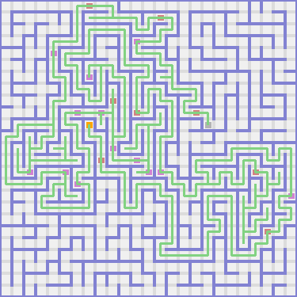
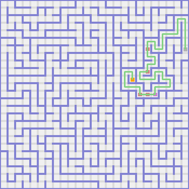
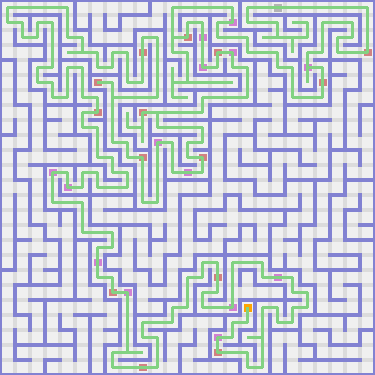
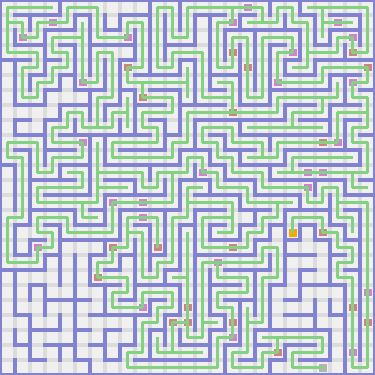

PROLOGUE
I am a botanist and a zoologist. I came to this complex of mazes to catalog flora and fauna. What follows is the journal of my travails.
CHAPTER ONE
I meandered south. Then I hiked east. Then I trudged south. Then I ran west. Again I hoofed it west. Again I meandered west. Again I stepped west. Then I plodded north. Then I strode east. Again I walked east. There was an alligator there. I named it Jordan. It started following me.
I hiked north. Then I trudged west. Then I marched north. There was a lizard there. I named it Adrianna.
I plodded north. Then I strode west. There was a crow there. I named it Anna.
I sauntered north. Then I meandered west. Then I plodded north. Then I meandered east. Again I sprinted east. Then I marched south. Then I hit a dead-end. I was feeling lost so I retraced my steps.
I traipsed west. There was a beautiful peach foxglove there. It smelled like ugli fruit. I picked it.
I paraded west. Then I meandered south. Then I hoofed it west. Then I walked south. Then I ambled east. Then I ran south. There was a hippopotamus there. I named it David.
I ran east. Then I went south. Then I strutted west. Again I toddled west. Then I trudged south. There was a beautiful unmellow yellow rhododendron there. It smelled like nuts.
I ambled south. Then I paraded east. Again I paraded east. Then I ambled north. There was an opossum there. I named it Allison.
I traipsed west. Then I hit a dead-end. I was feeling lost so I retraced my steps.
I trudged east. Then I shuffled south. Again I strode south. Then I shuffled west. There was a beautiful pine green azalea there. It smelled like limes.
I shuffled south. Then I hiked east. Then I plodded south. Then I stepped east. Again I shuffled east. A scary haunt appeared from the north! It came right through the wall! It looked a little like Thomas Jefferson. Then I stepped south. Again I strode south. Then I sauntered west. There was a beautiful olive green buttercup there. It smelled like avocadoes.
I toddled south. Then I shambled east. Then I ambled south. There was a beautiful pacific blue anemone there. It smelled like cranberries.
I trekked south. Then I toddled east. Then I ran north. Then I sprinted east. Then I plodded north. Again I sauntered north. Then I meandered east. Then I hoofed it south. Again I ambled south. Then I went east. There was a squirrel there. I named it Leonardo.
I ran east. Then I walked north. Then I shuffled west. Then I marched north. Then I ambled east. Then I hit a dead-end. I was feeling lost so I retraced my steps.
I ran east. Then I sauntered south. Then I hit a dead-end. I was feeling lost so I retraced my steps.
I trekked west. Then I stepped north. Again I meandered north. Again I walked north. Then I traipsed east. Then I stepped north. Then I strutted west. Again I marched west. Then I trekked south. Then I sauntered west. Then I ambled north. There was a beautiful cerulean carnation there. It smelled like canary melons.
Then I hit a dead-end. I was feeling lost so I retraced my steps.
I meandered east. Again I sauntered east. Then I strutted north. Again I meandered north. Again I sauntered north. Then I hiked east. Then I stepped south. Again I stepped south. Again I strode south. Then I hit a dead-end. I was feeling lost so I retraced my steps.
I toddled north. Again I ran north. Then I hit a dead-end. I was feeling lost so I retraced my steps.
I walked west. Then I hit a dead-end. I was feeling lost so I retraced my steps.
I shuffled south. Then I hit a dead-end. I was feeling lost so I retraced my steps.
I strutted south. Again I ran south. Then I hit a dead-end. I was feeling lost so I retraced my steps.
I toddled south. Then I hit a dead-end. I was feeling lost so I retraced my steps.
I stepped west. Again I trudged west. There was a beautiful wild blue yonder jasmine there. It smelled like currants.
I walked north. Then I shuffled west. Again I shuffled west. Then I hoofed it north. Then I plodded east. Again I strutted east. Then I marched north. There was a beautiful red violet violet there. It smelled like pineapples.
I traipsed west. Then I trudged north. Again I sauntered north. Then I shambled west. Then I strode south. There was a gazelle there. I named it Michelle.
I beat cheeks south. There was a weasel there. I named it Cheyenne.
Then I hit a dead-end. I was feeling lost so I retraced my steps.
I shambled east. Again I meandered east. Then I hit a dead-end. I was feeling lost so I retraced my steps.
I sprinted south. Then I hit a dead-end. I was feeling lost so I retraced my steps.
I ran north. Then I shuffled east. Then I ambled north. Then I toddled west. Then I ambled north. Then I strode west. Then I paraded north. Then I hit a dead-end. I was feeling lost so I retraced my steps.
I sauntered north. Then I hit a dead-end. I was feeling lost so I retraced my steps.
I trudged north. Then I hit a dead-end. I was feeling lost so I retraced my steps.
I shambled north. Then I trudged east. Then I shuffled north. Then I walked west. There was a beautiful melon hyacinth there. It smelled like kiwi fruit.
I ran west. Then I toddled north. Again I stepped north. Again I paraded north. Then I trekked east. Again I beat cheeks east. Then I stepped south. Then I hit a dead-end. I was feeling lost so I retraced my steps.
I went east. Then I hit a dead-end. I was feeling lost so I retraced my steps.
I stepped south. Again I trekked south. Then I trudged east. Again I meandered east. Then I sauntered north. Then I sprinted east. Then I strutted north. There was an oryx there. I named it Jesus.
I strutted east. Then I strode south. Again I beat cheeks south. Then I plodded east. Then I hit a dead-end. I was feeling lost so I retraced my steps.
I shuffled south. Then I sauntered east. There was an impala there. I named it Elizabeth.
I went east. Then I trekked north. Again I hiked north. Then I sprinted west. Then I meandered north. Then I trekked east. Again I shambled east. Again I beat cheeks east. There was a chinchilla there. I named it Bryson.
I meandered east. There was an elephant there. I named it Aidan.
I sauntered east. Then I toddled south. Then I shambled east. Then I ran south. Then I stepped west. Then I ran south. Then I walked west. Again I plodded west. Then I sprinted south. Then I hit a dead-end. I was feeling lost so I retraced my steps.
I went north. Then I paraded east. Then I traipsed north. Then I toddled west. Again I trudged west. Then I walked south. Again I beat cheeks south. Again I hiked south. Again I went south. Then I plodded west. Then I traipsed north. Then I shambled west. There was a beautiful purple heart anemone there. It smelled like kiwi fruit.
I trekked west. Then I trekked south. Again I marched south. Again I shuffled south. Again I beat cheeks south. There was a beautiful shocking pink aster there. It smelled like breadfruits.
I ambled south. Then I meandered east. Then I trudged south. Then I hit a dead-end. I was feeling lost so I retraced my steps.
I sauntered west. Then I hit a dead-end. I was feeling lost so I retraced my steps.
I strode west. Again I beat cheeks west. Then I marched south. Then I sprinted west. Then I stepped south. Then I sprinted east. Again I trudged east. Again I ran east. Then I strutted south. Then I shambled east. Then I stepped south. Then I strode east. Again I paraded east. There was a beautiful beaver holly there. It smelled like huckleberries.
Then I hit a dead-end. I was feeling lost so I retraced my steps.
I walked south. Then I went west. Then I shambled south. Then I trudged east. Again I toddled east. Then I meandered north. Then I walked east. Again I toddled east. Then I sprinted north. Then I hoofed it west. Then I ambled north. Then I walked east. Again I strode east. Then I traipsed south. Again I plodded south. Then I shambled east. Then I strutted north. Again I sauntered north. Again I walked north. Then I plodded west. Again I ran west. Again I sauntered west. Again I ran west. Then I sauntered south. Then I toddled west. There was a beautiful green iri there. It smelled like apples.
I strutted north. Again I strode north. Again I beat cheeks north. Then I toddled west. Then I trekked north. Then I shuffled east. There was a reptile there. I named it Eduardo.
I meandered east. There was a beautiful green yellow begonium there. It smelled like olives.
I trekked north. Then I sauntered east. Again I ambled east. Then I hit a dead-end. I was feeling lost so I retraced my steps.
I stepped north. Then I strode east. Then I meandered north. Then I strode east. Then I stepped south. Again I toddled south. There was a beautiful dandelion tulip there. It smelled like gooseberries.
I sauntered east. Again I strode east. Then I strutted south. There was a beautiful yellow bergamot there. It smelled like lemons. For some reason I ate it. It tasted terrible.
I ran west. Again I hiked west. Then I ran south. Then I walked west. Then I hit a dead-end. I was feeling lost so I retraced my steps.
I went west. Again I shuffled west. Then I shuffled south. Then I hiked west. Then I strutted south. Then I sauntered east. Again I trudged east. There was a beautiful bittersweet foxglove there. It smelled like redcurrants.
I hoofed it east. There was a rhinoceros there. I named it Kaleb.
I hoofed it east. Then I ambled north. Then I toddled east. There was a beautiful granny smith apple rhododendron there. It smelled like salal berries. I picked it and added it to the rest of my bouquet.
I trudged south. Again I paraded south. Then I traipsed east. Again I shuffled east. Then I went south. Then I paraded west. Then I traipsed south. There was a beautiful brick red sunflower there. It smelled like cloudberries.
I ambled south. Then I hiked east. Then I shambled south. Again I plodded south. Again I plodded south. Then I hiked east. Again I strutted east. Then I strode south. Then I traipsed west. Then I hit a dead-end. I was feeling lost so I retraced my steps.
I sauntered north. Again I hoofed it north. Then I hit a dead-end. I was feeling lost so I retraced my steps.
I ambled north. Again I ran north. Again I went north. Again I trudged north. Then I shuffled east. Then I sauntered south. Then I trudged east. Then I shambled south. Again I paraded south. There was a toad there. I named it Samantha.
I beat cheeks south. Again I toddled south. Again I stepped south. Again I paraded south. Again I plodded south. Again I strutted south. Again I stepped south. There was a beautiful razzmatazz bluebell there. It smelled like gooseberries.
I went south. Again I trekked south. Then I hit a dead-end. I was feeling lost so I retraced my steps.
I ambled west. There was a guinea pig there. I named it Liliana.
I ambled west. Again I traipsed west. Then I plodded north. Then I sprinted west. Then I toddled north. Then I marched west. Then I plodded north. Then I meandered west. Again I beat cheeks west. Then I stepped south. Again I toddled south. Again I ambled south. Then I marched east. Then I walked north. Then I plodded east. Then I hoofed it south. Then I shuffled east. Then I shambled south. Then I plodded east. There was a gila monster there. I named it Vincent.
I meandered east. Again I shambled east. Then I ambled south. Then I hoofed it west. Then I sprinted south. There was a chinchilla there. I named it Malachi.
I beat cheeks east. Then I trudged south. Again I meandered south. Again I shuffled south. Then I shambled west. Again I sprinted west. Again I ambled west. Again I meandered west. Again I ambled west. Again I meandered west. There was a beautiful silver camellia there. It smelled like tamarilloes.
I toddled west. Then I hit a dead-end. I was feeling lost so I retraced my steps.
I marched north. Then I ambled west. Again I strutted west. Then I traipsed south. Then I strode west. Again I strode west. Then I hoofed it north. Then I shambled west. Then I walked north. Then I meandered west. Again I hoofed it west. Again I strutted west. Again I hiked west. Again I toddled west. Then I marched north. Then I strutted west. Again I beat cheeks west. There was a beautiful antique brass heather there. It smelled like lychees.
I strode north. Again I shambled north. Then I ran west. Then I sprinted south. Then I hit a dead-end. I was feeling lost so I retraced my steps.
I ran east. Then I strode north. There was a beautiful orchid rosemary there. It smelled like mulberries.
I traipsed west. Then I hit a dead-end. I was feeling lost so I retraced my steps.
I strutted east. There was a beautiful goldenrod bluebell there. It smelled like tangerines.
Then I hit a dead-end. I was feeling lost so I retraced my steps.
I meandered north. Then I meandered east. There was a beautiful sepia rosemary there. It smelled like blackberries.
I strode east. Then I ran south. Then I beat cheeks east. Again I strode east. Again I hoofed it east. Then I trekked north. Then I ran west. There was a wolverine there. I named it Brendan. It started following me.
I trudged north. Then I ran east. Then I shuffled north. Then I went west. Again I strutted west. Then I beat cheeks north. Again I beat cheeks north. Then I ran west. Then I stepped south. Then I hit a dead-end. I was feeling lost so I retraced my steps.
I meandered north. Then I paraded east. Then I hit a dead-end. I was feeling lost so I retraced my steps.
I paraded south. Then I beat cheeks west. Then I ambled north. Then I trekked west. Then I strutted north. Again I walked north. Then I shambled west. Then I traipsed south. Then I hiked west. There was an orangutan there. I named it Jesus.
I beat cheeks west. Again I trekked west. Then I toddled north. Then I trudged west. Again I trudged west. Then I toddled north. Again I hiked north. Then I hit a dead-end. I was feeling lost so I retraced my steps.
I ran south. Then I trekked east. Then I hit a dead-end. I was feeling lost so I retraced my steps.
I shuffled south. Again I hiked south. Again I shuffled south. Again I hiked south. Then I hit a dead-end. I was feeling lost so I retraced my steps.
I marched south. Then I meandered west. Again I strode west. There was a parakeet there. I named it Mariah.
I trekked south. Then I shambled east. Then I sprinted south. There was an aardvark there. I named it Sydney.
I shuffled west. Then I plodded south. There was a giraffe there. I named it Elijah.
I toddled south. Then I paraded east. Then I beat cheeks south. There was a beautiful jazzberry jam hyacinth there. It smelled like rock melons.
I sauntered east. There was a beautiful outrageous orange thistle there. It smelled like cherries. I picked it and added it to the rest of my bouquet.
Then I hit a dead-end. I was feeling lost so I retraced my steps.
I marched west. Then I hit a dead-end. I was feeling lost so I retraced my steps.
I trudged east. Again I trudged east. Then I shuffled south. Then I hoofed it east. Then I sauntered south. Then I sauntered east. There was a beautiful blue green azalea there. It smelled like rambutans.
I traipsed south. Then I trudged west. Again I paraded west. Again I shambled west. Again I stepped west. Again I sauntered west. Again I trudged west. Then I shambled north. Then I hit a dead-end. I was feeling lost so I retraced my steps.
I shuffled north. There was a muskrat there. I named it Daisy.
I plodded north. Then I marched west. Then I hiked north. Again I sprinted north. Again I trekked north. Again I marched north. Again I shambled north. Again I strode north. Again I stepped north. Again I sprinted north. Again I meandered north. Again I toddled north. Then I beat cheeks east. Then I traipsed south. Then I trekked east. Then I shuffled south. Again I shambled south. Then I meandered east. Then I beat cheeks north. Again I marched north. Then I ran east. Then I hiked south. Again I ran south. Again I strutted south. Then I ran east. Then I trekked north. Then I strode east. Again I marched east. Then I ambled north. Then I went east. Again I toddled east. Again I beat cheeks east. Again I strode east. Then I sauntered south. There was a beautiful blush petunium there. It smelled like feijoas.
I ambled south. There was a tapir there. I named it Maya.
Then I hit a dead-end. I was feeling lost so I retraced my steps.
I stepped west. Then I hiked south. Again I strode south. Then I trekked east. Again I hiked east. Then I toddled north. Again I went north. Then I ambled east. Again I strode east. Again I ambled east. Again I shuffled east. There was a polar bear there. I named it Brody.
I trudged south. Again I shuffled south. Then I toddled west. There was a fish there. I named it Parker.
I traipsed north. There was a zebra there. I named it Sara.
I sprinted west. Then I paraded south. Again I hiked south. Again I walked south. Again I ambled south. Then I shambled east. Then I walked down a flight of stairs. So far two animals were following me, and I held three flowers. It seemed like I had explored about seventy-seven percent of this floor.
CHAPTER TWO
I stepped left. Again I went left. Again I paraded left. Again I ran left. Again I stepped left. Again I toddled left. Then I hit a dead-end. I was feeling lost so I retraced my steps.
I paraded up. Again I plodded up. Then I marched left. Again I hiked left. Then I hit a dead-end. I was feeling lost so I retraced my steps.
I hiked down. Then I shambled left. Again I traipsed left. There was a lion there. I named it Rebecca.
I sauntered up. Again I trekked up. Then I plodded left. Then I trekked up. Then I hoofed it left. Again I trekked left. Then I shambled up. Again I strode up. There was a beautiful atomic tangerine lotus flower there. It smelled like cranberries.
I plodded up. Again I went up. Then I plodded right. Then I strode down. The specter appeared again from the east. This time it looked like Richard Nixon. Again I meandered down. Then I meandered right. Then I hoofed it up. Then I trudged right. Then I paraded up. There was a gorilla there. I named it Leah.
I hiked left. Then I hit a dead-end. I was feeling lost so I retraced my steps.
I hoofed it right. Then I sprinted down. Then I hit a dead-end. I was feeling lost so I retraced my steps.
I meandered down. Then I hit a dead-end. I was feeling lost so I retraced my steps.
I stepped up. Then I paraded right. There was a beautiful neon carrot thistle there. It smelled like passionfruits.
I trudged right. Then I hit a dead-end. I was feeling lost so I retraced my steps.
I walked down. Then I ambled right. Again I toddled right. Then I trekked up. Then I marched right. Then I hiked up. Again I traipsed up. There was a beautiful shamrock lotus flower there. It smelled like raisins.
I walked right. Then I sauntered down. Then I hit a dead-end. I was feeling lost so I retraced my steps.
I toddled down. Then I trudged right. Then I ambled up. Then I hiked right. Then I paraded up. Again I shuffled up. Again I trudged up. Again I went up. There was a beautiful timberwolf gerbera daisy there. It smelled like kiwi fruit.
I hiked up. There was a beautiful robin's egg blue peony there. It smelled like olives.
I traipsed left. Then I hit a dead-end. I was feeling lost so I retraced my steps.
I strode right. Then I shambled up. Again I walked up. Then I strode right. Then I traipsed up. Again I trudged up. There was a lion there. I named it Samuel.
I trekked up. Again I traipsed up. Then I ambled left. Again I trekked left. Then I traipsed up. Again I beat cheeks up. Then I sauntered left. Then I hiked down. Again I toddled down. Then I trekked left. Again I hoofed it left. There was a gorilla there. I named it Thomas.
I meandered left. Again I toddled left. Then I ambled up. There was a beautiful eggplant babys breath there. It smelled like canary melons.
I trudged up. There was a fish there. I named it Alondra. It started following me.
I stepped left. Again I sprinted left. Then I hiked up. Again I trudged up. Then I strode left. Then I shuffled up. There was a porcupine there. I named it Austin.
I ambled right. Then I toddled up.
Alondra asked Brendan, "What exactly are you?"
"Well, I'm a wolverine and I'm carnivorou."
I sauntered right. Then I trekked up. Again I beat cheeks up. Again I walked up. There was an elephant there. I named it Wyatt.
I trudged right. Then I went down. Then I hiked right. Again I traipsed right. Then I paraded down. Then I shuffled left. Then I shuffled down. Then I went right. There was a pig there. I named it Daniel. It started following me.
I marched right. There was a platypus there. I named it Andrea.
I shuffled down. Again I strode down. There was a pig there. I named it Paul.
I stepped down. Then I sauntered right. Again I hiked right. Again I plodded right. Then I traipsed down. There was a chimpanzee there. I named it Peyton.
I paraded right. Then I marched up. Again I ran up. Again I hiked up. Again I marched up. Again I walked up. Again I went up. Then I hit a dead-end. I was feeling lost so I retraced my steps.
I meandered left. Then I trekked up. Then I sauntered left. Then I ambled up. Then I toddled right. Again I sprinted right. Then I trudged up. Again I toddled up. Then I toddled left. Again I shambled left. Again I strode left. Again I hiked left. Again I hoofed it left. Again I walked left. Again I trudged left. Again I marched left. Then I hit a dead-end. I was feeling lost so I retraced my steps.
I ambled down. There was a beautiful gray daisy there. It smelled like papayas.
I marched left. Again I strutted left. Again I strutted left. Again I walked left. Then I meandered down. Then I sprinted left. Then I trekked up. Then I paraded left. Again I sauntered left. Again I shuffled left. Then I hoofed it up. Then I walked left. Again I trekked left. Again I strutted left. Again I ran left. There was an alligator there. I named it Juliana.
I meandered down. Then I shuffled right. Then I paraded down. Then I hiked right. Then I ran down. Then I hit a dead-end. I was feeling lost so I retraced my steps.
I strutted up. There was a lemur there. I named it Gracie.
I paraded right. There was a beautiful carnation pink violet there. It smelled like goji berries.
I marched down. Again I trekked down. There was a beautiful white anemone there. It smelled like cantaloupes.
I meandered right. Then I plodded down. Then I traipsed left. Again I hiked left. Again I stepped left. Then I hoofed it up. Then I ambled left. Then I ran down. Then I went left. Again I went left. Again I hoofed it left. Again I shuffled left. Then I meandered down. Then I toddled left. Again I went left. Again I strutted left. There was a dingo there. I named it Ellie.
I meandered left. Then I hit a dead-end. I was feeling lost so I retraced my steps.
I sauntered up. There was a beautiful gray begonium there. It smelled like rambutans.
I trudged up. Then I meandered left. Then I beat cheeks down. Then I strode left. Then I meandered up. Then I went left. Then I meandered up. Then I paraded right. Again I walked right. Then I sauntered up. Then I sprinted left. Again I shuffled left. Again I toddled left. Then I ambled up. Then I sprinted left. Then I marched down. Again I marched down. Then I ran right. Then I sprinted down. Then I went left. Then I marched down. Again I beat cheeks down. Then I meandered right. Then I plodded down. Again I marched down. Then I ran left. There was a wolf there. I named it Ana.
I traipsed up. Then I hit a dead-end. I was feeling lost so I retraced my steps.
I hoofed it down. Again I shuffled down. Then I hiked right. Again I strode right. Then I hiked down. Then I meandered left. Again I strode left. Then I marched down. Again I ambled down. There was a mink there. I named it Kyle.
I plodded down. Again I paraded down. Again I paraded down. Then I traipsed right. Then I sauntered down. Then I hiked left. Then I trekked down. Then I sauntered right. Then I walked down. Then I marched left. Then I toddled down. Then I trudged right. Again I marched right. Again I shambled right. There was a beautiful raw sienna bird of paradise there. It smelled like goji berries.
I traipsed right. There was a beautiful blue green camellia there. It smelled like breadfruits.
I beat cheeks right. Again I stepped right. Then I walked up. There was a bear there. I named it Leslie.
I hoofed it up. Then I plodded left. Again I sprinted left. Then I plodded down. Then I ambled left. Then I sauntered up. Again I strutted up. Then I paraded left. Then I trekked up. Then I stepped right. Again I strutted right. Again I trekked right. Then I hiked down. Then I shambled right. Again I sauntered right. Then I shuffled down. Again I stepped down. Then I hit a dead-end. I was feeling lost so I retraced my steps.
I beat cheeks left. Then I hit a dead-end. I was feeling lost so I retraced my steps.
I trekked down. Again I sprinted down. Then I hit a dead-end. I was feeling lost so I retraced my steps.
I hiked right. Then I hit a dead-end. I was feeling lost so I retraced my steps.
I marched down. Then I hit a dead-end. I was feeling lost so I retraced my steps.
I trekked up. Then I hit a dead-end. I was feeling lost so I retraced my steps.
I marched right. Then I traipsed up. Again I went up. Then I trudged left. Again I ran left. There was a beautiful yellow bird of paradise there. It smelled like bell peppers. I picked it and added it to the rest of my bouquet.
Then I hit a dead-end. I was feeling lost so I retraced my steps.
I trekked right. There was a bison there. I named it Devin.
I shambled right. Then I ran down. Again I trudged down. Again I paraded down. Then I ambled right. Then I sauntered up. Then I strutted right. Then I trudged down. Then I shuffled right. There was a beautiful indigo gerbera daisy there. It smelled like star fruit.
I sauntered up. Then I paraded right. Then I trekked down. Then I trekked right. Then I shambled up. Then I hiked right. Then I ran down. Then I strutted right. Again I toddled right. Again I plodded right. Then I trekked down. Again I sprinted down. Again I marched down. Then I paraded right. Then I sprinted up. Again I traipsed up. Again I marched up. There was a beautiful bittersweet babys breath there. It smelled like eggplants.
Then I hit a dead-end. I was feeling lost so I retraced my steps.
I marched left. Again I stepped left. There was a beautiful brown peach blossom there. It smelled like persimmons.
Then I hit a dead-end. I was feeling lost so I retraced my steps.
I strutted up. There was a porpoise there. I named it Hayden.
I walked right. Again I strutted right. Again I toddled right. Again I hiked right. Then I stepped down. Again I shambled down. Again I strutted down. Then I ran right. There was a beautiful green yellow carnation there. It smelled like gooseberries.
I ran down. Then I paraded left. Then I went down. Then I paraded right. Again I meandered right. Then I sauntered up. Then I went right. Then I marched down. Again I shambled down. Then I stepped left. Again I stepped left. Then I meandered down. Then I meandered left. Then I strutted down. Then I trudged left. Again I hoofed it left. There was a beautiful brick red clover there. It smelled like star fruit.
I shambled down. Then I hit a dead-end. I was feeling lost so I retraced my steps.
I shuffled left.
Daniel asked Brendan, "What exactly are you?"
"Well, I'm a wolverine and I'm carnivorou."
I strutted up. Then I walked left. Then I hit a dead-end. I was feeling lost so I retraced my steps.
I stepped left. Again I sprinted left. Again I shuffled left. Then I sauntered up. Then I hit a dead-end. I was feeling lost so I retraced my steps.
I stepped up. Again I plodded up. Then I ran left. Then I marched up. Then I trekked right. Again I hiked right. Then I toddled down. Then I hoofed it right. Again I hoofed it right. There was a parakeet there. I named it Aaliyah.
I sauntered down. Then I walked right. Then I shambled up. Again I ambled up. Then I meandered left. Again I trekked left. Then I traipsed up. Again I trekked up. Then I trekked left. Then I strode down. Then I trudged left. Then I paraded up. Again I strutted up. Then I marched left. Then I sauntered down. Again I sprinted down. Then I went left. Then I shambled up. Then I plodded left. Then I trekked up. Then I trekked left. Then I ambled down. Again I trudged down. Again I strode down. Then I hoofed it left. Then I hiked down. Then I meandered left. Then I hiked up. Then I walked left. Then I plodded down. Again I marched down. Then I traipsed right. Then I strode down. Then I went right. Then I marched up. Then I stepped right. Then I strutted down. Then I went right. Then I plodded up. Then I stepped right. Then I beat cheeks down. Again I shuffled down. Then I plodded right. Again I toddled right. Then I trudged down. Again I paraded down. There was a beautiful shadow bluebell there. It smelled like plums.
I went right. Then I paraded up. Again I plodded up. Then I toddled right. Then I toddled down. Then I hiked right. There was a beautiful mountain meadow jasmine there. It smelled like physaliss.
I ambled down. Then I ran left. Then I strode down. There was a beautiful wild watermelon amarylli there. It smelled like gooseberries.
I plodded right. Then I sauntered down. Then I went left. Again I went left. Then I sauntered up. Then I trekked left. Then I shambled down. There was a kangaroo there. I named it Wesley. It started following me.
I sauntered left. Then I went down. Then I marched left. Then I toddled down. Then I trekked left. Then I sprinted down. There was a platypus there. I named it Angelina.
Then I hit a dead-end. I was feeling lost so I retraced my steps.
I traipsed up. Then I stepped left. Again I shuffled left. Again I shuffled left. Again I trekked left. Then I strode down. Then I traipsed left. Then I strutted down. There was a beautiful green yellow peach blossom there. It smelled like cherimoyas. I picked it and added it to the rest of my bouquet.
I trekked down. Again I toddled down. Then I went right. Again I beat cheeks right. Then I sauntered up. Then I marched right. There was a beautiful maroon tansy there. It smelled like jackfruits. I picked it and added it to the rest of my bouquet.
I sauntered down. Then I hit a dead-end. I was feeling lost so I retraced my steps.
I went up. Then I hit a dead-end. I was feeling lost so I retraced my steps.
I strutted up. Again I meandered up. Then I strode right. Then I stepped up. Then I hoofed it right. Again I hoofed it right. Then I marched down. Again I walked down. Again I strode down. Then I plodded right. Again I ambled right. There was a koala there. I named it Giselle.
I plodded right. Again I trekked right. Then I meandered up. Then I shambled left. Then I hit a dead-end. I was feeling lost so I retraced my steps.
I hiked up. Then I meandered right. Then I meandered up. There was a beautiful pink flamingo dahlium there. It smelled like coconuts.
I stepped right. Again I strode right. Then I traipsed up. Again I marched up. Then I walked right. Again I marched right. Then I walked down. Again I hiked down. There was a marmoset there. I named it Kelsey.
Then I hit a dead-end. I was feeling lost so I retraced my steps.
I toddled left. Then I sauntered down. Again I ambled down. Again I meandered down. Then I paraded right. Again I strode right. Again I marched right. There was a beautiful wild watermelon holly there. It smelled like nectarines.
Then I hit a dead-end. I was feeling lost so I retraced my steps.
I trekked up. Then I paraded right. Again I walked right. Again I shuffled right. Then I sprinted down. Then I hoofed it right. Then I ambled up. Then I went right. Then I went up. Then I shambled left. Again I sprinted left. Then I hiked up. There was a beautiful brown water lily there. It smelled like star fruit.
I trudged left. Then I hoofed it down. There was a ferret there. I named it Malachi.
I sauntered left. Then I hiked up. Again I shuffled up. Then I paraded right. Then I ran up. Again I strode up. There was a beautiful fuzzy wuzzy peony there. It smelled like kumquats. I picked it and added it to the rest of my bouquet.
I trekked up. There was a baboon there. I named it Megan.
I ambled up. There was a beautiful red violet narcissu there. It smelled like apricots.
I paraded up. There was a wombat there. I named it Thomas.
I trekked right. There was a beautiful yellow orange camellia there. It smelled like grapefruits.
I hoofed it right. Again I sauntered right. Again I hiked right. Again I trudged right. Again I paraded right. There was a beautiful salmon delphinium there. It smelled like damsons.
I ambled right. Then I plodded up. Again I strode up. Then I shuffled left. Then I hoofed it down. Then I hit a dead-end. I was feeling lost so I retraced my steps.
I hiked up. Again I ambled up. Again I beat cheeks up. Then I hiked right. Again I walked right. Again I stepped right. Then I shuffled down. Then I sprinted right. Then I hoofed it up. Then I ambled right. Again I traipsed right. Then I marched down. Again I beat cheeks down. Then I strode left. There was a beautiful fern rhododendron there. It smelled like canary melons.
I went left. Again I shambled left. Then I marched down. Again I stepped down. There was a jaguar there. I named it Amy.
I stepped right. Then I ambled down. Then I beat cheeks left. Again I went left. Then I walked up. Then I went left. Then I hoofed it down. Again I plodded down. Then I plodded right. Then I sprinted down. Then I beat cheeks left. Again I ambled left. Then I beat cheeks up. Then I hiked left. Then I ran down. Then I ambled left. Then I trekked down a flight of stairs. So far five animals were following me, and I held seven flowers. It seemed like I had explored about eighty-one percent of this floor.
CHAPTER THREE
I went east. Again I toddled east. Then I hit a dead-end. I was feeling lost so I retraced my steps.
I traipsed south. Then I hoofed it east. Again I hoofed it east. Then I shuffled north. Then I toddled east. Then I beat cheeks south. Again I strode south. The phantasm appeared again from the east. It came right through the wall! This time it looked like John Adams. It said, "Try and fail, but don't fail to try," to me. Again I hoofed it south. Then I strode east. There was a raccoon there. I named it Leslie.
I stepped north. Then I ran east. Then I stepped north. Then I hoofed it east. Then I trekked south. Then I stepped east. Again I strutted east. Again I trudged east. Then I sauntered south. Then I sprinted east. Then I ran south. Then I beat cheeks west. Again I stepped west. Again I plodded west. Again I went west. There was a mongoose there. I named it Nathan. It started following me.
Then I hit a dead-end. I was feeling lost so I retraced my steps.
I shambled north. Then I meandered west. Again I beat cheeks west. Then I beat cheeks south. Again I toddled south. Then I went down a flight of stairs. So far six animals were following me, and I held seven flowers. It seemed like I had explored about five percent of this floor.
CHAPTER FOUR
I strode right. Then I paraded down. Then I toddled left.
Jordan asked Alondra, "What exactly are you?"
"Well, I'm a fish. I have a gill and I can swim, can you?"
"No I can't," replied Jordan.
I sauntered left. Then I meandered down. Then I hoofed it left. There was a beautiful salmon lotus flower there. It smelled like nuts.
I strutted left. Then I ran up. Again I ran up. Then I hit a dead-end. I was feeling lost so I retraced my steps.
I plodded right. Then I sauntered up. Again I shuffled up. Then I paraded left. Again I toddled left. There was a woodchuck there. I named it Aiden.
I traipsed left. There was a beautiful banana mania columbine there. It smelled like chili peppers.
I paraded down. Then I sprinted left. Then I walked up. Then I traipsed left. Again I trekked left. Then I plodded down. Then I strutted right. Then I hit a dead-end. I was feeling lost so I retraced my steps.
I shambled left. Then I marched down. Then I shuffled right. Then I went down. Then I shambled left. Then I strutted down.
Jordan asked Nathan, "What exactly are you?"
"Well, I'm a mongoose."
I beat cheeks right. Then I hit a dead-end. I was feeling lost so I retraced my steps.
I plodded down. Then I toddled left. Then I shambled up. Again I walked up. There was a beautiful sea green lavender there. It smelled like blood oranges.
I sauntered up. There was a seal there. I named it Jacqueline.
I toddled up. Then I ambled left. Again I walked left. There was an alpaca there. I named it Sabrina.
I paraded left. Again I sprinted left. Again I traipsed left. Then I marched down. Then I traipsed right. Again I hoofed it right. Then I trudged down. There was a beautiful red tansy there. It smelled like canary melons.
I meandered right. Again I sprinted right. There was a polar bear there. I named it Wesley. It started following me.
I trudged down. Again I sprinted down. There was a beautiful gray daisy there. It smelled like tangerines.
Then I hit a dead-end. I was feeling lost so I retraced my steps.
I meandered up. Then I ambled left. Then I hit a dead-end. I was feeling lost so I retraced my steps.
I traipsed left. Then I toddled down. Then I sauntered left. Again I trudged left. There was a beautiful mauvelous hibiscu there. It smelled like pears. I picked it and added it to the rest of my bouquet.
I beat cheeks down. Then I shambled right. Again I traipsed right. Then I hit a dead-end. I was feeling lost so I retraced my steps.
I hoofed it up. Again I meandered up. Then I strutted right. There was a beautiful tan marigold there. It smelled like mandarines.
I traipsed up. Then I sprinted left. There was a beautiful silver peach blossom there. It smelled like coconuts.
Then I hit a dead-end. I was feeling lost so I retraced my steps.
I strode right. Then I trudged down. Then I hit a dead-end. I was feeling lost so I retraced my steps.
I traipsed right. Again I beat cheeks right. Again I hiked right. Again I paraded right. Again I sauntered right. Again I toddled right. Again I hiked right. Then I hit a dead-end. I was feeling lost so I retraced my steps.
I sprinted down. Then I hit a dead-end. I was feeling lost so I retraced my steps.
I sauntered down. Then I hit a dead-end. I was feeling lost so I retraced my steps.
I shambled down. Again I went down. Then I strode left. Again I stepped left. Again I strode left. Then I paraded down. Then I shambled right. Again I strode right. Again I sauntered right. There was a beautiful wild blue yonder aster there. It smelled like pomegranates. I picked it and added it to the rest of my bouquet.
I trekked down. Again I walked down. Then I beat cheeks right. Again I paraded right. Then I hit a dead-end. I was feeling lost so I retraced my steps.
I sprinted down. Again I ran down. Again I sauntered down. Again I trekked down. Then I strutted right. Then I paraded up. Then I hit a dead-end. I was feeling lost so I retraced my steps.
I sauntered down. Then I hit a dead-end. I was feeling lost so I retraced my steps.
I plodded left. Then I hit a dead-end. I was feeling lost so I retraced my steps.
I walked right. Again I walked right. Again I strutted right. Then I shuffled down. Then I toddled right. Again I marched right. Then I hiked down. Again I shuffled down. Again I strode down. There was a giraffe there. I named it Ava.
I strutted down. Then I walked left. Then I trudged up. Again I sprinted up. Again I strode up. Then I hiked left. Again I went left. There was a ferret there. I named it Elijah.
I plodded down. Then I ran right. Then I hiked down. Again I traipsed down. Again I beat cheeks down. Again I trekked down. Then I sauntered right. Then I shambled down. Then I ran left. Then I ran down. There was a beautiful periwinkle zinnium there. It smelled like bananas.
I shambled down. Again I shuffled down. Then I hiked right. There was a beautiful manatee chrysantemum there. It smelled like nuts.
I marched down. Again I shambled down. There was a rabbit there. I named it Donovan.
I meandered left. Again I traipsed left. Then I trekked down. Then I plodded right. Then I trekked down. Again I shambled down. Then I strode right. Again I ambled right. Then I shuffled up. Then I shambled left. Then I toddled up. Then I hoofed it right. Again I went right. Again I walked right. Then I hoofed it down. Again I hoofed it down. Again I walked down. Then I stepped right. Then I beat cheeks down. Then I trekked left. Then I hit a dead-end. I was feeling lost so I retraced my steps.
I beat cheeks down. Then I hit a dead-end. I was feeling lost so I retraced my steps.
I trudged left. Then I ambled up. There was a zebra there. I named it Jordyn.
Then I hit a dead-end. I was feeling lost so I retraced my steps.
I plodded right. Then I hit a dead-end. I was feeling lost so I retraced my steps.
I sprinted down. Then I hit a dead-end. I was feeling lost so I retraced my steps.
I beat cheeks up. Then I hoofed it right. Then I hit a dead-end. I was feeling lost so I retraced my steps.
I sauntered up. Then I ran left. Then I sprinted down. Again I ran down. Then I hit a dead-end. I was feeling lost so I retraced my steps.
I marched up. Then I hit a dead-end. I was feeling lost so I retraced my steps.
I beat cheeks right. Then I hit a dead-end. I was feeling lost so I retraced my steps.
I trudged right. Again I strode right. Again I toddled right. Then I shambled up. There was a beautiful olive green delphinium there. It smelled like watermelons.
I stepped up. Again I strutted up. Then I trekked right. Then I paraded up. Again I beat cheeks up. Again I traipsed up. Then I hit a dead-end. I was feeling lost so I retraced my steps.
I trudged left. Then I sauntered up. Then I strutted left. Then I sprinted up. Then I ambled right. Then I strutted up. Again I walked up. There was a beautiful goldenrod lily there. It smelled like guavas.
I walked right. Then I marched up. Then I went right. Then I sprinted down. Again I meandered down. Then I plodded left. Then I paraded down.
Nathan asked Jordan, "What exactly are you?"
"Well, I'm an alligator and I'm carnivorou."
I toddled right. Then I walked down. Then I sprinted right. Again I beat cheeks right. Then I hoofed it down. Again I trekked down. Again I stepped down. Then I shuffled left. Then I meandered down. Then I ambled right. Then I walked down. Then I marched left. Again I walked left. Then I trudged down. Then I beat cheeks left. Then I trekked down. Then I went left. Then I strode down. Again I shuffled down. Again I toddled down. Then I hit a dead-end. I was feeling lost so I retraced my steps.
I traipsed left. Then I ran down. Then I strutted left. Then I hoofed it down. Then I sauntered right. Then I hiked down. Again I shuffled down. Again I trudged down. Then I sauntered right. There was a beautiful scarlet dahlium there. It smelled like gooseberries.
I toddled up. Again I toddled up. Then I shambled right. Then I walked up. Again I hoofed it up. Again I plodded up. There was a wombat there. I named it Charles.
I trudged right. Then I sprinted down. The phantasm appeared again from the west. This time it looked like Thomas Jefferson. It said, "On matters of style, swim with the current, on matters of principle, stand like a rock," to me. Then I trekked right. Then I toddled up. There was a beautiful eggplant holly there. It smelled like rambutans.
I sauntered right.
Jordan asked Wesley, "What exactly are you?"
"Well, I'm a polar bear and I'm red. I can bark, can you?"
"No I can't," replied Jordan.
I walked down. Again I marched down. Then I shambled left. Again I sauntered left. Then I trekked down. Then I went right. Then I traipsed down. Then I went left. Again I sprinted left. Then I strutted down. Then I paraded right. Again I ran right. Again I hiked right. Then I hoofed it down. Again I stepped down. Then I hit a dead-end. I was feeling lost so I retraced my steps.
I paraded left. Then I hoofed it down. Then I hiked left. Then I sprinted down. Then I hiked right. Again I trekked right. Then I shambled down. Again I meandered down. Then I hit a dead-end. I was feeling lost so I retraced my steps.
I shambled left. Then I meandered down. Again I sauntered down. Then I went right. Then I ambled down. There was a beautiful spring green sunflower there. It smelled like papayas.
I hiked left. Again I walked left. Again I trekked left. Then I toddled up. Then I toddled left. Then I beat cheeks up. Then I shambled left. There was a ewe there. I named it Gracie.
Then I hit a dead-end. I was feeling lost so I retraced my steps.
I strode up. Then I stepped left. Again I beat cheeks left. Then I paraded down. Again I stepped down. Then I paraded right. Then I beat cheeks down. Then I ambled left. Again I shambled left. Again I paraded left. Again I went left. Again I walked left. Then I ambled up. Then I went left. There was a chameleon there. I named it Edward.
I shuffled up. Again I plodded up. Then I meandered left. Then I marched up. There was an elephant there. I named it Alexandria.
I strutted up. Then I hit a dead-end. I was feeling lost so I retraced my steps.
I ran down. Again I strode down. Again I toddled down. Then I beat cheeks right. Then I hit a dead-end. I was feeling lost so I retraced my steps.
I traipsed right. There was a beautiful maroon buttercup there. It smelled like jambuls. For some reason I ate it. It tasted terrible.
I sauntered down. Then I hit a dead-end. I was feeling lost so I retraced my steps.
I marched up. Again I paraded up. Then I sprinted left. Then I sprinted down. Then I beat cheeks left. Then I hiked up. Again I stepped up. Again I beat cheeks up. Then I hit a dead-end. I was feeling lost so I retraced my steps.
I strode right. Then I marched up. There was a beautiful sky blue daisy there. It smelled like dragonfruits.
I toddled up. Then I ran left. Then I strutted up. Then I strode left. Then I beat cheeks down. Again I meandered down. Then I ambled left. Then I marched up. Again I walked up. Then I strode left. Again I marched left. Again I ambled left. Then I hit a dead-end. I was feeling lost so I retraced my steps.
I meandered down. Again I strode down. Then I plodded left. Then I shuffled up. Then I strutted left. Then I beat cheeks down. Again I sprinted down. Then I trudged left. Again I trekked left. Then I walked down. Then I hiked right. Then I hit a dead-end. I was feeling lost so I retraced my steps.
I walked down. Then I toddled right. There was a koala there. I named it Mario.
I stepped up. There was a beautiful jazzberry jam amarylli there. It smelled like limes.
I toddled right. Then I strutted down. Again I trudged down. Again I stepped down. Then I sprinted left. Again I plodded left. Again I toddled left. Then I hoofed it up. Then I toddled left. There was a beautiful raw sienna sage there. It smelled like salal berries.
I shuffled down. Then I toddled left.
Wesley asked Daniel, "What exactly are you?"
"Well, I'm a pig and I'm cute. I have a bone and I can lie down, can you?"
"No I can't, but I do know how to bark!" replied Wesley.
I hoofed it left. Again I shuffled left. There was a beautiful sunglow sage there. It smelled like rambutans.
I went left. Again I hiked left. Again I meandered left. Again I trudged left. Then I hit a dead-end. I was feeling lost so I retraced my steps.
I went up. Then I hiked right. Again I meandered right. Then I strode up. Again I shuffled up. Then I ran left. Then I ran down. Then I hoofed it left. Again I hoofed it left. Then I stepped down. Then I sauntered left. There was a llama there. I named it Mackenzie.
I trudged left. Again I traipsed left. Then I hiked up. Again I shambled up. Again I traipsed up. Again I went up. There was a ground hog there. I named it Brady.
Then I hit a dead-end. I was feeling lost so I retraced my steps.
I trekked right. There was a tapir there. I named it Katherine.
Then I hit a dead-end. I was feeling lost so I retraced my steps.
I shambled right. Again I sauntered right. Then I hiked up. There was a gazelle there. I named it Destiny.
I toddled right. Then I trekked up. Then I meandered right. Again I strutted right. Then I beat cheeks up. Then I shuffled right. Then I walked down. Then I sprinted right. Again I strode right. Then I trekked up. Again I meandered up. Then I stepped right. Then I marched up. Again I sprinted up. Then I marched right. Then I meandered down. Then I beat cheeks right. Again I walked right. Then I strutted up. Then I walked right. Then I walked down. There was a reindeer there. I named it Jennifer.
I trekked right. Then I stepped up. Again I trudged up. Again I sprinted up. Then I marched right. There was a toad there. I named it Trinity. It started following me.
I trekked up. Then I meandered right. Then I stepped up. There was a leopard there. I named it Abraham.
I ambled up. Then I went left. Then I hiked up. There was a beautiful brick red bottlebrush there. It smelled like clementines.
I went left. Then I ambled up. Again I trudged up. Again I sauntered up. Then I plodded left. Then I ambled up. Then I traipsed left. Then I strode up. Then I paraded right. Then I marched up. Then I stepped left. Again I toddled left. Then I toddled down. Then I toddled left. Then I walked down. Again I marched down. Then I ambled right. Again I shuffled right. There was a beautiful beaver lily there. It smelled like rambutans.
I strode down. Again I stepped down. Again I trudged down. Again I hiked down. Then I traipsed left. Then I hit a dead-end. I was feeling lost so I retraced my steps.
I strode right. Again I traipsed right. Then I ran down. Then I toddled left. Again I stepped left. Again I meandered left. Again I strode left. There was a frog there. I named it Alexis.
Then I hit a dead-end. I was feeling lost so I retraced my steps.
I hoofed it down. Then I meandered left. Again I strode left. Again I beat cheeks left. Again I stepped left. Again I hiked left. Then I hit a dead-end. I was feeling lost so I retraced my steps.
I toddled up. Then I shuffled left. Again I ambled left. Again I meandered left. Again I hoofed it left. Again I hoofed it left. Again I ran left. Then I hit a dead-end. I was feeling lost so I retraced my steps.
I paraded down. Then I traipsed right. Again I beat cheeks right. Again I meandered right. There was a skunk there. I named it Dominic.
I stepped down. Then I shambled right. Again I paraded right. Then I sauntered down. Then I plodded left. Again I strode left. Then I paraded down. Again I marched down. Again I paraded down. Then I sauntered left. Then I plodded down. Then I went left. Again I ran left. Then I shuffled down. Then I strutted left. Then I trudged up. Again I shambled up. Then I sauntered left. Then I ambled up. There was a beautiful sunset orange marigold there. It smelled like breadfruits.
I strutted up. There was a guinea pig there. I named it Kyle.
Then I hit a dead-end. I was feeling lost so I retraced my steps.
I shambled right. Then I toddled up. Then I plodded right. Then I hoofed it up. Then I hoofed it left. There was a ground hog there. I named it Sophia.
I trekked left. Then I sprinted up. Then I shambled right. Then I hiked up. There was an elephant there. I named it Jillian.
I ambled left. Then I ran up. There was a kangaroo there. I named it Amber.
I beat cheeks up. Then I hiked right. Again I paraded right. Then I toddled up. Again I meandered up. Again I beat cheeks up.
Alondra asked Trinity, "What exactly are you?"
"Well, I'm a toad. I can fool fly, can you?"
"No I can't, but I do know how to be pet!" replied Alondra.
I stepped left. Then I traipsed up. There was a hippopotamus there. I named it Mason.
I paraded up. Then I hit a dead-end. I was feeling lost so I retraced my steps.
I went left. Then I strutted up. Again I toddled up. Then I beat cheeks right. Again I trudged right. Then I sprinted down. Then I trudged right. Then I hit a dead-end. I was feeling lost so I retraced my steps.
I walked down. Then I sauntered right. Again I toddled right. Then I ambled up. Again I shuffled up. Then I shambled right. Then I hit a dead-end. I was feeling lost so I retraced my steps.
I sauntered left. Then I sauntered up. Again I walked up. Then I strutted right. Then I sprinted down. There was a porpoise there. I named it Katelyn.
I sprinted right. Again I sprinted right. Then I marched down. Again I hoofed it down. Again I ran down. Then I hit a dead-end. I was feeling lost so I retraced my steps.
I sprinted left. Then I ran down. Again I hoofed it down. Again I strode down. Then I sauntered right. There was a beautiful jungle green amarylli there. It smelled like figs. I picked it and added it to the rest of my bouquet.
I beat cheeks up. Then I sauntered right. Then I trudged up. Again I shuffled up. Then I ambled right. Then I paraded down. Again I walked down. Again I strode down. Then I sauntered left. Then I stepped down. Then I trekked right. Then I sauntered down. Again I hoofed it down. Then I paraded right. Then I marched up. Then I walked right. Then I hiked up. Then I meandered right. There was a beautiful tumbleweed gerbera daisy there. It smelled like mangoes. I picked it and added it to the rest of my bouquet.
I hoofed it up. Again I sprinted up. There was a sloth there. I named it Jasmine.
I beat cheeks left. There was a beautiful tropical rain forest rose there. It smelled like blueberries.
I hiked left. Then I shambled down a flight of stairs. Nathan the mongoose stopped following me for some reason.
So far seven animals were following me, and I held eleven flowers. It seemed like I had explored about eighty-four percent of this floor.
CHAPTER FIVE
I sprinted down. Then I hoofed it left. There was a hippopotamus there. I named it Diana.
I ambled down. Then I strode left. Then I sprinted down. Again I walked down. Then I hoofed it right. Then I shuffled down. Then I sprinted right. Then I plodded up. Then I ambled right. Then I sauntered down. Then I plodded right. Again I strode right. Then I trudged up. Then I paraded left. There was a mink there. I named it Rylee.
I went up. Then I toddled left. There was a beautiful cerise hyacinth there. It smelled like dragonfruits.
I strutted up. Then I trudged left. Then I traipsed down. Then I beat cheeks left. Then I hit a dead-end. I was feeling lost so I retraced my steps.
I strode up. Then I went right. Then I hiked up. Then I toddled right. Again I paraded right. Then I sprinted down. Then I beat cheeks left. Then I ran down. Then I trekked right. Again I trekked right. Again I traipsed right. Then I sauntered up. Then I shuffled left. Then I ambled up. Then I trekked right. Again I hiked right. Again I ran right. Again I hoofed it right. There was a beautiful desert sand hyacinth there. It smelled like chili peppers.
I shambled right. Then I toddled down. Then I sprinted left. Then I toddled down. Then I meandered right. Then I ran down. There was a beautiful salmon ladys slipper there. It smelled like breadfruits.
I traipsed left. Then I hiked down. Again I sprinted down. Then I beat cheeks right. Then I plodded up. Then I toddled right. Then I walked down. Then I marched right. Then I ran down. Then I paraded left. Then I marched down. Then I shuffled left. Then I walked up. Then I meandered left. Again I ambled left. Again I strutted left. Again I toddled left. Then I strutted down. Again I stepped down. Then I toddled right. Then I sauntered down. The specter appeared again from the east. It came right through the wall! It still looked like Thomas Jefferson. It said, "Honesty is the first chapter of the book wisdom," to me. Then I trekked left. Again I hiked left. Then I strutted up. Then I sauntered left. Then I shambled down. Then I shambled left. Again I plodded left. Then I meandered up. There was a sloth there. I named it Liliana.
I plodded right. Then I trudged up. Then I strutted left. Then I meandered up. Then I went right. There was an ocelot there. I named it Courtney.
I hiked right. Then I meandered down. Then I beat cheeks right. Then I meandered up. Again I ran up. Then I walked right. Again I walked right. Again I shambled right. Then I walked up. Then I sauntered left. Again I shambled left. Then I ambled up. Then I shambled right.
Brendan asked Wesley, "What exactly are you?"
"Well, I'm a polar bear and I'm red. I can bark, can you?"
"No I can't," replied Brendan.
I paraded right. Then I trekked up. Then I sauntered left. Then I went up. Then I sauntered right. Then I hit a dead-end. I was feeling lost so I retraced my steps.
I trudged left. Then I toddled down. Then I shuffled left. Then I beat cheeks down. Then I hit a dead-end. I was feeling lost so I retraced my steps.
I stepped up. Then I paraded left. There was a ewe there. I named it Jenna.
Then I hit a dead-end. I was feeling lost so I retraced my steps.
I plodded left. Again I sprinted left. Then I toddled down. Again I sprinted down. Then I went left. Then I strutted up. Again I went up. Then I stepped left. Then I paraded down. Again I sauntered down. There was a seal there. I named it Jorge.
I stepped down. There was a beautiful manatee snapdragon there. It smelled like cherries.
I beat cheeks down. Then I ambled left. Then I strode down. Then I hiked right. Again I toddled right. Then I toddled up. Again I strode up. Then I ambled right. There was a beautiful hot magenta marjoram there. It smelled like loquats.
I walked down. Again I hiked down. Again I hiked down. There was a wombat there. I named it Joel.
I toddled left. Then I hiked down. Then I stepped left. Again I paraded left. There was a beautiful tan gladiolu there. It smelled like cucumbers.
I walked up. Then I stepped right. Then I hit a dead-end. I was feeling lost so I retraced my steps.
I sprinted left. Then I hit a dead-end. I was feeling lost so I retraced my steps.
I ran down. Then I marched right. Then I paraded down. Then I strode right. Then I marched down. Again I trekked down. Again I shuffled down. Then I shuffled right. Again I trudged right. Then I sprinted up. Again I strutted up. Then I sprinted right. Then I shuffled up. Then I strode left. Then I went up. Again I beat cheeks up. Then I ran right. Again I ambled right. Again I meandered right. Then I meandered up. Then I ambled left. There was a beautiful blue violet sunflower there. It smelled like guavas.
I trekked left. Again I ran left. Then I walked up. Then I went right. Again I shuffled right. Again I paraded right. Again I strutted right. Then I shambled down. Then I paraded right. Then I traipsed down. Again I strode down. Then I stepped left. Then I hoofed it up. Then I hit a dead-end. I was feeling lost so I retraced my steps.
I went down. Again I meandered down. Then I toddled right. Then I ambled down. Then I shambled left. Then I toddled down. Then I went right. There was a seal there. I named it Aidan.
I shuffled down. Then I stepped right. Then I ambled up. Then I ran right. Then I strutted up. Again I shambled up. Then I shambled right. Then I paraded up. Then I walked right. Again I walked right. Again I strutted right. Then I toddled up. Then I plodded left. Then I shuffled up. Then I shuffled right. Then I shambled up. Again I hiked up. There was a beautiful green yellow orchid there. It smelled like pomegranates.
I sprinted up. Then I shambled left. Then I sprinted down. Then I strode left. Again I hoofed it left. Then I sprinted down. Then I ambled left. Then I sauntered up. There was a beautiful brick red foxglove there. It smelled like jackfruits.
I toddled up.
Trinity asked Daniel, "What exactly are you?"
"Well, I'm a pig and I'm pink. I have a curly tail and I can find truffle, can you?"
"No I can't, but I do know how to fool fly!" replied Trinity.
I sauntered right. Again I went right. Then I sauntered up. Then I ambled right. Then I paraded up. Then I paraded left. Again I shambled left. Then I meandered down. Then I toddled left. Then I shuffled up. Again I marched up. Then I meandered right. There was a porcupine there. I named it Angel.
Then I hit a dead-end. I was feeling lost so I retraced my steps.
I shambled left. Then I hit a dead-end. I was feeling lost so I retraced my steps.
I hiked right. Then I plodded up. Then I hit a dead-end. I was feeling lost so I retraced my steps.
I stepped down. Then I hit a dead-end. I was feeling lost so I retraced my steps.
I walked left. Again I marched left. Then I sprinted down. Then I sauntered right. Then I toddled down. Again I ambled down. Again I ambled down. Then I trudged right. Then I strutted down. Then I shambled left. There was a beautiful inchworm peach blossom there. It smelled like cherimoyas.
I ran left. Then I hit a dead-end. I was feeling lost so I retraced my steps.
I traipsed down. Again I hiked down. Then I hit a dead-end. I was feeling lost so I retraced my steps.
I walked up. Then I marched right. Then I shuffled down. Then I beat cheeks right. Then I trekked up. Again I plodded up. Then I hoofed it right. Then I hit a dead-end. I was feeling lost so I retraced my steps.
I strutted left. Again I stepped left. Again I sauntered left. Again I beat cheeks left. There was a beautiful copper bottlebrush there. It smelled like raisins.
I ran left. There was a beautiful spring green buttercup there. It smelled like satsumas.
I strutted up. Again I sprinted up. Again I beat cheeks up. Then I hit a dead-end. I was feeling lost so I retraced my steps.
I trekked down. Again I beat cheeks down. Then I ran left. Then I trekked down. Then I toddled right. Then I ran down. Again I beat cheeks down. Then I strode left. Then I toddled down. Then I traipsed right. Then I shuffled down. Then I strode left. Then I sprinted down. Again I walked down. Then I trekked left. Then I meandered up. Again I paraded up. Again I sprinted up. Again I strode up. Again I marched up. Then I paraded right. There was a beautiful electric lime carnation there. It smelled like tamarilloes. I picked it and added it to the rest of my bouquet.
Then I hit a dead-end. I was feeling lost so I retraced my steps.
I sprinted up. Again I shambled up. Again I strutted up. Then I plodded right. Then I hit a dead-end. I was feeling lost so I retraced my steps.
I beat cheeks left. Then I sprinted down. Again I traipsed down. Again I hoofed it down. Again I trekked down. Again I paraded down. Again I strode down. There was a crow there. I named it Crystal.
I meandered down. Then I hoofed it left. Again I marched left. Again I strutted left. Then I stepped up. Then I trudged right. Then I marched up. Then I beat cheeks left. Again I shuffled left. There was a beautiful inchworm tulip there. It smelled like breadfruits. I picked it and added it to the rest of my bouquet.
I meandered up. Again I hiked up. Then I trekked right. Then I toddled down. There was a beautiful tropical rain forest buttercup there. It smelled like cantaloupes.
I toddled right. Then I trudged up. Then I sprinted right. Then I toddled down. Again I shuffled down. Again I sprinted down. Then I hit a dead-end. I was feeling lost so I retraced my steps.
I beat cheeks up. Then I hit a dead-end. I was feeling lost so I retraced my steps.
I stepped left. Then I trudged down. Again I plodded down. Again I trudged down. Then I marched left. Then I traipsed down. Then I strutted right. Again I shambled right. Then I plodded up. Then I hit a dead-end. I was feeling lost so I retraced my steps.
I marched left. Then I shuffled up. Again I trekked up. Again I trudged up. There was a beautiful eggplant thistle there. It smelled like lychees. For some reason I ate it. It tasted bad.
I strutted right. Then I shambled down. There was an alpaca there. I named it Nicholas.
Then I hit a dead-end. I was feeling lost so I retraced my steps.
I trekked up. Again I ambled up. Again I trudged up. Then I paraded left. Then I strode up. Then I beat cheeks right. Again I beat cheeks right. Then I hiked down. Again I hiked down. Then I marched right. Then I hit a dead-end. I was feeling lost so I retraced my steps.
I sauntered up. Again I shambled up. Again I hiked up. Then I marched left. Then I meandered down. Again I walked down. Then I hit a dead-end. I was feeling lost so I retraced my steps.
I ambled left. There was a mustang there. I named it Alan.
Then I hit a dead-end. I was feeling lost so I retraced my steps.
I strutted down. Again I hoofed it down. Then I plodded left. There was a beautiful manatee petunium there. It smelled like jambuls.
I meandered up. Then I shuffled left. Again I paraded left. Then I hoofed it down. Again I marched down. Then I hoofed it right. Then I plodded up. Then I hit a dead-end. I was feeling lost so I retraced my steps.
I toddled right. There was a ground hog there. I named it Cooper.
I stepped down. Then I trekked left. Again I hoofed it left. Then I hit a dead-end. I was feeling lost so I retraced my steps.
I sauntered right. Then I hoofed it up. Then I hit a dead-end. I was feeling lost so I retraced my steps.
I paraded left. Then I sprinted down. Then I strode left. Then I hit a dead-end. I was feeling lost so I retraced my steps.
I shambled down. Again I ran down. Again I meandered down. Then I hit a dead-end. I was feeling lost so I retraced my steps.
I trudged left. Again I traipsed left. Then I strutted up. Again I walked up. Then I hit a dead-end. I was feeling lost so I retraced my steps.
I beat cheeks right. Then I hit a dead-end. I was feeling lost so I retraced my steps.
I paraded up.
Wesley asked Brendan, "What exactly are you?"
"Well, I'm a wolverine and I'm carnivorou."
I traipsed up. Then I hit a dead-end. I was feeling lost so I retraced my steps.
I hoofed it up. Then I strutted left. Then I marched up. Again I ran up. Then I hit a dead-end. I was feeling lost so I retraced my steps.
I sprinted up. Again I hiked up. Again I ambled up. Again I walked up. Then I marched left. Then I strutted down. There was an ox there. I named it Ricardo.
I traipsed down. There was a gazelle there. I named it Emily.
Then I hit a dead-end. I was feeling lost so I retraced my steps.
I toddled up. Then I meandered right. Then I hit a dead-end. I was feeling lost so I retraced my steps.
I ambled left. Then I hit a dead-end. I was feeling lost so I retraced my steps.
I sauntered left. Then I hit a dead-end. I was feeling lost so I retraced my steps.
I stepped up. Then I sprinted left. Again I hoofed it left. Then I meandered down. Then I hoofed it left. Then I toddled down. Then I walked left. Then I sprinted down. Then I meandered left. Then I strode up. Then I sprinted left. Then I walked down. Again I strode down. Then I sauntered right. Again I hiked right. Then I marched down. Again I hiked down. Then I paraded right. Then I beat cheeks down. Then I beat cheeks left. Then I ambled down. Then I traipsed left. There was a toad there. I named it Audrey.
I plodded down. Again I ran down. Again I trudged down. Then I sprinted left. Again I stepped left. Then I toddled down. Again I toddled down. Then I shuffled left. There was a beautiful asparagus aster there. It smelled like raisins.
I beat cheeks up. Then I hiked left. Again I marched left. Then I trekked up. Then I hoofed it right. Then I hit a dead-end. I was feeling lost so I retraced my steps.
I stepped left. Then I hit a dead-end. I was feeling lost so I retraced my steps.
I meandered left. Then I sprinted up. Then I strutted left. Then I meandered up. Again I shambled up. Then I traipsed left. Again I strode left. There was a wolf there. I named it Alana.
I shuffled left. Then I sauntered down. Then I walked right. Again I paraded right. Then I meandered down. Then I hiked left. There was a beautiful blue violet columbine there. It smelled like elderberries.
I strutted down. Then I sauntered left. Then I paraded down. Again I stepped down. Then I stepped right. There was a marmoset there. I named it Kylie.
I beat cheeks right. Again I traipsed right. Then I traipsed down. Then I stepped left. Then I paraded down. Then I toddled right. Again I ran right. Then I ran up. Then I went right. Then I paraded down. Then I trudged right. Again I shuffled right. Then I hit a dead-end. I was feeling lost so I retraced my steps.
I traipsed down. Then I shuffled left. There was a beautiful gold amarylli there. It smelled like bananas.
I shuffled down. Then I hiked right. Then I went down. Then I marched right. Then I hit a dead-end. I was feeling lost so I retraced my steps.
I ambled down. Then I marched right. There was a mynah bird there. I named it Colton.
I walked right. Again I paraded right. There was a lynx there. I named it Levi.
I marched down. Then I walked left. Then I strutted down. Again I hiked down. Then I hit a dead-end. I was feeling lost so I retraced my steps.
I trudged left. Then I meandered down. There was an aardvark there. I named it Autumn.
I trudged left. Again I strutted left. Then I traipsed up. Again I hoofed it up. Again I sprinted up.
Wesley asked Trinity, "What exactly are you?"
"Well, I'm a toad. I can fool fly, can you?"
"No I can't, but I do know how to jump high!" replied Wesley.
I strode left. There was a beautiful forest green violet there. It smelled like pears.
I trudged left. Then I sprinted down. Again I meandered down. Then I plodded right. Then I marched down. Again I strutted down. Then I sprinted right. Again I hoofed it right. There was a cougar there. I named it Steven.
I walked down. Then I ambled right. Then I marched up. Then I walked right. Then I strutted down. Then I paraded right. Again I shuffled right. Again I walked right. Again I shambled right. Again I shambled right. Then I shuffled up. Then I toddled left. Again I paraded left. Again I meandered left. Again I sprinted left. Then I meandered up. Then I sauntered right. There was a beautiful shocking pink azalea there. It smelled like mandarines.
I shuffled up. Again I sauntered up. Again I hiked up. Again I ambled up. Then I trudged left. Again I strutted left. Then I ran up. Then I strutted left. Then I strode up. Then I sprinted right. Then I toddled up. There was a beautiful mountain meadow gladiolu there. It smelled like watermelons.
I strode up. Then I went left. Then I strutted up. Then I meandered left. Then I shuffled up. Then I hiked right. Again I went right. Then I shambled up. Again I beat cheeks up. Then I ran down a flight of stairs. Wesley the kangaroo stopped following me for some reason.
So far six animals were following me, and I held thirteen flowers. It seemed like I had explored about eighty percent of this floor.
CHAPTER SIX
I strode west. Then I sauntered south. Then I went east. Then I strutted south. Again I plodded south. Then I sauntered east. Then I sauntered south. Then I went west. Again I sprinted west. Again I meandered west. Then I hoofed it north. Again I traipsed north. Again I shuffled north. Then I stepped west. Then I traipsed north. Then I walked east. Then I hit a dead-end. I was feeling lost so I retraced my steps.
I ambled north. Then I stepped west. There was a beautiful white amaranth there. It smelled like olives.
I shuffled south. Then I hit a dead-end. I was feeling lost so I retraced my steps.
I ambled north. Then I sauntered east. Then I hit a dead-end. I was feeling lost so I retraced my steps.
I marched north. Then I traipsed west. Then I stepped north. Again I shambled north. Then I hit a dead-end. I was feeling lost so I retraced my steps.
I ran east. Then I hit a dead-end. I was feeling lost so I retraced my steps.
I ambled west. Then I trudged south. Then I hit a dead-end. I was feeling lost so I retraced my steps.
I shambled south. Then I hit a dead-end. I was feeling lost so I retraced my steps.
I ambled east. Then I sprinted south. Then I hit a dead-end. I was feeling lost so I retraced my steps.
I shambled south. Again I shuffled south. Then I hit a dead-end. I was feeling lost so I retraced my steps.
I hoofed it east. Then I hit a dead-end. I was feeling lost so I retraced my steps.
I strode north. Then I hit a dead-end. I was feeling lost so I retraced my steps.
I hiked east. Then I stepped north. Then I hoofed it west. Again I shambled west. Then I sprinted north.
Brendan asked Alondra, "What exactly are you?"
"Well, I'm a fish. I have a bone and I can be pet, can you?"
"No I can't," replied Brendan.
I sauntered north. Then I toddled west. Then I trudged north. Again I plodded north. There was a hog there. I named it Julian.
I sauntered west. Then I shambled north. Then I went east. Then I trudged north. Again I strutted north. Then I walked east. Again I went east. There was a beautiful carnation pink ladys slipper there. It smelled like eggplants.
I paraded south. Then I shuffled east. Again I hoofed it east. Then I ran south. Then I trudged east. Then I beat cheeks north. Again I sprinted north. Then I shuffled east. Then I shuffled south. There was a beautiful magenta foxglove there. It smelled like pomegranates.
I meandered south. Then I shambled east. Then I hit a dead-end. I was feeling lost so I retraced my steps.
I strutted west. Then I shambled south. Then I strode east. There was a beautiful wild watermelon delphinium there. It smelled like mandarines.
I went south. Then I shambled west. Then I walked south. Then I trudged east. Again I toddled east. The shade appeared again from the south. It came right through the wall! This time it looked like George Bush. It said, "A volunteer is a person who can see what others cannot see; who can feel what most do not feel. Often, such gifted persons do not think of themselves as volunteers, but as citizens - citizens in the fullest sense: partners in civilization," to me. Then I ambled south. Then I plodded east. Then I sauntered north. Then I stepped east. Then I strutted south. Then I shambled east. Again I went east. Again I sauntered east. Then I hit a dead-end. I was feeling lost so I retraced my steps.
I meandered north. Then I hit a dead-end. I was feeling lost so I retraced my steps.
I sauntered east. Then I sauntered south. Then I stepped east. Then I beat cheeks south. Then I trudged west. Then I shuffled south. Then I beat cheeks east. Then I traipsed south. Again I shambled south. Then I ran east. Again I shambled east. Then I toddled south. Again I hoofed it south. Again I meandered south. Then I plodded east. Then I beat cheeks south. Again I beat cheeks south. Again I stepped south. Then I trekked east. Again I toddled east. Again I ran east. Again I went east. Then I traipsed north. Then I hiked west. Then I hit a dead-end. I was feeling lost so I retraced my steps.
I sauntered east. Again I strode east. Then I ran south. There was a whale there. I named it Serenity.
I stepped south. Again I went south. Then I shambled east. Again I beat cheeks east. Again I strode east. Then I sauntered north. Again I sauntered north. Then I sauntered west. Then I ran north. Then I strutted east. Again I trekked east. Again I toddled east. Then I hit a dead-end. I was feeling lost so I retraced my steps.
I paraded north. Then I hit a dead-end. I was feeling lost so I retraced my steps.
I paraded west. There was a beautiful sea green ladys slipper there. It smelled like pineapples. I picked it and added it to the rest of my bouquet.
I ambled south. Again I ran south. Then I sprinted east. Then I hit a dead-end. I was feeling lost so I retraced my steps.
I hiked west. Then I hit a dead-end. I was feeling lost so I retraced my steps.
I toddled south. Then I hit a dead-end. I was feeling lost so I retraced my steps.
I trudged south. Then I traipsed west. Then I went south. Again I walked south. Again I hoofed it south. Again I strode south. Again I hoofed it south. Again I walked south. Then I plodded east. Then I paraded north. Then I sauntered east. Then I stepped south. Then I trudged east. Again I sprinted east. Again I trudged east. There was a squirrel there. I named it Kylie.
Then I hit a dead-end. I was feeling lost so I retraced my steps.
I stepped north. There was a beautiful blue bergamot there. It smelled like ugli fruit.
I plodded west. Then I ambled north. Again I strode north. Again I sprinted north. Then I walked east. There was a beautiful mahogany freesium there. It smelled like raisins.
Then I hit a dead-end. I was feeling lost so I retraced my steps.
I walked west. Then I shambled north. Again I hoofed it north. Then I walked east. Then I strutted north. Then I stepped east. Then I strutted south. Then I toddled east. Then I stepped south. There was a canary there. I named it Ian.
I sprinted south. Then I beat cheeks west. Then I beat cheeks south. Then I traipsed east. Then I beat cheeks south. Then I hiked east. Then I ran south. Then I toddled east. Then I toddled north. Then I hoofed it east. Then I trudged north. Then I marched west. Again I sauntered west. There was a beautiful burnt orange bluebell there. It smelled like raisins.
I hoofed it north. Then I shuffled east. Again I sauntered east. Again I meandered east. Again I shuffled east. Then I went north. Again I ran north. Again I hoofed it north. Then I hiked east. Again I walked east. Then I beat cheeks south. Again I sauntered south. Again I trudged south. Again I strode south. There was a beautiful tickle me pink gerbera daisy there. It smelled like grapefruits.
I went east. Again I beat cheeks east. There was an armadillo there. I named it Brody.
I beat cheeks north. Again I ambled north. Then I hoofed it west. Then I hoofed it north. Then I trudged east. Again I strode east. Then I hoofed it north. Again I strode north. Again I sauntered north. Then I ambled west. Then I shuffled south. Then I ambled west. Again I paraded west. There was an ocelot there. I named it Karina. It started following me.
I trekked north. Then I plodded west. Again I hoofed it west. Then I shuffled north. Then I trudged west. Again I traipsed west. Then I meandered south. Then I plodded west. Then I walked north. Again I traipsed north. Then I ambled west. Then I ran south. Again I hoofed it south. Then I trekked west. Then I paraded north. Then I hoofed it west. Again I plodded west. Again I meandered west. Then I ran south. Then I strutted west. There was a beautiful pink sherbert primrose there. It smelled like pomegranates.
I marched north. Again I walked north. Again I sauntered north. Then I marched west. Then I walked north. Then I trudged east. Again I stepped east. There was a moose there. I named it Aaron.
I toddled east. Again I paraded east. Again I went east. Then I paraded south. Then I marched east. There was a beautiful tickle me pink lilac there. It smelled like raisins.
I traipsed north. Again I ambled north. There was a jaguar there. I named it Parker.
I sauntered east. Again I sauntered east. Again I traipsed east. Again I sauntered east. Again I shuffled east. Then I sprinted south. Then I traipsed west. Then I hit a dead-end. I was feeling lost so I retraced my steps.
I trekked north. Then I hit a dead-end. I was feeling lost so I retraced my steps.
I sprinted south. Then I went west. Then I stepped south. Then I shuffled east. Again I strutted east. Then I shambled south. Then I hoofed it east. Then I marched north. Then I beat cheeks east. Again I shuffled east. Then I went south. There was a moose there. I named it Isabel.
I traipsed east. Again I walked east. Then I paraded north. Then I trekked west. Then I hoofed it north. There was a lynx there. I named it Sean.
I beat cheeks west. There was a mink there. I named it Garrett.
I strode west. Then I ambled north. Then I marched east. Then I strode north. Then I sauntered west. Again I sauntered west. Then I traipsed north. Again I shambled north. Then I shambled east. Again I toddled east. Then I shuffled south. Then I beat cheeks east. Then I went south. Again I toddled south. Then I sprinted east. Then I sauntered north. Again I traipsed north. Again I ambled north. Again I sprinted north. Again I meandered north. Then I hiked west. Then I stepped south. Then I beat cheeks west. Again I trudged west. Again I sprinted west. Again I shuffled west. There was a beautiful cornflower heather there. It smelled like bilberries.
I shuffled south. Again I plodded south. There was a beautiful dandelion daisy there. It smelled like quinces.
I shambled west. There was a beautiful cerulean hibiscu there. It smelled like jambuls.
I ran south. Then I trudged west. Then I strode north. Again I trudged north. Then I walked east. Then I hoofed it north. There was a beautiful antique brass babys breath there. It smelled like olives.
I trudged north. Again I trekked north. Then I trekked east. There was a gorilla there. I named it Mariah.
I marched east. Then I hoofed it north. Then I trudged west. Again I stepped west. Again I meandered west. Again I traipsed west. There was a beautiful cornflower daffodil there. It smelled like rock melons.
I marched west. Then I trekked south. Then I shambled west. Then I stepped south. Again I beat cheeks south. Again I sprinted south. Then I walked east. Again I shuffled east. Then I paraded south. Then I traipsed west. There was a snake there. I named it Nicholas.
I hoofed it west. Then I plodded south. Then I went west. Again I strode west. Then I traipsed north. Then I ambled west. There was a jaguar there. I named it Zachary.
I sauntered west. Again I plodded west. Then I sauntered north. Then I shuffled east. Again I shuffled east. Again I hoofed it east. Then I plodded north. Again I marched north. Then I shuffled west. Then I ambled north. Again I strutted north. Again I trekked north. Then I plodded west. Then I paraded south. Then I shambled west. Again I hiked west. Then I meandered south. Then I marched west. Then I went north. Again I hiked north. Then I marched west. Then I meandered south. Then I toddled west. Then I paraded north. Again I toddled north. Again I shuffled north. Then I plodded west. Then I hiked south. Again I marched south. Then I beat cheeks west. Then I beat cheeks south. Again I stepped south. Then I went west. Again I trekked west. Then I shambled north. Again I strode north. Then I shambled west. There was an ocelot there. I named it Kylee.
I shuffled south. Again I sprinted south. There was a beautiful green yellow amarylli there. It smelled like boysenberries.
I hiked south. Again I shuffled south. Then I hit a dead-end. I was feeling lost so I retraced my steps.
I ambled east. Again I trekked east. There was a camel there. I named it Giselle.
I beat cheeks south. Then I stepped west. Then I sprinted south. Then I trekked west. Then I toddled south. There was a weasel there. I named it Alana.
I plodded south. Again I hoofed it south. Again I ambled south. Then I meandered east. Then I sauntered north. Then I walked east. Then I ambled south. Again I paraded south. Again I paraded south. Then I trudged east. Then I stepped south. Again I walked south. Then I toddled east. Then I sprinted south. Again I walked south. Then I walked west. There was a beautiful razzle dazzle rose sunflower there. It smelled like satsumas.
I walked north. There was an elephant there. I named it Nevaeh.
I marched west. Again I plodded west. Then I ran south. Then I hoofed it west. Then I trudged south. Again I shambled south. Then I sprinted east. Again I beat cheeks east. Again I hoofed it east. There was a bat there. I named it Jordan.
I toddled south. Then I trudged west. Again I paraded west. Again I trekked west. Then I hit a dead-end. I was feeling lost so I retraced my steps.
I walked east. Then I hit a dead-end. I was feeling lost so I retraced my steps.
I went south. Then I hit a dead-end. I was feeling lost so I retraced my steps.
I plodded east. Again I ran east. Again I went east. Again I hoofed it east. Then I shambled south. Then I strutted east. There was a shrew there. I named it Mia.
I hiked south. Then I marched east. Then I hoofed it south. Then I hit a dead-end. I was feeling lost so I retraced my steps.
I sprinted east. Then I sprinted south. Again I ambled south. Then I trekked west. Again I went west. Then I trekked north. Then I meandered west. Then I plodded south. Then I beat cheeks west. Again I toddled west. Then I toddled north. Then I walked west. Again I walked west. Then I sprinted south. Again I paraded south. Then I ran east. Again I hiked east. There was a giraffe there. I named it Patrick.
I sauntered east. Again I trekked east. Again I walked east. Again I beat cheeks east. Again I sauntered east. Again I sauntered east. Then I sprinted north. Again I went north. Again I paraded north. There was a grizzly bear there. I named it Mia. It started following me.
I marched north. Again I shuffled north. Again I meandered north. Then I traipsed west. Then I plodded south. Again I trudged south. Then I marched west. Then I beat cheeks down a flight of stairs. So far eight animals were following me, and I held fourteen flowers. It seemed like I had explored about seventy percent of this floor.
CHAPTER SEVEN

I trudged north. Then I beat cheeks west. There was a prairie dog there. I named it Cesar.
I toddled west. Then I paraded north. Then I strode east. Then I marched north. Then I walked west. Again I strode west. Then I shambled north. Then I trekked west. Then I hit a dead-end. I was feeling lost so I retraced my steps.
I shuffled north. Then I sprinted west. Then I hiked north. Then I sauntered west. Again I shuffled west. Then I paraded north. There was a beautiful tumbleweed columbine there. It smelled like chili peppers.
I strode east. Again I sauntered east. Then I traipsed north. Then I hiked east. Then I sprinted north. Then I ambled west. There was a capybara there. I named it Stephen.
I ambled west. Then I paraded south. Then I shambled west. Then I sauntered north. Then I ambled west. Again I trekked west. Again I marched west. Again I toddled west. Then I hit a dead-end. I was feeling lost so I retraced my steps.
I sprinted north. Then I sauntered west. Again I meandered west. There was a cat there. I named it Tristan.
I strutted west. Then I plodded south. Again I trudged south. Again I sauntered south. Then I hiked west. Again I traipsed west. Then I shuffled south. There was a beautiful burnt sienna begonium there. It smelled like oranges.
I ran south. Again I shambled south. Then I ran east. Then I traipsed south. Again I paraded south. Then I trekked west. Then I hoofed it south. Again I stepped south. Again I hiked south. Then I stepped west. Then I walked south. Then I hoofed it west. Then I meandered north. Then I hit a dead-end. I was feeling lost so I retraced my steps.
I sauntered south. Then I hoofed it east. Again I toddled east. Again I ran east. Again I went east. Then I hit a dead-end. I was feeling lost so I retraced my steps.
I sprinted north. Then I hoofed it west. Then I hit a dead-end. I was feeling lost so I retraced my steps.
I strutted north. Then I hit a dead-end. I was feeling lost so I retraced my steps.
I toddled south. There was a beautiful asparagus amarylli there. It smelled like jackfruits.
I hoofed it west. Then I hoofed it north. Again I marched north. Then I hit a dead-end. I was feeling lost so I retraced my steps.
I shuffled west. Again I meandered west. Again I ambled west. Then I shambled south. Then I ambled west. Then I sauntered south. Again I ambled south. Again I walked south. Again I plodded south. Then I strutted east. Again I beat cheeks east. Again I walked east. Then I trudged north. Then I plodded east. The specter appeared again from the north. It came right through the wall! This time it looked like Gerald Ford. Again I shambled east. There was a beautiful pink flamingo bergamot there. It smelled like quinces.
I shambled south. Again I hoofed it south. Then I hoofed it east. Then I hit a dead-end. I was feeling lost so I retraced my steps.
I went west. Then I meandered south. Then I went west.
Brendan asked Mia, "What exactly are you?"
"Well, I'm a grizzly bear and I'm fun. I can bark, can you?"
"No I can't," replied Brendan.
I marched south. Then I stepped east. Again I strutted east. Again I beat cheeks east. Again I meandered east. Then I strutted north. Again I sauntered north. Then I toddled west. There was a beautiful atomic tangerine daisy there. It smelled like pineapples.
I strode north. Then I sprinted east. Then I plodded north. Again I strode north. Then I stepped west. Then I toddled north. Again I beat cheeks north. Then I meandered west. Then I strutted north. Then I beat cheeks east. There was a beautiful fuzzy wuzzy tansy there. It smelled like cherimoyas.
I meandered east. Again I went east. There was a beautiful screamin' green foxglove there. It smelled like physaliss.
I plodded south. Then I hit a dead-end. I was feeling lost so I retraced my steps.
I shambled east. Then I went north. There was a raccoon there. I named it Kyle. It started following me.
I strutted north. Then I hit a dead-end. I was feeling lost so I retraced my steps.
I ambled south. Again I strutted south. Again I ambled south. There was a beautiful tan marjoram there. It smelled like nectarines. For some reason I ate it. It tasted awful.
I paraded south. Then I strutted east. Again I shuffled east. There was a beautiful wild blue yonder tulip there. It smelled like goji berries. I picked it and added it to the rest of my bouquet.
I strutted east. Then I shambled south. There was a beautiful burnt orange aster there. It smelled like chili peppers.
I ran west. Then I hit a dead-end. I was feeling lost so I retraced my steps.
I strode north. Again I beat cheeks north. Again I traipsed north. Then I toddled east. Then I traipsed north. Then I hit a dead-end. I was feeling lost so I retraced my steps.
I stepped west. Then I stepped south. Again I marched south. Then I stepped west. Then I hit a dead-end. I was feeling lost so I retraced my steps.
I meandered east. Then I went north. Again I shambled north. Again I hoofed it north. Again I sauntered north. Again I shambled north. Then I plodded west. Then I meandered north. Then I ran west. Again I trekked west. Then I ran south. There was a beautiful green yellow daffodil there. It smelled like blackcurrants.
Then I hit a dead-end. I was feeling lost so I retraced my steps.
I trekked south. Again I paraded south. Again I shambled south. Then I walked west. Then I ran north. Then I hoofed it west. Then I shambled north. Again I hoofed it north. Then I sprinted west. Then I traipsed north. Then I toddled east. Again I marched east. Then I trudged north. Again I marched north. Then I sauntered east. Again I went east. Again I stepped east. Then I ambled south. Again I meandered south. Again I walked south. Then I plodded east. Again I toddled east. Then I plodded south. Then I plodded west. Then I shuffled south. Again I sauntered south. Again I beat cheeks south. There was a guinea pig there. I named it Ricardo.
I walked east. Then I sprinted north. Again I beat cheeks north. Then I sprinted east. Then I traipsed south. Then I meandered east. Then I ambled south. Again I plodded south. Again I beat cheeks south. Then I meandered west. Then I ran south. Again I went south. Again I meandered south. There was a beautiful plum clover there. It smelled like canary melons.
I walked east. Then I went south. Then I paraded east. Then I traipsed south. Then I strode east. Then I sauntered north. Then I walked east. Again I went east. Then I beat cheeks north. Then I beat cheeks east. Then I strutted south. Then I paraded east. Then I trudged north. Again I toddled north. Then I hoofed it east. Then I walked south. There was an iguana there. I named it Christina.
I shuffled east. Then I plodded south. Then I meandered east. Then I went north. Then I hit a dead-end. I was feeling lost so I retraced my steps.
I trekked south. Then I walked west. Then I sauntered north. Then I hit a dead-end. I was feeling lost so I retraced my steps.
I shuffled south. Then I beat cheeks west. Then I shambled south. Again I strode south. Again I plodded south. Then I hit a dead-end. I was feeling lost so I retraced my steps.
I paraded east. Then I sprinted north. Then I sauntered east. Then I traipsed north. Then I hit a dead-end. I was feeling lost so I retraced my steps.
I meandered north. Then I hit a dead-end. I was feeling lost so I retraced my steps.
I shambled north. Then I shuffled west. Then I beat cheeks north. Then I ran east. Again I walked east. Again I marched east. Then I trudged north. Then I strode east. Again I toddled east. Again I trekked east. Then I hiked south. Then I sauntered east. Then I paraded north. Then I stepped east. Then I marched south. Again I strode south. Again I sprinted south. Again I toddled south. There was a beautiful atomic tangerine peach blossom there. It smelled like cherries.
I hoofed it west. Then I strode south. Then I sprinted east. Then I trudged south. Then I traipsed west. Then I plodded south. Then I toddled west. There was a canary there. I named it Angel.
I ambled south. Then I marched west. Then I toddled south. Then I toddled west. Again I hiked west. Then I hoofed it north. Again I went north. Again I trekked north. Again I traipsed north. Again I beat cheeks north. Then I toddled west. Again I beat cheeks west. Then I toddled south. Again I stepped south. Then I trudged east. Then I shuffled south.
Wesley asked Karina, "What exactly are you?"
"Well, I'm an ocelot."
I went west. Then I sauntered south. Again I traipsed south. Then I hoofed it west. Again I went west. Again I plodded west. Again I trudged west. Then I traipsed north. Then I sauntered east. Then I trudged north. Again I strode north. Again I ambled north. Again I sauntered north. Then I walked west. Then I sprinted north. Then I toddled west. Again I strutted west. Then I traipsed south. Again I trudged south. Then I ambled west. Then I paraded north. Again I paraded north. Again I paraded north. Then I beat cheeks west. Again I ambled west. Then I strutted north. There was a bear there. I named it Lily.
I strode north. Again I hiked north. Then I shuffled west. Then I marched down a flight of stairs. So far nine animals were following me, and I held fifteen flowers. It seemed like I had explored about forty-five percent of this floor.
CHAPTER EIGHT

I trudged north. Again I walked north. Again I marched north. Again I meandered north. Then I meandered west. Then I ran south. Again I ambled south. Then I marched west. Again I hiked west. Then I traipsed south. Again I shambled south. Then I sprinted west. Then I plodded north. Then I meandered west. Then I strutted south. There was an elephant there. I named it Rebecca.
I trudged south. Then I stepped east. Then I hoofed it south. Then I strode west. Then I meandered south. There was an ape there. I named it Hector.
I marched west. Then I sprinted south. Then I beat cheeks east. Again I shuffled east. Then I sprinted north. Then I hiked east. Then I sauntered south. Then I beat cheeks east. Then I hoofed it south. Then I shambled west. Again I strode west. Then I meandered south. There was a beautiful burnt sienna dahlium there. It smelled like redcurrants.
I ambled west. There was a panda there. I named it Mya.
I strutted west. There was a ferret there. I named it Nathan. It started following me.
I went north. Then I trekked west. Again I traipsed west. Then I marched north. Again I shuffled north. Then I ambled east. Then I sauntered down a flight of stairs. So far ten animals were following me, and I held fifteen flowers. It seemed like I had explored about six percent of this floor.
CHAPTER NINE
I sprinted west. Then I marched south. Then I ran west. Then I sauntered south. Again I beat cheeks south. Then I ran west. Again I sprinted west. Then I went south. Then I hit a dead-end. I was feeling lost so I retraced my steps.
I meandered west. Then I hit a dead-end. I was feeling lost so I retraced my steps.
I hoofed it west. Again I went west. Again I meandered west. Then I went north. There was a mole there. I named it Katherine.
I ambled west. Again I trudged west. Again I paraded west. Then I stepped north. Then I ran east. Then I trekked north. Then I hiked west. Again I traipsed west. Then I strutted south. Again I ran south. Again I ambled south. Then I beat cheeks west. There was an elephant there. I named it Jade.
I hoofed it south. Then I strutted east. Again I marched east. Then I meandered north. Then I trudged east. Again I meandered east. Then I paraded south. Again I hoofed it south. Then I shuffled east. Then I ambled south. Again I traipsed south. Then I hit a dead-end. I was feeling lost so I retraced my steps.
I shambled east. Then I strutted south. Then I traipsed east. There was an antelope there. I named it Liliana.
I strode north. Again I trekked north. Then I marched east. Then I marched south. Again I trudged south. Again I ambled south. Again I strutted south. Then I hoofed it west. Then I shuffled north. Then I ran west. Again I ran west. Again I traipsed west. Then I sauntered north. Again I strutted north. Then I marched west. Then I marched south. There was a beautiful inchworm mimosa there. It smelled like pameloes.
I sauntered west. There was a bull there. I named it Lucy.
I trudged west. Again I sprinted west. There was a beautiful gold dahlium there. It smelled like guavas.
Then I hit a dead-end. I was feeling lost so I retraced my steps.
I beat cheeks north. Then I ambled west. Again I hoofed it west. Then I shambled south. Again I trudged south. Then I toddled east. Then I marched south. Then I marched west. Then I traipsed south. There was a beautiful purple heart marjoram there. It smelled like pameloes.
I strode south. There was a wombat there. I named it Adriana.
I marched south. Again I traipsed south. There was a beautiful maroon begonium there. It smelled like mulberries. I picked it and added it to the rest of my bouquet.
I ambled south. Then I strode east. Again I sprinted east. Again I ambled east. Then I stepped south. Then I sauntered east. Then I trekked south. Again I hiked south. Again I meandered south. Again I went south. Then I walked east. Then I stepped north. Then I beat cheeks east. Again I stepped east. There was a mouse there. I named it Serenity.
I went south. Again I sauntered south. Again I paraded south. Again I meandered south. Then I marched east. Again I trudged east. Then I shuffled north. Then I strode east. Then I toddled north. Again I beat cheeks north. Then I plodded west. There was a beautiful razzmatazz heather there. It smelled like chili peppers.
I traipsed south. There was a panda there. I named it Jeremy.
I strutted west. Then I toddled north. Again I walked north. Then I traipsed east. There was a beautiful peach hyacinth there. It smelled like oranges.
I traipsed east. Again I trekked east. Then I hiked north. Then I sprinted west. Then I stepped north. Again I shuffled north. Again I hiked north. Then I strode east. Then I plodded north. Again I shambled north. Again I marched north. Then I meandered east. Then I hit a dead-end. I was feeling lost so I retraced my steps.
I plodded north. Again I shuffled north. Then I hit a dead-end. I was feeling lost so I retraced my steps.
I sprinted south. Again I stepped south. Then I traipsed east. Then I toddled north. The specter appeared again from the west. It came right through the wall! This time it looked like James Buchanan. Again I hiked north. Then I hit a dead-end. I was feeling lost so I retraced my steps.
I beat cheeks south. Again I toddled south. Again I marched south. Again I meandered south. Again I beat cheeks south. Again I strutted south. Then I stepped east. Then I beat cheeks south. Then I beat cheeks east. Again I ambled east. Then I trekked north. Again I stepped north. Then I trudged east. Then I traipsed south. Then I went east. Again I sauntered east. Then I plodded north. Then I paraded west. Then I walked north. Again I shambled north. Then I hoofed it east. Again I plodded east. Again I meandered east. Then I beat cheeks south.
Brendan asked Kyle, "What exactly are you?"
"Well, I'm a raccoon. I have an integrity and I can climb tree, can you?"
"No I can't," replied Brendan.
I paraded east. Then I stepped south. Then I strutted east. Then I hiked south. Then I paraded east. Again I ambled east. Then I sprinted south. Then I plodded west. Again I beat cheeks west. Again I ran west. Again I strutted west. Then I trekked north.
Kyle asked Brendan, "What exactly are you?"
"Well, I'm a wolverine and I'm carnivorou."
I went east. There was a beautiful desert sand marjoram there. It smelled like breadfruits.
Then I hit a dead-end. I was feeling lost so I retraced my steps.
I strutted west. There was a beautiful mahogany bellflower there. It smelled like damsons.
I stepped north. There was a kangaroo there. I named it Bryson.
I ran east. Then I hit a dead-end. I was feeling lost so I retraced my steps.
I went north. Then I hoofed it west. Then I hit a dead-end. I was feeling lost so I retraced my steps.
I traipsed south. There was an alpaca there. I named it Trinity.
I plodded west. Again I ran west. Again I walked west. Then I hit a dead-end. I was feeling lost so I retraced my steps.
I trekked north. Again I plodded north. Then I walked west. Then I beat cheeks south. Then I hit a dead-end. I was feeling lost so I retraced my steps.
I trudged north. Then I went east. Then I meandered north. There was a lamb there. I named it Dakota.
I ran west. Again I hoofed it west. Then I ran north. Again I strode north. Then I went east. Then I stepped south. Then I paraded east. Then I paraded north. Again I beat cheeks north. Then I paraded west. Again I traipsed west. Then I walked north. Then I shuffled east. There was a platypus there. I named it Trenton.
I trekked east. Then I marched north.
Brendan asked Karina, "What exactly are you?"
"Well, I'm an ocelot."
I ambled north. Then I went west. There was a monkey there. I named it Malachi.
I trekked west. Again I paraded west. Again I went west. Then I hoofed it south. Then I paraded west. Then I shuffled south. Then I plodded east. Again I beat cheeks east. Then I hiked south.
Brendan asked Jordan, "What exactly are you?"
"Well, I'm an alligator and I'm cold-blooded."
I marched south. Then I meandered west. Again I traipsed west. Then I trekked south. There was a beautiful yellow green anemone there. It smelled like passionfruits.
I went south. Then I sprinted west. Again I went west. Again I shuffled west. Again I marched west. Then I went south. There was a beautiful blue violet crocu there. It smelled like jackfruits.
I hiked south. Then I sauntered west. Again I traipsed west. Then I trekked south. Then I stepped east. There was a beautiful mahogany peach blossom there. It smelled like kumquats.
I trekked south. Then I hit a dead-end. I was feeling lost so I retraced my steps.
I ambled north. There was a hog there. I named it Tristan.
I beat cheeks north. Again I hoofed it north. Then I traipsed east. Then I shambled south. Again I trudged south. Then I hit a dead-end. I was feeling lost so I retraced my steps.
I strode east. Then I marched north. There was an antelope there. I named it Jesse.
I trudged east. Again I toddled east. Then I traipsed north. Again I ran north. Then I sprinted east. Then I hoofed it south. Again I went south. Again I beat cheeks south. Then I hiked west. Again I sprinted west. Then I hit a dead-end. I was feeling lost so I retraced my steps.
I meandered east. Again I marched east. Then I hit a dead-end. I was feeling lost so I retraced my steps.
I went north. Again I hiked north. Then I trekked east. Then I hit a dead-end. I was feeling lost so I retraced my steps.
I trekked west. Then I hit a dead-end. I was feeling lost so I retraced my steps.
I strutted west. Again I hoofed it west. Then I hit a dead-end. I was feeling lost so I retraced my steps.
I hoofed it east. Then I hoofed it north. Then I hit a dead-end. I was feeling lost so I retraced my steps.
I went east. There was a lamb there. I named it Ava.
I strode north. Then I ran east. Then I trekked south. Again I strode south. Then I meandered east. Then I plodded south. Then I hit a dead-end. I was feeling lost so I retraced my steps.
I ambled north. Then I beat cheeks east. Again I shambled east. Then I hit a dead-end. I was feeling lost so I retraced my steps.
I hoofed it north. Then I marched east. Then I went north. Then I sauntered east. There was a beautiful orchid lilac there. It smelled like blackberries.
I walked south. Then I trudged east. Then I trekked north. Then I hit a dead-end. I was feeling lost so I retraced my steps.
I shambled west. There was a chinchilla there. I named it Hailey.
Then I hit a dead-end. I was feeling lost so I retraced my steps.
I sauntered west. Again I paraded west. Again I ran west. Then I paraded north. Then I ambled east. Then I marched north. There was a beautiful brown water lily there. It smelled like durians. I picked it and added it to the rest of my bouquet.
I strode north. Again I marched north. Then I hit a dead-end. I was feeling lost so I retraced my steps.
I traipsed west. There was a beautiful tropical rain forest babys breath there. It smelled like clementines. I picked it and added it to the rest of my bouquet.
I ambled west. Again I hiked west. Again I ambled west. Again I walked west. Again I went west. Again I marched west. There was a beautiful unmellow yellow orange blossom there. It smelled like boysenberries.
I strutted west. Again I meandered west. Again I trudged west. Then I went north. There was a polar bear there. I named it Adam.
I shambled north. Again I marched north. Then I shambled east. Then I sauntered south. Again I traipsed south. Then I beat cheeks east. There was a beautiful radical red hyacinth there. It smelled like figs.
I marched east. Then I meandered north. Again I toddled north. Then I sprinted east. Then I sprinted south.
Kyle asked Karina, "What exactly are you?"
"Well, I'm an ocelot."
I trekked east. Then I plodded north. Then I hoofed it east. Then I hoofed it south. Again I paraded south. Then I hiked west. Again I toddled west. Then I hit a dead-end. I was feeling lost so I retraced my steps.
I hoofed it north. Then I hit a dead-end. I was feeling lost so I retraced my steps.
I shambled west. Then I strode north. Again I plodded north. Then I marched west. Then I walked north. Then I shambled east. Then I hiked north. Then I plodded east. Then I ambled south. Again I hoofed it south. Again I trekked south. Then I hit a dead-end. I was feeling lost so I retraced my steps.
I hoofed it west. There was a cougar there. I named it Morgan.
I hoofed it west. Then I stepped north. Then I marched east. Again I stepped east. Then I hit a dead-end. I was feeling lost so I retraced my steps.
I hiked south. Again I traipsed south. Again I shambled south. Then I walked east. Then I hit a dead-end. I was feeling lost so I retraced my steps.
I paraded south. Then I hit a dead-end. I was feeling lost so I retraced my steps.
I strutted west. Then I strutted south. Then I traipsed west. Again I strutted west. Again I sauntered west. Again I plodded west. Then I strode north. Then I stepped east. Again I trudged east. Again I plodded east. Then I hit a dead-end. I was feeling lost so I retraced my steps.
I toddled south. Then I hit a dead-end. I was feeling lost so I retraced my steps.
I ran north. Again I trekked north. Then I marched west. There was a beautiful copper thyme there. It smelled like goji berries.
Then I hit a dead-end. I was feeling lost so I retraced my steps.
I traipsed east. Then I meandered south. Again I sprinted south. Again I plodded south. Then I shambled east. Then I walked north. Then I strode east. Again I plodded east. There was a beautiful cornflower peach blossom there. It smelled like avocadoes.
I trudged north. Then I traipsed east. Then I ran north. Then I beat cheeks west. Then I hit a dead-end. I was feeling lost so I retraced my steps.
I stepped west. Then I stepped north. Again I toddled north. Then I hit a dead-end. I was feeling lost so I retraced my steps.
I ran west. Then I ran north. Again I hoofed it north. Then I traipsed east. Again I stepped east. Then I meandered south. Then I ran east. Again I beat cheeks east. Then I plodded south. Again I hoofed it south. Then I traipsed east. Again I strutted east. Again I beat cheeks east. Then I shambled south. Then I went west. Then I trudged south. Again I ambled south. Then I sauntered west. Then I ran north. Then I hit a dead-end. I was feeling lost so I retraced my steps.
I hoofed it west. Again I meandered west. Again I sauntered west. Then I stepped south. Then I strode east. Then I shuffled south. Then I beat cheeks west. Then I ran south. Then I trudged east. Again I marched east. There was a reindeer there. I named it Claire.
I shambled east. Again I stepped east. Then I walked north. Again I strutted north. There was a beautiful raw sienna ladys slipper there. It smelled like bananas.
I hoofed it east. Then I meandered north. Again I shambled north. Again I ambled north. Again I strode north. Again I stepped north. Again I beat cheeks north. Again I walked north. Again I shuffled north. Again I sprinted north. There was a beautiful cotton candy delphinium there. It smelled like cantaloupes.
I paraded east. Again I shambled east. Then I trekked south. Then I ambled west. There was a beautiful fern anemone there. It smelled like blueberries. I picked it and added it to the rest of my bouquet.
I toddled south. Again I toddled south. Again I traipsed south. There was a beautiful indigo bellflower there. It smelled like blackcurrants.
I strode east. Then I strode north. Then I hiked east. Then I stepped north. Then I beat cheeks east. Then I trekked south. Then I strode east. Again I trudged east. Again I meandered east. Then I marched north. Again I traipsed north. Then I hoofed it west. Then I hoofed it south. Then I hit a dead-end. I was feeling lost so I retraced my steps.
I paraded east. Again I paraded east. Again I ran east. Then I sprinted south. Then I walked west. Again I strutted west. Then I meandered south. Again I traipsed south. Then I traipsed east. Again I strutted east. Then I marched north. Then I hoofed it west. Then I hit a dead-end. I was feeling lost so I retraced my steps.
I stepped east. Then I hiked south. Then I hit a dead-end. I was feeling lost so I retraced my steps.
I trekked west. There was a beautiful brown lotus flower there. It smelled like canary melons.
I beat cheeks south. Then I hoofed it east. Then I hit a dead-end. I was feeling lost so I retraced my steps.
I shuffled north. Again I strode north. Again I strutted north. Then I shambled east. Again I meandered east. Again I hiked east. Again I beat cheeks east. Again I traipsed east. Again I meandered east. There was a warthog there. I named it Rylee.
I ran east. Again I went east. Then I stepped north. Again I ambled north. Again I beat cheeks north. Then I walked west. Again I shambled west. Again I walked west. Again I hoofed it west. Then I shuffled south. Then I hit a dead-end. I was feeling lost so I retraced my steps.
I sauntered west. Again I strode west. Again I walked west. Then I meandered south. Then I hit a dead-end. I was feeling lost so I retraced my steps.
I sprinted south. Then I meandered west. Again I toddled west. Then I trekked south. Then I ambled west. Again I ambled west. There was a lemur there. I named it Maria.
I trekked north. Then I strutted west. Then I strode south. Then I shuffled west. Again I went west. There was a beautiful outrageous orange gladiolu there. It smelled like oranges.
I shuffled north. Again I strode north. Again I hoofed it north. Again I traipsed north. Then I marched east. Again I trudged east. Again I trudged east. Then I hit a dead-end. I was feeling lost so I retraced my steps.
I trudged south. Then I hiked east. Again I walked east. Again I paraded east. Then I hoofed it north. Then I strode east. Then I beat cheeks south. Then I ran east. Again I trekked east. There was a badger there. I named it Timothy.
I shuffled east. Again I strutted east. Then I hiked south. There was a capybara there. I named it Jake.
I trudged south. Again I ambled south. Again I walked south. Again I ran south. Then I paraded west. Again I shuffled west. Again I shuffled west. Then I walked south. Then I hiked east. Then I meandered south. Again I plodded south. Then I beat cheeks east. There was a beautiful inchworm bergamot there. It smelled like chili peppers.
I stepped north. Then I shuffled east. Then I meandered south. Again I sprinted south. Then I beat cheeks west. Again I shambled west. Again I shuffled west. Again I paraded west. Again I sauntered west. Then I strode south. Then I ran east. Then I strutted south. Then I walked west. Again I ambled west. Again I plodded west. Then I marched south. Then I beat cheeks west. Then I traipsed south. Then I went west. Then I went south. Then I traipsed east. Then I strutted south. Then I sauntered west. Again I traipsed west. Again I shambled west. Then I sauntered north. Again I hiked north. Then I walked west. Then I beat cheeks north. Then I traipsed east. Then I toddled north. Again I meandered north. Then I trudged west. There was a dog there. I named it Aaron.
I trekked north. Then I beat cheeks east. Then I strutted north. Then I walked east. Again I trekked east. Again I ran east. Then I shuffled south. Again I ambled south. Then I marched east. Then I sauntered down a flight of stairs. So far ten animals were following me, and I held nineteen flowers. It seemed like I had explored about eighty-five percent of this floor.
CHAPTER TEN
I shambled north. Then I meandered east. Again I trudged east. Then I hit a dead-end. I was feeling lost so I retraced my steps.
I paraded north. Then I stepped east. Again I ambled east. Then I trudged north. Then I meandered east. There was a beautiful canary begonium there. It smelled like oranges.
I marched east. Then I sprinted south. Then I walked east. There was a zebra there. I named it Tanner.
I hoofed it south. Then I traipsed west. Again I strode west. Then I trekked south. Then I hoofed it west. Again I beat cheeks west. Then I ran south. Then I traipsed east. Then I sprinted south. Again I stepped south. Then I ran east. Again I ran east. Then I toddled south. Then I beat cheeks east. Then I hoofed it north. Then I toddled east. Then I paraded south. Then I hiked east. Then I shuffled north. Again I ran north. Again I shambled north. Again I meandered north. Again I sprinted north. Again I trudged north. Then I shambled east. Then I sauntered north. Then I trekked west. Then I shuffled north. Again I shuffled north. Then I walked west. There was a beautiful wild strawberry daffodil there. It smelled like papayas.
I beat cheeks north. Then I ran east. There was a beautiful sky blue hyacinth there. It smelled like grapefruits.
I hiked north. Then I toddled east. Then I ambled south. Again I plodded south. Again I hiked south. There was a beautiful mauvelous violet there. It smelled like lemons.
I hoofed it east. Again I strutted east. Then I stepped south. Again I meandered south. Then I traipsed east. Then I meandered south. Again I hiked south. Again I ambled south. Then I paraded west. Then I sprinted north. Then I strutted west. Then I went south. Then I hit a dead-end. I was feeling lost so I retraced my steps.
I sauntered south. There was a beautiful burnt orange dahlium there. It smelled like huckleberries.
I hoofed it east. The haunt appeared again from the north. This time it looked like Dwight Eisenhower. It said, "Never waste a minute thinking about people you don't like," to me. Again I trudged east. There was a beautiful burnt orange mimosa there. It smelled like watermelons.
I walked north. Again I ran north. Then I hit a dead-end. I was feeling lost so I retraced my steps.
I paraded west. Again I marched west. Again I shambled west. Then I went south. Again I shambled south. Again I hoofed it south. Then I ran east.
Trinity asked Alondra, "What exactly are you?"
"Well, I'm a fish. I have a bone and I can breathe water, can you?"
"No I can't, but I do know how to fool fly!" replied Trinity.
I trudged south. Then I sprinted east. Again I shuffled east. There was a newt there. I named it Abby.
I beat cheeks east. Again I meandered east. Then I ambled north. Again I ran north. Again I shambled north. Then I hiked east. Then I sprinted south. Again I toddled south. Then I walked east. Again I sauntered east. Again I trekked east. Again I strode east. Again I paraded east. Then I traipsed south. Again I sauntered south. There was a beautiful neon carrot chrysantemum there. It smelled like coconuts.
Then I hit a dead-end. I was feeling lost so I retraced my steps.
I plodded east. Again I trekked east. Then I sprinted north. Again I ambled north. Again I meandered north. Then I strutted east. Then I hit a dead-end. I was feeling lost so I retraced my steps.
I ambled west. There was a beautiful screamin' green heather there. It smelled like boysenberries.
I hoofed it west. Then I paraded south. Again I traipsed south. There was a beautiful red orange heather there. It smelled like raspberries.
I hoofed it east. There was a crocodile there. I named it Cameron.
I shuffled north. Then I hit a dead-end. I was feeling lost so I retraced my steps.
I meandered south. Then I traipsed west. Then I strode south. Then I strode east. Then I sprinted south. Then I hoofed it east. Then I went south. There was a beautiful blue violet orange blossom there. It smelled like physaliss.
I hiked east. Then I walked north. Again I strode north. Again I sprinted north. Then I plodded east.
Karina asked Alondra, "What exactly are you?"
"Well, I'm a fish. I have a fin and I can breathe water, can you?"
"No I can't," replied Karina.
I stepped east. Then I shuffled north. Then I trekked east. Then I plodded north. Then I traipsed west. Then I toddled north. Then I paraded east. Then I hiked north.
Mia asked Trinity, "What exactly are you?"
"Well, I'm a toad. I can fool fly, can you?"
"No I can't, but I do know how to bark!" replied Mia.
I meandered north. Then I trudged west. Again I walked west. There was a beautiful razzmatazz ladys slipper there. It smelled like nuts. I picked it and added it to the rest of my bouquet.
I beat cheeks west. Then I sauntered north. Then I ran west. Again I trudged west. Then I hit a dead-end. I was feeling lost so I retraced my steps.
I trudged west. Again I traipsed west. Then I shuffled south. Again I trekked south. There was a beautiful salmon babys breath there. It smelled like satsumas.
I strutted south. Then I hiked west. Again I shambled west. Then I trudged north. Then I shuffled west. Then I hoofed it north. Then I ambled east. There was a beautiful goldenrod daffodil there. It smelled like pomeloes.
I hoofed it north. Again I ran north. Then I hit a dead-end. I was feeling lost so I retraced my steps.
I traipsed west. Then I shambled north. Then I traipsed west. There was a badger there. I named it Ava.
I paraded west. Then I hiked south. Then I strutted east. Then I trekked south. Then I ran west. Again I ran west. Then I beat cheeks north. Again I paraded north. Again I stepped north. Then I ran east. Again I sauntered east. There was a beautiful apricot camellia there. It smelled like bilberries.
I hoofed it east. Again I ambled east. Then I ran north. Then I beat cheeks east. There was a beautiful brick red petunium there. It smelled like grapes.
I strutted north. Then I hit a dead-end. I was feeling lost so I retraced my steps.
I marched north. There was a dog there. I named it Kaitlyn.
I hiked north. Then I marched east. Then I went north. Again I strode north. Then I walked east. Then I shuffled south. Again I shambled south. Again I meandered south. Again I shuffled south. Then I ran east. Then I ran north. Then I traipsed east. Then I ambled north. Again I ran north. Then I hit a dead-end. I was feeling lost so I retraced my steps.
I hiked north. Again I stepped north. There was a whale there. I named it Lillian.
I shuffled north. Then I ambled east. Again I marched east. Then I strode south. Again I paraded south. There was a beautiful orchid lotus flower there. It smelled like satsumas.
I sprinted south. Then I beat cheeks east. Then I went north. Then I beat cheeks east. Then I shambled south. Again I toddled south. Then I ambled west. Then I traipsed south. Then I trudged east. Then I strode south. There was a pig there. I named it Rachel.
I toddled west. Again I meandered west. Then I marched north. Again I sauntered north. Then I shuffled west. Then I traipsed south. Then I ambled west. Again I traipsed west. Again I ran west. Then I plodded south. Again I went south. There was a kangaroo there. I named it Cristian.
Then I stepped down a flight of stairs. So far ten animals were following me, and I held twenty flowers. It seemed like I had explored about thirty-two percent of this floor.
CHAPTER ELEVEN
I stepped north. There was a badger there. I named it Makayla.
I sprinted west. Then I hoofed it south. Then I toddled west. Then I trudged south. Then I walked west. Then I sauntered north. Then I hoofed it west. Then I sauntered south. Again I shuffled south. Then I shambled west. Then I beat cheeks south. Then I strutted west. Then I beat cheeks south. Again I shambled south. There was a beautiful magenta violet there. It smelled like damsons.
I went south. Then I sauntered west. Then I marched south. Then I marched east. Again I paraded east. Then I ambled north. Again I ambled north. There was a beautiful asparagus amarylli there. It smelled like cloudberries.
I toddled north. Then I hiked east. Again I sauntered east. There was a beautiful sunglow bluebell there. It smelled like damsons.
I paraded north. Again I sauntered north. Then I trudged east. Then I hit a dead-end. I was feeling lost so I retraced my steps.
I trudged west. Then I hit a dead-end. I was feeling lost so I retraced my steps.
I shuffled south. The phantasm appeared again from the east. This time it looked like George Bush. It said, "A volunteer is a person who can see what others cannot see; who can feel what most do not feel. Often, such gifted persons do not think of themselves as volunteers, but as citizens - citizens in the fullest sense: partners in civilization," to me. Then I went west. Then I strutted south. Again I strutted south. Then I shuffled east. Again I ran east. There was a hyena there. I named it Lillian.
I traipsed east. Then I trekked south. Then I shuffled east. Again I shambled east. Then I marched north. Again I ambled north. There was a beautiful cornflower carnation there. It smelled like honeydews.
I hiked north. Then I strutted east. Then I sauntered north. There was a platypus there. I named it Ivan.
I plodded east. Then I ambled north. Again I strutted north. Then I trudged west. Then I sprinted south. Then I hit a dead-end. I was feeling lost so I retraced my steps.
I walked north. Then I sauntered east. Then I hit a dead-end. I was feeling lost so I retraced my steps.
I beat cheeks east. Then I strutted south. Again I shambled south. Again I strode south. Then I paraded east. Again I ambled east. Again I sprinted east. Then I sauntered south. Again I shuffled south. Then I went west. Then I toddled north. Then I strutted west. Again I hoofed it west. Again I ran west. Again I traipsed west. Then I shuffled south. There was a weasel there. I named it Justin.
I walked south. Again I shambled south. Again I walked south. Then I sauntered west. Then I strutted south. Again I strode south. Then I strode east. Again I toddled east. Then I ran north. Again I ambled north. Again I shambled north. Then I stepped east. Then I ambled north. Then I hiked west. Then I ran north. Then I plodded east. Again I meandered east. Then I meandered south. Then I sprinted east. Again I trudged east. Then I strode south. There was a porpoise there. I named it Malachi.
I walked east. Then I shuffled south. Then I shambled east. Then I ran south. Then I shambled east. Again I went east. Then I sprinted south. Then I trudged east. There was a beautiful apricot chrysantemum there. It smelled like redcurrants.
I trudged north. Again I stepped north. Then I toddled east. Then I plodded north. Again I sauntered north. Then I went west. Then I paraded south. Then I marched west. Then I ran south. Then I trudged west. Then I strutted north. Then I went west. Then I hoofed it north. Then I sauntered east. Then I ran north. Then I shambled east. Then I sauntered south. Then I hit a dead-end. I was feeling lost so I retraced my steps.
I sauntered east. Again I stepped east. There was a beautiful forest green dahlium there. It smelled like grapes.
I marched north. Again I sauntered north. Then I strutted west. Then I sprinted north. Again I ambled north. Then I marched east. Then I trekked north. Again I plodded north. Again I beat cheeks north. Again I sauntered north. Then I beat cheeks west. Then I shambled south. Then I ran west. Then I hiked north. Then I sprinted west. Again I shuffled west. Then I went south. Then I plodded east. Then I marched south. Then I shuffled west. There was a beautiful outrageous orange bird of paradise there. It smelled like cucumbers.
I trudged south. Again I shambled south. Then I shuffled east. Then I strode south. Then I ran west. Then I shambled south. Again I sprinted south. Again I stepped south. Then I sauntered west. Then I stepped north. Again I beat cheeks north. Again I sprinted north. Again I sauntered north. Again I traipsed north. There was a beautiful brick red gladiolu there. It smelled like pomeloes.
I hoofed it north. There was a horse there. I named it Colby.
I meandered north. There was a turtle there. I named it Timothy.
I walked north. Again I shambled north. There was a beautiful sky blue edelweis there. It smelled like bilberries.
I hiked east. Then I sprinted north. Then I sprinted west. Again I strutted west. Then I toddled north. Again I meandered north. Again I toddled north. There was a panda there. I named it Cristian.
I strode west. Then I plodded south. Then I marched west. Then I hoofed it north. Again I stepped north. Then I ran west. Again I meandered west. Then I trudged south. Then I beat cheeks east. Then I trudged south. There was a rat there. I named it Steven.
I stepped south. Again I strode south. There was a mandrill there. I named it Leah.
I ran east. Then I traipsed north. Then I traipsed east. Then I went south. Again I stepped south. Again I plodded south. Then I walked east. Then I sprinted north. Then I hit a dead-end. I was feeling lost so I retraced my steps.
I paraded south. Again I meandered south. Then I traipsed west. Then I sprinted north. Then I went west. Then I meandered north. Again I trekked north. Then I went west. Again I toddled west. Again I paraded west. Then I trekked north. Again I strode north. Again I walked north. Then I strutted west. Again I went west. Then I paraded north. Then I strode west. Then I meandered north. Again I meandered north. Again I walked north. Then I strutted east. Again I plodded east. Then I ran north. Then I walked east. Then I trudged south. There was a chipmunk there. I named it Veronica.
I toddled east. Again I trekked east. There was a whale there. I named it Marcus.
I shuffled north. Again I shuffled north. Then I paraded west. Then I plodded south. Then I hit a dead-end. I was feeling lost so I retraced my steps.
I strutted west. Again I ambled west. Again I trudged west. Again I sauntered west. Again I strode west. Again I strode west. Then I hoofed it south. Again I went south. Again I went south. Again I trekked south. Then I sprinted east. Then I sprinted north. Again I plodded north. Again I toddled north. Then I meandered east. Again I ambled east. Then I hit a dead-end. I was feeling lost so I retraced my steps.
I meandered south. Again I trudged south. Again I shuffled south. Then I plodded east. Again I toddled east. Again I ran east. Then I stepped south. Then I hoofed it west. There was an ocelot there. I named it Arianna.
I strutted south. Then I beat cheeks east. Then I hit a dead-end. I was feeling lost so I retraced my steps.
I trudged west. Then I sprinted north. Then I beat cheeks west. Again I ran west. Then I shuffled north. Then I traipsed west. Then I beat cheeks north. Then I shambled east. Then I meandered north. Then I toddled west. There was a beautiful indigo orchid there. It smelled like pomegranates.
I traipsed north. Again I ran north. There was a beautiful eggplant tansy there. It smelled like rambutans.
I hoofed it west. Again I ran west. Then I meandered south. Again I trudged south. Again I ran south. Again I walked south. Then I sprinted east. Then I shuffled south. Then I marched east. Then I sprinted south. Then I plodded east. Again I walked east. Then I stepped south. Then I shuffled west. Again I traipsed west. Again I strutted west. Then I ambled south. Again I hoofed it south. Then I ambled west. Then I beat cheeks south. Then I sprinted west. Then I ambled south. Again I toddled south. Again I sprinted south. Then I strode west. Then I hiked north. There was a beautiful black zinnium there. It smelled like jujubes. I picked it and added it to the rest of my bouquet.
I sprinted north. There was a beautiful mountain meadow violet there. It smelled like guavas. I picked it and added it to the rest of my bouquet.
I sauntered west. Again I shuffled west. Then I traipsed south. Again I marched south. Then I traipsed west. Then I toddled south. There was a beaver there. I named it Ryan.
I shambled east. Then I beat cheeks south. There was a woodchuck there. I named it Adam.
I sprinted south. Then I meandered west. There was a beautiful red violet gladiolu there. It smelled like bell peppers.
I trekked south. Then I stepped east. Again I toddled east. Again I walked east. Then I trekked south. Then I shuffled east. Then I stepped south. There was a skunk there. I named it Cooper.
I marched south. Then I strode west.
Daniel asked Jordan, "What exactly are you?"
"Well, I'm an alligator and I'm cold-blooded."
I beat cheeks north. There was a rat there. I named it Lucas. It started following me.
I strutted west. Again I sprinted west. Again I shambled west. Then I ambled south. Then I ran east. Then I hoofed it south. Then I stepped east. Again I went east. Again I strode east. Again I meandered east. Again I paraded east. Again I ambled east. Again I beat cheeks east. Again I strutted east. Again I stepped east. Then I meandered north. Again I marched north. Then I shambled east. Then I went north. Again I ran north.
Wesley asked Alondra, "What exactly are you?"
"Well, I'm a fish. I have a gill and I can breathe water, can you?"
"No I can't, but I do know how to bark!" replied Wesley.
I shuffled west. Then I paraded south. Then I beat cheeks west. Then I ambled south. Then I toddled west. Then I meandered north. Then I sauntered west. Then I trudged north. Then I paraded west. Then I traipsed south. Then I shuffled west. Then I beat cheeks south. Then I marched east. Then I strode south. Then I beat cheeks west. Then I hit a dead-end. I was feeling lost so I retraced my steps.
I sprinted east. There was a beautiful granny smith apple rhododendron there. It smelled like cloudberries.
I meandered north. Then I hit a dead-end. I was feeling lost so I retraced my steps.
I stepped east. Again I trekked east. Then I hit a dead-end. I was feeling lost so I retraced my steps.
I sauntered north. Again I went north. Then I paraded west. Then I meandered south. Then I hit a dead-end. I was feeling lost so I retraced my steps.
I shambled west. Again I sprinted west. Then I hoofed it north. Again I meandered north. Again I traipsed north. Again I marched north. Then I hit a dead-end. I was feeling lost so I retraced my steps.
I shambled east. Then I trudged south. Then I hit a dead-end. I was feeling lost so I retraced my steps.
I trudged east. Again I trudged east. Again I went east. Then I shuffled south. There was a beautiful razzmatazz marjoram there. It smelled like bilberries.
I ambled east. Then I trekked north. Then I hit a dead-end. I was feeling lost so I retraced my steps.
I sauntered east. Then I hit a dead-end. I was feeling lost so I retraced my steps.
I toddled south. Again I hoofed it south. Then I shuffled east. Again I trudged east. Again I toddled east. Again I traipsed east. Then I beat cheeks north. Then I stepped east. Again I went east. Then I beat cheeks north. Then I strutted east. Again I hoofed it east. There was a squirrel there. I named it Connor.
I hiked south. Then I marched east. Again I ambled east. Then I traipsed south. There was a beautiful gray peach blossom there. It smelled like oranges.
I stepped east. There was a beautiful asparagus hyacinth there. It smelled like salal berries.
I sauntered east. Again I meandered east. There was a bison there. I named it John.
I marched north. Again I paraded north. Then I hit a dead-end. I was feeling lost so I retraced my steps.
I ran west. Again I shambled west. Again I meandered west. There was a beautiful turquoise blue chrysantemum there. It smelled like quinces.
I meandered west. Again I hoofed it west. Then I hit a dead-end. I was feeling lost so I retraced my steps.
I strutted north. Then I hit a dead-end. I was feeling lost so I retraced my steps.
I shuffled north. Then I hiked west. Again I strutted west. Then I toddled north. There was a beautiful mahogany zinnium there. It smelled like lemons.
I trekked east. Then I hit a dead-end. I was feeling lost so I retraced my steps.
I ambled west. Then I paraded south. Then I ambled east. Then I hit a dead-end. I was feeling lost so I retraced my steps.
I strode north. Then I hit a dead-end. I was feeling lost so I retraced my steps.
I sprinted west. Then I hit a dead-end. I was feeling lost so I retraced my steps.
I toddled north. Then I trekked east. Again I stepped east. Then I hit a dead-end. I was feeling lost so I retraced my steps.
I trudged north. Then I hit a dead-end. I was feeling lost so I retraced my steps.
I hoofed it north. Again I trekked north.
Wesley asked Kyle, "What exactly are you?"
"Well, I'm a raccoon. I have an integrity and I can climb tree, can you?"
"No I can't, but I do know how to bark!" replied Wesley.
I trekked north. Again I went north. Again I shambled north. Again I hiked north. Again I hiked north. Then I strutted east. Then I strode south. Then I meandered east. Again I sprinted east. Again I sauntered east. Then I stepped south. Then I stepped east. Then I trudged north. Again I sprinted north. Again I marched north. Then I traipsed west. Then I hoofed it south. Then I hoofed it west. Again I shambled west. Then I plodded north. Then I strode west. Then I shuffled north. Again I meandered north. Again I ran north. Again I strutted north. Again I strode north. Again I sprinted north. Then I shambled west. Then I shuffled south. Again I trekked south. Again I strutted south. Again I plodded south. There was a beautiful laser lemon aster there. It smelled like feijoas.
I paraded south. Again I beat cheeks south. Then I hit a dead-end. I was feeling lost so I retraced my steps.
I trekked north. Again I trudged north. Then I trudged east. Again I hiked east. Again I strode east. Then I paraded south. Then I traipsed west. Again I meandered west. Then I hit a dead-end. I was feeling lost so I retraced my steps.
I trudged south. There was a reindeer there. I named it Isaiah.
I meandered east. There was a beautiful mango tango thistle there. It smelled like watermelons.
I hiked south. Then I paraded west. Then I meandered south. Then I hiked east. Again I paraded east. Then I sauntered north. Again I sprinted north. Then I plodded east. There was a beautiful wild blue yonder bluebell there. It smelled like quinces.
I paraded east. Then I walked north. Then I walked east. Then I trudged north. Then I hoofed it west. Again I plodded west. Again I strutted west. There was a dog there. I named it Ruby.
I traipsed south. Then I beat cheeks east. There was a seal there. I named it Luke.
Then I hit a dead-end. I was feeling lost so I retraced my steps.
I ambled south. Then I hit a dead-end. I was feeling lost so I retraced my steps.
I traipsed south. Again I plodded south. Again I traipsed south. Then I strode west. There was a beautiful spring green holly there. It smelled like loquats.
I sprinted north. Then I shambled west. Then I paraded north. There was a beautiful wild watermelon lilac there. It smelled like cloudberries.
I went east. Then I hit a dead-end. I was feeling lost so I retraced my steps.
I traipsed south. Then I hit a dead-end. I was feeling lost so I retraced my steps.
I hoofed it south. Then I hit a dead-end. I was feeling lost so I retraced my steps.
I sprinted east. Then I hit a dead-end. I was feeling lost so I retraced my steps.
I strode west. Again I hoofed it west. There was a prairie dog there. I named it Edward.
I stepped west. Then I plodded south. Again I shuffled south. Then I trekked east. Then I hiked north. Then I marched east. Again I beat cheeks east. Then I hit a dead-end. I was feeling lost so I retraced my steps.
I sauntered south. Then I hit a dead-end. I was feeling lost so I retraced my steps.
I shambled north. Again I paraded north. Again I walked north. Then I hit a dead-end. I was feeling lost so I retraced my steps.
I ambled north. Then I hit a dead-end. I was feeling lost so I retraced my steps.
I plodded east. Again I ambled east. Then I toddled south. Then I plodded east. Again I paraded east. Again I paraded east. Then I shuffled north. Then I trekked west. Again I plodded west. Then I hit a dead-end. I was feeling lost so I retraced my steps.
I walked east. Then I ambled south. Again I walked south. Again I meandered south. There was a beautiful fuzzy wuzzy amarylli there. It smelled like dragonfruits.
I beat cheeks west. There was a beautiful periwinkle jasmine there. It smelled like jackfruits.
I meandered south. There was a beautiful peach marjoram there. It smelled like cherimoyas.
I shambled west. There was a beautiful cornflower amarylli there. It smelled like persimmons.
I walked west. Again I strode west. Then I strutted north. Then I sprinted west. Then I hiked north. Then I toddled east. Again I stepped east. Again I trekked east. Then I toddled south. Then I trekked west. Then I hit a dead-end. I was feeling lost so I retraced my steps.
I ran east. Then I hit a dead-end. I was feeling lost so I retraced my steps.
I shambled north. Then I hit a dead-end. I was feeling lost so I retraced my steps.
I walked west. Again I strutted west. Again I traipsed west. Then I sauntered south.
Nathan asked Jordan, "What exactly are you?"
"Well, I'm an alligator and I'm carnivorou."
I plodded south. Then I strutted west. Then I stepped north. Again I sprinted north. Then I plodded west. Then I hiked south. Then I hit a dead-end. I was feeling lost so I retraced my steps.
I sprinted south. Then I strutted east. Then I stepped south. Then I stepped east. Then I strode south. Then I hiked west. Again I beat cheeks west. Then I marched north. Then I hit a dead-end. I was feeling lost so I retraced my steps.
I marched south. Then I traipsed east. Then I toddled north. Then I beat cheeks east. There was a hamster there. I named it Dylan.
I shambled south. Again I traipsed south. Then I traipsed east. Then I strode north. Again I went north. Again I trudged north. Again I hoofed it north. Again I sauntered north. Then I sprinted west. Again I strode west. Then I plodded north. Again I shuffled north. There was a beautiful burnt sienna gerbera daisy there. It smelled like salal berries.
I walked east. Then I hoofed it south. Then I ran east. Then I walked north. There was a beautiful yellow green crocu there. It smelled like jujubes.
I ran north. There was a beautiful sunglow daisy there. It smelled like guavas.
I paraded north. Then I plodded west. Then I meandered south. Then I toddled west. Then I meandered north. Then I hit a dead-end. I was feeling lost so I retraced my steps.
I marched south. Again I ambled south. Then I hiked east. Then I meandered north. Then I hit a dead-end. I was feeling lost so I retraced my steps.
I ambled west. Then I meandered north. Then I hit a dead-end. I was feeling lost so I retraced my steps.
I traipsed west. Again I ambled west. Then I hit a dead-end. I was feeling lost so I retraced my steps.
I paraded east. Then I toddled south. Again I sprinted south. Then I hit a dead-end. I was feeling lost so I retraced my steps.
I shambled south. Then I traipsed east. Then I went south. Again I shambled south. Then I beat cheeks west. Again I paraded west. Then I hit a dead-end. I was feeling lost so I retraced my steps.
I shuffled south. Then I hit a dead-end. I was feeling lost so I retraced my steps.
I trekked east. Then I shuffled north. Then I ambled east. Then I meandered south. Then I meandered east. Then I hit a dead-end. I was feeling lost so I retraced my steps.
I sauntered north. There was a beautiful salmon primrose there. It smelled like coconuts.
I traipsed north. Again I sprinted north. Then I hoofed it west. Then I hit a dead-end. I was feeling lost so I retraced my steps.
I toddled east. Then I marched north. There was a beautiful cerulean tansy there. It smelled like figs.
I ran west. Then I hit a dead-end. I was feeling lost so I retraced my steps.
I strutted south. There was a sheep there. I named it Thomas.
Then I hit a dead-end. I was feeling lost so I retraced my steps.
I meandered west. Then I hit a dead-end. I was feeling lost so I retraced my steps.
I sauntered north. There was a beautiful bittersweet iri there. It smelled like dates.
Then I hit a dead-end. I was feeling lost so I retraced my steps.
I ran west. Then I marched south. Again I sprinted south. Then I hit a dead-end. I was feeling lost so I retraced my steps.
I sprinted west. Then I ambled north. Then I beat cheeks west. Then I marched south. Then I traipsed west. Then I hit a dead-end. I was feeling lost so I retraced my steps.
I plodded south. Again I shuffled south. Again I hoofed it south. Again I toddled south. Then I hit a dead-end. I was feeling lost so I retraced my steps.
I beat cheeks west. Then I sprinted south. Again I meandered south.
Alondra asked Jordan, "What exactly are you?"
"Well, I'm an alligator and I'm cold-blooded."
I went west. Then I trudged south. There was a beautiful asparagus holly there. It smelled like avocadoes. I picked it and added it to the rest of my bouquet.
I traipsed east. Again I shambled east. Again I stepped east. Then I sauntered north. Again I traipsed north. Again I sprinted north. Again I shuffled north. Again I hoofed it north. Then I walked east. Then I went south. Then I traipsed east. Then I walked north. Then I traipsed east. Then I plodded south. Again I beat cheeks south. Then I ambled east. Then I paraded south. Again I trekked south. Then I plodded down a flight of stairs. So far eleven animals were following me, and I held twenty-three flowers. It seemed like I had explored about one hundred percent of this floor.
CHAPTER TWELVE

I hoofed it west. Again I ambled west. Then I traipsed south. Then I hoofed it east. Again I walked east. Then I marched south. Then I went east. Again I meandered east. Then I ran north. Then I traipsed west. Then I hit a dead-end. I was feeling lost so I retraced my steps.
I shuffled south. Then I hit a dead-end. I was feeling lost so I retraced my steps.
I ambled west. Then I hit a dead-end. I was feeling lost so I retraced my steps.
I traipsed east. Again I trekked east. Again I trekked east. Again I strode east. Again I shambled east. Again I meandered east. Again I sprinted east. Then I meandered south. Again I meandered south. Again I sprinted south. There was a dromedary there. I named it Nevaeh.
I shambled west. Again I sprinted west. Then I went north. Then I meandered east. Then I trekked north. Then I hiked west. Again I toddled west. Then I paraded south. Again I ran south. Then I shuffled west. Then I traipsed south. There was a beautiful atomic tangerine anemone there. It smelled like mangoes.
I ran south. Then I hit a dead-end. I was feeling lost so I retraced my steps.
I traipsed east. Then I beat cheeks south. There was an ibex there. I named it Brady.
I plodded south. Then I hiked west. Again I shambled west. Then I strutted north. Again I plodded north. Then I meandered west. Then I traipsed north. Then I meandered west. Again I sauntered west. Then I shuffled north. Then I went west. Again I meandered west. Then I strode north. Then I strutted east. There was a beautiful wild watermelon thyme there. It smelled like apples.
I strutted north. Then I strode west. Again I ran west. Again I traipsed west. Again I strode west. Then I shuffled south. Again I stepped south. Again I walked south. Then I shambled east. Then I traipsed south. Again I paraded south. Then I hoofed it east. Again I meandered east. Again I shambled east. Then I hit a dead-end. I was feeling lost so I retraced my steps.
I sauntered west. Then I strode south. Then I trekked east. Then I hit a dead-end. I was feeling lost so I retraced my steps.
I strode north. Then I hit a dead-end. I was feeling lost so I retraced my steps.
I sauntered east. There was a porcupine there. I named it Victor. It started following me.
I walked north. Then I stepped east. The phantasm appeared again from the south. This time it looked like James Buchanan. Then I trekked south. There was a beautiful tumbleweed holly there. It smelled like persimmons.
I marched south. Again I stepped south. There was a beautiful timberwolf tansy there. It smelled like cranberries.
I shuffled east. Then I strutted north. There was a pig there. I named it Daniel.
I paraded east. There was a beautiful tickle me pink hibiscu there. It smelled like quinces.
I shambled south. Then I plodded east. Then I ran south. Again I stepped south. Then I marched west. Again I sprinted west. Again I toddled west. Then I ambled south. Then I went west. Again I toddled west. Again I strode west. Again I ran west. There was a rhinoceros there. I named it Alondra.
I ambled south. Again I shambled south. Then I hit a dead-end. I was feeling lost so I retraced my steps.
I hiked west. Then I sauntered north. Then I hit a dead-end. I was feeling lost so I retraced my steps.
I trudged south. Then I ran east. Again I marched east. Again I shuffled east. Then I meandered south. Then I hoofed it west.
Alondra asked Brendan, "What exactly are you?"
"Well, I'm a wolverine and I'm carnivorou."
I ambled south. Then I hoofed it east. There was a toad there. I named it Jocelyn.
I sauntered south. Then I toddled west. There was a beautiful navy blue primrose there. It smelled like grapes. For some reason I ate it. It tasted good.
I ambled west. Then I hoofed it north. Again I strode north. Then I meandered west. There was a beautiful melon ladys slipper there. It smelled like satsumas.
I hoofed it south. Again I paraded south. Again I ambled south. Again I strode south. Then I ambled west. Then I went north. Again I traipsed north. Again I marched north. There was a hyena there. I named it Sarah.
I meandered west. Then I ran north. Then I walked west. Then I toddled north. Again I shuffled north. Again I ambled north. Again I ambled north. Then I hiked west. There was a finch there. I named it Natalie.
Then I hit a dead-end. I was feeling lost so I retraced my steps.
I hoofed it east. Again I meandered east. Again I ran east. Then I sauntered north. Again I went north. Again I strutted north. Again I sprinted north. Then I shambled west. Then I plodded south. There was a hippopotamus there. I named it Ashley.
I plodded south. Again I beat cheeks south. Then I hoofed it west. Then I walked north. Again I walked north. Then I paraded west. Then I shambled south. Then I paraded west. Then I ambled north. Then I sprinted west. Again I marched west. Then I hit a dead-end. I was feeling lost so I retraced my steps.
I beat cheeks north. Then I stepped west. Then I beat cheeks north. Again I beat cheeks north. Then I sauntered west. Again I shuffled west. Again I went west. Again I trekked west. Then I trekked south. Then I walked east. Then I meandered south. Then I shuffled east. Then I marched north. Then I marched east. Then I stepped south. Again I sprinted south. Again I shuffled south. Then I shuffled west. Then I hiked south. Then I sauntered east. Then I shuffled south. Then I ambled east. Then I sprinted north. Again I walked north. Then I went east. Then I strode south. Again I strutted south. Then I trekked east. Then I hiked south. There was a cheetah there. I named it Cristian.
I walked west. Then I paraded south. Then I paraded east. Then I shuffled south. Again I hoofed it south. Then I shuffled east. Then I sauntered south. Then I hiked east. Then I toddled south. Then I plodded west. Again I traipsed west. Then I strutted north. Then I ambled west. Then I trekked south. Then I shuffled west. There was a beautiful lavender holly there. It smelled like kumquats.
I shuffled north. Then I beat cheeks west. There was a beautiful violet red thyme there. It smelled like plums.
I sprinted south. Again I plodded south. Then I shuffled east. Again I shuffled east. Then I hiked south. Again I hiked south. Then I marched east. Again I hiked east. Then I strode south. Then I meandered west. Then I beat cheeks south. There was a beautiful inchworm crocu there. It smelled like pomegranates. I picked it and added it to the rest of my bouquet.
I hoofed it south. Then I strutted east. Then I plodded south. There was an ox there. I named it Peter.
I strode east. There was a beautiful pacific blue ladys slipper there. It smelled like satsumas.
I strutted south. Again I ambled south. Again I strode south. Again I plodded south. Then I walked east. Then I hit a dead-end. I was feeling lost so I retraced my steps.
I toddled west. Then I trudged south. Then I stepped east. Again I trudged east. There was a cow there. I named it Zoe.
I sprinted east. Then I plodded north. Again I walked north. Then I sprinted west. Then I strutted north. Then I strode east. Again I beat cheeks east. Then I hiked north. Then I strode east. Then I ambled north. Again I shuffled north. Then I paraded east. Then I strutted north. Then I beat cheeks east. Then I ran south. There was a baboon there. I named it Damian.
I went south. Then I went west. Then I meandered south. Then I stepped east. Again I sprinted east. There was a beautiful forest green mimosa there. It smelled like bell peppers.
I plodded north. Again I sprinted north. Again I sauntered north. Then I ambled east. Again I sprinted east. Then I hiked south. Then I shuffled east. There was a beautiful wild blue yonder bottlebrush there. It smelled like lychees.
I traipsed east. Then I walked south. Then I paraded east. Then I shambled south. Then I ran west. Then I plodded south. Then I shuffled west. Then I stepped north. Then I went west. Then I toddled south. Again I hoofed it south. Then I trudged west. Then I hit a dead-end. I was feeling lost so I retraced my steps.
I walked south. Again I trudged south. Then I walked west. Then I walked north. Then I ran west. Again I traipsed west. There was a boar there. I named it Justin. It started following me.
I hoofed it north. There was a beautiful plum bluebell there. It smelled like pineapples. I picked it and added it to the rest of my bouquet.
I paraded east. Then I sprinted north. Then I trekked east. Then I strode down a flight of stairs. Justin the boar stopped following me for some reason.
So far twelve animals were following me, and I held twenty-five flowers. It seemed like I had explored about forty-two percent of this floor.
CHAPTER THIRTEEN
I plodded up. Then I stepped right. Then I trekked down. Then I ran right. Then I sauntered down. Again I trudged down. Again I meandered down. Then I walked left. Again I hoofed it left. Then I trekked up. There was a mink there. I named it Alex.
I trudged left. Again I plodded left. Again I ran left. There was a beautiful carnation pink jasmine there. It smelled like bananas.
I beat cheeks down. Again I sauntered down. Again I plodded down. Then I toddled left. Then I hiked down. There was a hog there. I named it Lucy.
I sprinted left. Then I ran up. Again I meandered up. Then I ambled right. Then I shambled up. Then I trudged left. Then I hit a dead-end. I was feeling lost so I retraced my steps.
I sauntered right. Then I hit a dead-end. I was feeling lost so I retraced my steps.
I sprinted right. Again I strutted right. Again I ambled right. Again I hoofed it right. There was a beautiful tropical rain forest lavender there. It smelled like currants. For some reason I ate it. It tasted okay.
I hiked up. Then I meandered right. There was a beautiful mango tango gladiolu there. It smelled like star fruit.
I toddled down. Then I hit a dead-end. I was feeling lost so I retraced my steps.
I shambled left. Again I went left. Then I shambled up. Then I trudged left. Then I traipsed down. Then I hit a dead-end. I was feeling lost so I retraced my steps.
I paraded left. Then I trudged up. Then I trekked left. Again I beat cheeks left. There was a beautiful sepia dahlium there. It smelled like mandarines.
I shuffled up. Again I shuffled up. Again I marched up. Then I ambled right. Again I trudged right. Again I meandered right. Again I marched right. Again I shuffled right. Then I stepped down. Then I shambled left. Then I ran down. Then I plodded right. Then I meandered down. Again I stepped down. Then I plodded right. There was a beautiful pine green azalea there. It smelled like plums.
I hiked down. Then I stepped right. There was a badger there. I named it Andrea. It started following me.
I trekked up. Then I hit a dead-end. I was feeling lost so I retraced my steps.
I ran up. Then I beat cheeks right. Again I traipsed right. Then I traipsed down. Again I hiked down. Again I trekked down. Then I sauntered left. Then I stepped down. Then I plodded right. Then I went down. Again I went down. Then I hiked left.
Lucas asked Alondra, "What exactly are you?"
"Well, I'm a fish. I have a bone and I can breathe water, can you?"
"No I can't, but I do know how to be pet!" replied Lucas.
I traipsed down. Then I hiked left. Again I ran left. Then I shuffled up. Then I trekked right. Then I hoofed it up. Then I trekked left. Then I hoofed it up. There was a beaver there. I named it Tanner.
I beat cheeks right. Then I strode up. Then I went left. Then I ran up. There was a rabbit there. I named it Colton.
I paraded left. There was a dromedary there. I named it Brandon.
I meandered down. Again I stepped down. Again I toddled down. Again I walked down. Again I ran down. Then I ambled left. Then I ran up. Again I marched up. Then I hoofed it left. Again I plodded left. Then I plodded down. Then I toddled right. Then I trekked down. Then I shambled left. Then I plodded down. Then I strode left. Then I plodded up. Again I beat cheeks up. Again I sprinted up. Then I walked left. Then I stepped down. Then I strode left. Then I ran down. There was a beautiful fern sage there. It smelled like ugli fruit.
I walked down. Then I trekked right. Then I stepped down. Then I sprinted left. Again I ambled left. Then I sauntered up. There was a pig there. I named it Danielle.
I sauntered left. Then I meandered up. Then I traipsed right. Then I traipsed up. Then I hoofed it left. Again I plodded left. Then I meandered up. There was a seal there. I named it Oscar.
I traipsed up. Then I hoofed it left. Then I shambled up. Then I trudged right. Then I traipsed up. Again I marched up. Then I toddled left. Then I meandered up. There was a beautiful peach bellflower there. It smelled like eggplants. I picked it and added it to the rest of my bouquet.
I traipsed right. Again I sauntered right. Then I trekked down. There was a warthog there. I named it Bailey.
I shambled right. Then I went up. There was a kangaroo there. I named it Oliver.
I traipsed up. Then I paraded right. Then I ran down. Then I toddled right. Then I shuffled up. Again I trekked up. Then I trudged left. Again I walked left. Again I meandered left. Then I hiked up. Then I stepped left. Again I ran left. Then I hit a dead-end. I was feeling lost so I retraced my steps.
I went down. Then I trudged left. Again I trudged left. Then I shambled up. The ghost appeared again from the east. It came right through the wall! This time it looked like Ronald Reagan. It said, "Live simply, love generously, care deeply, speak kindly, leave the rest to God," to me. Then I hiked left. Again I traipsed left. Again I walked left. Again I strutted left. Again I paraded left. Again I marched left. Again I walked left. Again I walked left. Then I sauntered down. Then I plodded right. Then I strutted down. Then I hiked right. Then I shambled down. Then I shuffled left. Again I ambled left. Again I trekked left. Then I shuffled down. Again I toddled down. Again I walked down. Again I stepped down. Again I strode down. Again I trudged down. Again I hoofed it down. Again I traipsed down. Then I traipsed right. Then I sprinted up. Then I hit a dead-end. I was feeling lost so I retraced my steps.
I beat cheeks down. Then I paraded left. Then I hit a dead-end. I was feeling lost so I retraced my steps.
I walked right. Then I strode up. Then I marched right. Again I stepped right. Then I trudged down. Then I strutted left. Then I meandered down. Then I hiked left. Then I shuffled down. There was a beautiful cornflower sunflower there. It smelled like pears.
I walked down. Again I beat cheeks down. Then I hoofed it right. Then I hiked down. Again I walked down. Again I shambled down. Then I sprinted right. There was a parakeet there. I named it Hope.
I beat cheeks down. Then I beat cheeks left. Again I shambled left. There was a beautiful unmellow yellow bergamot there. It smelled like elderberries.
I hoofed it left. There was a beautiful midnight blue columbine there. It smelled like cranberries.
I beat cheeks down. Again I traipsed down. Again I trekked down. Then I shambled right. Then I plodded up. Then I ambled right. Then I ambled up.
Alondra asked Lucas, "What exactly are you?"
"Well, I'm a rat. I can bite, can you?"
"No I can't, but I do know how to swim!" replied Alondra.
I traipsed right. Then I trekked down. Again I went down. Then I marched left. Then I trudged down. Again I shambled down. Then I walked right. Again I paraded right. Then I trudged down. Again I went down. Again I shambled down. Again I meandered down. Then I shambled left. There was a beautiful wild blue yonder daffodil there. It smelled like gooseberries.
I sauntered up. Then I beat cheeks left. Then I hit a dead-end. I was feeling lost so I retraced my steps.
I beat cheeks right. Then I trudged down. Again I paraded down. Then I strutted right. Then I hit a dead-end. I was feeling lost so I retraced my steps.
I shuffled down. Then I toddled left. Again I strutted left. Again I ran left. Then I stepped up. Then I meandered left. Then I trudged up. Again I beat cheeks up. Then I ran right. Again I ran right. Then I shambled up. Then I hiked left. There was a beautiful orchid rosemary there. It smelled like dates.
I stepped left. Then I hoofed it up. Then I trudged left. Then I stepped down. Again I strutted down. Again I paraded down. Again I hoofed it down. Again I hiked down. Then I toddled right. Then I traipsed down. Then I beat cheeks right. Again I hiked right. Again I plodded right. Again I toddled right. Again I hiked right.
Alondra asked Brendan, "What exactly are you?"
"Well, I'm a wolverine and I'm carnivorou."
I beat cheeks right. Again I hoofed it right. Again I sprinted right. Then I paraded up. Then I hoofed it right. Then I trudged up. Then I plodded left. Then I ambled up. There was a beautiful inchworm amaranth there. It smelled like lemons.
I meandered right. There was a beautiful piggy pink bottlebrush there. It smelled like strawberries.
Then I hit a dead-end. I was feeling lost so I retraced my steps.
I stepped left. Then I hit a dead-end. I was feeling lost so I retraced my steps.
I plodded up. Then I hit a dead-end. I was feeling lost so I retraced my steps.
I shambled down. Then I hit a dead-end. I was feeling lost so I retraced my steps.
I toddled up. Then I traipsed right. Again I strode right. Then I shuffled up. Then I marched left. Then I paraded up. Then I plodded left. Then I plodded up. Again I beat cheeks up. Then I meandered right. Then I ran down. Then I ran right. Then I beat cheeks up. Then I trudged right. There was a platypus there. I named it Alan.
I stepped up. There was a beautiful yellow orange anemone there. It smelled like pameloes.
I walked right. Again I beat cheeks right. Then I shuffled down. Then I sauntered left. Then I stepped down. Then I strode right. Then I trekked down. Again I trudged down. Then I sauntered right. Then I hit a dead-end. I was feeling lost so I retraced my steps.
I ran down. Again I went down. Then I marched right. Then I strode up. Then I sauntered right. Then I beat cheeks up.
Alondra asked Victor, "What exactly are you?"
"Well, I'm a porcupine."
I walked up. Then I paraded left. Then I beat cheeks up. Again I ambled up. Again I sprinted up. Then I shambled right. There was a beautiful gold violet there. It smelled like satsumas.
I ambled up. Again I strutted up. Then I toddled left. Then I marched down. Then I stepped left. Again I beat cheeks left. Then I strutted up. Then I shuffled right. Then I strutted up. Again I stepped up. Then I strode down a flight of stairs. So far thirteen animals were following me, and I held twenty-six flowers. It seemed like I had explored about forty-nine percent of this floor.
CHAPTER FOURTEEN
I traipsed south. Then I trudged east. Then I strutted north. Then I stepped east. Then I trekked south. Again I paraded south. Then I strode west. Again I ran west. Then I meandered south. There was a whale there. I named it Levi.
I ambled east. Again I hoofed it east. Again I strode east. Again I stepped east. Again I shuffled east. Again I strutted east. Then I marched south. There was a beautiful copper orange blossom there. It smelled like ugli fruit.
I shambled east. Then I ran south. Then I hoofed it east. Then I hit a dead-end. I was feeling lost so I retraced my steps.
I plodded west. Then I hit a dead-end. I was feeling lost so I retraced my steps.
I hoofed it north. Then I hit a dead-end. I was feeling lost so I retraced my steps.
I shambled west. There was a shrew there. I named it Jose.
I hiked west. Then I hit a dead-end. I was feeling lost so I retraced my steps.
I strutted south. Then I hoofed it east. Then I walked south. Then I shambled east. Again I shuffled east. Then I hoofed it south. Then I stepped east. Again I went east. The wraith appeared again from the north. It came right through the wall! This time it looked like Franklin Roosevelt. Again I shuffled east. Again I ambled east. Again I walked east. Again I plodded east. Again I paraded east. Again I marched east. Again I hiked east. There was a beautiful goldenrod holly there. It smelled like purple mangosteens.
I stepped east. Again I shuffled east. There was a beautiful magenta thistle there. It smelled like pameloes.
I went east. Again I marched east. Then I paraded north. Again I ran north. Then I beat cheeks east. Then I sauntered south. Then I traipsed east. Then I paraded north. Again I strutted north. Then I ran west. Again I walked west. Again I meandered west. Then I hit a dead-end. I was feeling lost so I retraced my steps.
I beat cheeks north. Then I hit a dead-end. I was feeling lost so I retraced my steps.
I marched south. Then I plodded west. Then I hit a dead-end. I was feeling lost so I retraced my steps.
I ambled east. Then I hit a dead-end. I was feeling lost so I retraced my steps.
I beat cheeks north. Again I shuffled north. Then I sprinted west. There was a llama there. I named it Julian.
I trudged south. Then I beat cheeks west. Then I hiked north. There was a guinea pig there. I named it Hayden. It started following me.
I strutted north. Then I trudged east. Then I plodded north. Again I strutted north. Then I marched east. Then I meandered south. Then I trekked east. Again I strode east. Then I went north. Then I trudged east. Then I strode north. Then I trudged east. Then I toddled south. Again I shambled south. Again I strode south. Again I traipsed south. Again I trekked south. There was an aardvark there. I named it Sabrina.
I trekked east. There was a lamb there. I named it Sadie.
I shambled south. There was a ewe there. I named it Cassandra.
I traipsed east. Again I ran east. Then I went north. Again I sauntered north. Then I hit a dead-end. I was feeling lost so I retraced my steps.
I hiked north. Again I traipsed north. Then I strutted west. Then I hiked north. Then I strode east. Again I traipsed east. Then I ran north. Again I beat cheeks north. Again I trekked north. Then I toddled west. Then I hit a dead-end. I was feeling lost so I retraced my steps.
I sauntered west. Again I shuffled west. Then I trekked north. Again I ambled north. Then I strutted east. Again I marched east. Then I shambled north. Again I shuffled north. There was a beautiful jazzberry jam thistle there. It smelled like tamarilloes.
I meandered north. Again I shuffled north. Again I paraded north. Again I trekked north. Then I walked west. Then I shambled north. Again I stepped north. Then I beat cheeks east. Then I sauntered north. Then I plodded west. Again I shuffled west. Then I hoofed it south. Again I strode south. Again I stepped south. Then I hit a dead-end. I was feeling lost so I retraced my steps.
I strutted south. Then I hit a dead-end. I was feeling lost so I retraced my steps.
I walked west. There was a beautiful razzle dazzle rose peony there. It smelled like dragonfruits.
I shambled north. Again I beat cheeks north. Then I ambled west. Again I trekked west. Again I strode west. There was a beautiful razzmatazz bird of paradise there. It smelled like jackfruits.
I trekked north. Again I ran north. Again I ambled north. Then I hit a dead-end. I was feeling lost so I retraced my steps.
I plodded east. Then I strode north. Again I strode north. Again I sauntered north. Again I trekked north. Then I hit a dead-end. I was feeling lost so I retraced my steps.
I went west. Again I shuffled west. Again I strutted west. There was a baboon there. I named it Jose. It started following me.
Then I hit a dead-end. I was feeling lost so I retraced my steps.
I sauntered north. Then I walked west. Then I strutted north. Then I shambled east. Then I hiked north. Then I strode east. Then I marched south. Then I meandered east. Then I meandered south. Then I strutted east. Again I hoofed it east. Then I meandered north. Again I shambled north. Again I paraded north. Then I hit a dead-end. I was feeling lost so I retraced my steps.
I paraded west. Then I beat cheeks north. Again I walked north. Again I ambled north. Then I toddled east. Then I plodded north. Again I toddled north. Again I went north. Then I trudged west. Again I hiked west. Again I strode west.
Mia asked Lucas, "What exactly are you?"
"Well, I'm a rat. I can press lever, can you?"
"No I can't, but I do know how to bark!" replied Mia.
I hoofed it south. Then I trekked west. Then I traipsed south. Then I marched west. Again I paraded west. Again I hoofed it west. There was a mole there. I named it Ava.
I meandered south. Then I sauntered east. Then I plodded south. Then I trudged east. Then I marched south. Then I paraded west. Again I shambled west. Then I sauntered south. Then I hoofed it east. Then I ambled south. There was a beautiful blush tulip there. It smelled like canary melons. For some reason I ate it. It tasted delicious.
I beat cheeks west. Then I sprinted south. Again I strode south. Again I shambled south. Then I shuffled east. There was an armadillo there. I named it Mason.
I went north. Then I hiked east. Then I traipsed south. Again I hiked south. Then I marched west. Then I hiked south. Then I meandered east. Then I meandered south. Then I trekked east. Then I strutted south. Again I trekked south. Then I trudged east. Then I hit a dead-end. I was feeling lost so I retraced my steps.
I sauntered south. Then I hit a dead-end. I was feeling lost so I retraced my steps.
I stepped east. Then I went south. Then I strutted east. Then I shambled south. Then I stepped east. Then I walked south. Then I sprinted west. Again I ran west. Then I ran south. Then I marched west. Again I strode west. Then I trekked north. Again I strode north. Again I strutted north. Then I toddled west. Again I toddled west. There was a beautiful burnt sienna marjoram there. It smelled like cucumbers.
I paraded west. Again I traipsed west. Then I strode south. Then I hit a dead-end. I was feeling lost so I retraced my steps.
I paraded west. Then I strode north. Again I hiked north. Then I sprinted west. Then I sauntered north. Then I plodded east. Again I paraded east. Then I shambled north. Again I strode north. Then I trekked west. Again I ambled west. Then I hiked south. Then I meandered west. Then I sprinted south. Then I hit a dead-end. I was feeling lost so I retraced my steps.
I trekked east. Then I hit a dead-end. I was feeling lost so I retraced my steps.
I hiked south. Again I ambled south. Then I walked east. Then I strode north. Then I hit a dead-end. I was feeling lost so I retraced my steps.
I shuffled south. There was a beautiful outrageous orange narcissu there. It smelled like cherimoyas.
I trudged south. Then I hit a dead-end. I was feeling lost so I retraced my steps.
I ambled north.
Nathan asked Mia, "What exactly are you?"
"Well, I'm a grizzly bear and I'm red. I can bark, can you?"
"No I can't, but I do know how to bite!" replied Nathan.
I beat cheeks north. Again I strutted north. Then I walked west. Then I walked north. There was a hyena there. I named it Leslie.
I marched north. Again I toddled north. Then I shambled west. Again I ran west. Again I stepped west. There was a beautiful antique brass peony there. It smelled like satsumas.
I beat cheeks north. Then I traipsed east. Again I stepped east. Then I hoofed it north. Then I meandered west. There was a chameleon there. I named it Catherine.
I shuffled north. Again I walked north. Then I walked east. Then I trudged north. Then I strode west. Again I toddled west. Again I shambled west. There was a beaver there. I named it William.
I toddled south. Then I shambled east. Then I ambled south. Again I hoofed it south. Then I ambled west. Then I strode north. Then I ambled west. Again I went west. Then I walked south. Again I strutted south. Again I marched south. Then I trudged east. Again I went east. Then I went south. Then I meandered west. Then I shambled south. Again I stepped south. Again I trekked south. Again I hoofed it south. Again I went south. Again I shuffled south. Then I walked west. Then I went north. Then I hit a dead-end. I was feeling lost so I retraced my steps.
I shambled east. There was a beautiful blue violet chrysantemum there. It smelled like apricots.
I paraded south. Again I strutted south. Again I hoofed it south. Then I shambled east. Again I strode east. Then I beat cheeks south. Then I trekked west. Again I shambled west. Again I traipsed west. Then I went south. Then I meandered west. Again I went west. Then I stepped south. Again I plodded south. Again I meandered south. Again I plodded south. Then I strode east. There was a beautiful royal purple bellflower there. It smelled like ugli fruit.
I plodded north. Then I strutted east. Then I ran south. Then I paraded east. Then I hit a dead-end. I was feeling lost so I retraced my steps.
I trekked south. Then I hit a dead-end. I was feeling lost so I retraced my steps.
I plodded west. Again I shambled west. Again I hoofed it west. Then I went north. Then I strutted west. Then I meandered north. Then I shambled west. Then I traipsed south. Again I trudged south. Then I shambled east. Then I hit a dead-end. I was feeling lost so I retraced my steps.
I toddled north. Then I walked west. Then I hiked north. Again I went north. Then I walked west. Then I hit a dead-end. I was feeling lost so I retraced my steps.
I trudged north. Then I hit a dead-end. I was feeling lost so I retraced my steps.
I went east. Again I marched east. Then I toddled south. Then I meandered east. Then I strode north. Then I hit a dead-end. I was feeling lost so I retraced my steps.
I sprinted north. Then I shuffled west. There was an orangutan there. I named it Bianca.
I meandered north. Again I ambled north. Again I toddled north. Then I ran east. Then I trekked north. Again I shambled north. Again I strutted north. Again I trekked north. Then I hoofed it west. Then I walked south. Again I ambled south. Then I strutted west. Then I shuffled north. Then I paraded west. Then I plodded south. Again I sprinted south. Again I ambled south. Then I toddled east. Then I hiked south. Again I beat cheeks south. Again I strutted south. Then I meandered west. Then I sauntered north. Again I walked north. Then I paraded west. Then I stepped south. Again I beat cheeks south. Then I strutted west. Then I trudged north. Then I shuffled west. Then I stepped north. Again I ambled north. There was a warthog there. I named it Victoria.
I traipsed north. There was a platypus there. I named it Jayla.
I ambled north. Then I hiked west. Then I strode south. Then I marched west. Then I beat cheeks south. Then I hoofed it west. Then I hoofed it south. Then I ran west. There was a beautiful orchid sage there. It smelled like passionfruits.
I traipsed south. Again I beat cheeks south. Then I hoofed it east. There was a pig there. I named it Courtney.
I stepped north. There was a beautiful lavender lavender there. It smelled like jujubes.
I ambled east. Then I stepped south. Again I trekked south. Then I strode east. Then I sauntered south. Again I hoofed it south. Again I shuffled south. Then I plodded east. Again I trekked east. Again I plodded east. Again I hiked east. Again I meandered east. Then I sauntered south. Again I shuffled south. Then I sauntered east. There was a beautiful yellow gerbera daisy there. It smelled like dates.
I ambled south. There was a puma there. I named it Colton.
I paraded east. Again I marched east. Then I shambled north. Then I traipsed east. Again I shambled east. Then I strode south. Then I stepped east. Then I sprinted north. Again I strutted north. Then I beat cheeks west. Then I stepped north. Then I meandered west. Then I paraded north. Then I marched west. There was a beautiful shadow clover there. It smelled like lemons.
I hoofed it west. Then I hoofed it north. Then I traipsed east. Again I plodded east. Then I hoofed it north. Then I plodded east. There was a hippopotamus there. I named it Ellie.
I went east. There was a beautiful turquoise blue delphinium there. It smelled like dates.
I ambled south. Again I meandered south. Then I marched east. Then I hiked north. Then I traipsed east. Again I shuffled east. There was a beautiful turquoise blue carnation there. It smelled like physaliss.
I ran north. Then I stepped west. Again I stepped west. Then I stepped north. Then I strutted east. Then I shuffled north. Then I meandered east. Again I shambled east. There was a jackal there. I named it Autumn. It started following me.
I walked south. Then I ambled down a flight of stairs. So far sixteen animals were following me, and I held twenty-six flowers. It seemed like I had explored about sixty-seven percent of this floor.
CHAPTER FIFTEEN
I hoofed it north. Again I sauntered north. Again I ambled north. Again I plodded north. Again I sprinted north. Then I sauntered east. Again I marched east. Then I shambled south. Then I traipsed west. Then I marched south. Then I walked east. Then I traipsed south. Then I sprinted west. Then I shambled south. Then I ambled east. There was a beautiful pacific blue rose there. It smelled like clementines. I picked it and added it to the rest of my bouquet.
Then I hit a dead-end. I was feeling lost so I retraced my steps.
I meandered east. Then I hit a dead-end. I was feeling lost so I retraced my steps.
I ambled north. Then I walked west. Then I hoofed it north. Again I traipsed north. Then I walked east. Again I stepped east. Then I hoofed it south. Again I shambled south. Then I hit a dead-end. I was feeling lost so I retraced my steps.
I hoofed it west. Then I hit a dead-end. I was feeling lost so I retraced my steps.
I hiked north. Then I strode west. Again I hiked west. Then I beat cheeks north. Then I hiked east. Again I shuffled east. Then I shambled north. Then I paraded west. Again I plodded west. There was a beautiful caribbean green iri there. It smelled like purple mangosteens.
I sauntered west. Then I traipsed south. Again I marched south. Again I walked south. Again I stepped south. Again I shuffled south. There was a capybara there. I named it Nathan.
Then I hit a dead-end. I was feeling lost so I retraced my steps.
I marched east. Then I sauntered north. Then I strutted east. Then I meandered south. Then I hit a dead-end. I was feeling lost so I retraced my steps.
I strode east. Then I hit a dead-end. I was feeling lost so I retraced my steps.
I trudged west. Then I sauntered north. Then I toddled east. Then I hit a dead-end. I was feeling lost so I retraced my steps.
I hoofed it south. There was a beautiful gray mimosa there. It smelled like eggplants.
I hoofed it south. Again I meandered south. Again I strode south. Again I ambled south. Then I meandered east. There was a beautiful atomic tangerine lily there. It smelled like coconuts.
I trekked east. Then I paraded north. Then I traipsed east. Then I marched south. Then I trekked east. Again I sauntered east. There was a beautiful turquoise blue narcissu there. It smelled like blackberries.
I sprinted east. There was a beautiful fuzzy wuzzy buttercup there. It smelled like cantaloupes.
I strutted east. Then I paraded north. Then I plodded west. Then I hit a dead-end. I was feeling lost so I retraced my steps.
I strutted east. Then I sprinted north. Then I shuffled east. Again I toddled east. Again I traipsed east. Again I trekked east. Then I stepped south. Again I paraded south. Then I strode west. Again I went west. Then I went north. Then I trudged east. Then I hit a dead-end. I was feeling lost so I retraced my steps.
I trekked west. Then I strutted south. Then I trekked west. Then I hit a dead-end. I was feeling lost so I retraced my steps.
I sprinted east. There was a beautiful periwinkle foxglove there. It smelled like feijoas.
I trekked north. Then I strutted east. There was a chipmunk there. I named it Mikayla.
I beat cheeks east. Then I strutted north. Then I paraded east. Again I ran east. Then I sprinted north. Again I meandered north. Then I trekked east. There was an otter there. I named it Nathaniel.
I paraded south. Then I walked east. Then I sauntered south. Then I shambled west. Then I strutted south. Then I traipsed east. Then I ran south. Then I sauntered east. Again I beat cheeks east. There was a squirrel there. I named it Ethan.
I went east. There was a crocodile there. I named it Alexa.
I hiked east. Again I strutted east. There was an ape there. I named it Audrey. It started following me.
I toddled north. Again I strutted north. Again I toddled north. Again I shambled north. Then I hit a dead-end. I was feeling lost so I retraced my steps.
I ambled west. There was a beautiful maroon begonium there. It smelled like huckleberries.
I plodded west. Again I toddled west. Again I paraded west. Again I trudged west. Then I hit a dead-end. I was feeling lost so I retraced my steps.
I went north. Then I stepped east. Then I hit a dead-end. I was feeling lost so I retraced my steps.
I shambled north. Again I shambled north. Then I hoofed it east. Then I ran north. Again I hiked north. Then I hit a dead-end. I was feeling lost so I retraced my steps.
I trekked east. Again I strutted east. Then I hit a dead-end. I was feeling lost so I retraced my steps.
I sauntered west. Then I paraded south. Then I hiked west. Again I trekked west. Again I beat cheeks west. Then I traipsed south. Then I strutted east. Then I hit a dead-end. I was feeling lost so I retraced my steps.
I stepped north. Then I hiked west. Then I ambled south. Then I paraded west. Again I strode west. Then I beat cheeks north. Then I went east. There was an elephant there. I named it John.
I marched north. Then I shuffled east. Then I ran north. Then I walked east. Then I strutted south. Then I strode east. There was a shrew there. I named it Wesley.
I trekked south. Then I sprinted east. Then I sprinted north. Again I plodded north. Then I paraded west. There was a llama there. I named it Daniela.
I strode north. Then I went west. Again I plodded west. There was a beautiful white amaranth there. It smelled like kiwi fruit.
I stepped west. Then I sauntered south.
Alondra asked Andrea, "What exactly are you?"
"Well, I'm a badger."
Then I hit a dead-end. I was feeling lost so I retraced my steps.
I stepped west. There was a skunk there. I named it Ryan.
Then I hit a dead-end. I was feeling lost so I retraced my steps.
I went west. Then I hit a dead-end. I was feeling lost so I retraced my steps.
I hoofed it west. There was a beautiful red orange rhododendron there. It smelled like grapes.
I plodded north. Then I hit a dead-end. I was feeling lost so I retraced my steps.
I traipsed east. Then I stepped north. Then I beat cheeks east. Again I plodded east. There was a cat there. I named it Naomi.
I sauntered east. Again I traipsed east. Then I traipsed south. Then I hiked west. Again I strode west. Then I hit a dead-end. I was feeling lost so I retraced my steps.
I plodded south. Again I plodded south. There was an elephant there. I named it Alexander.
I paraded east. Again I beat cheeks east. Then I trudged south. There was a beautiful wild blue yonder camellia there. It smelled like jujubes.
I shuffled east. Then I sauntered north. Then I ran east. Then I marched north. Again I beat cheeks north. Again I hoofed it north. Then I shuffled east. The specter appeared again from the south. It came right through the wall! This time it looked like George Bush. It said, "I have opinions of my own - strong opinions - but I don't always agree with them," to me. Again I walked east. Then I meandered south. Then I strutted west. Then I sauntered south. There was a beautiful beaver holly there. It smelled like satsumas.
I marched east. There was a chimpanzee there. I named it Ryan.
I paraded east. Then I meandered north. Again I traipsed north. There was a goat there. I named it Rylee.
I hoofed it north. Then I hoofed it east. Then I stepped north. Again I ambled north. Then I marched west. Again I ambled west. There was a beautiful cerise camellia there. It smelled like satsumas.
I hiked south. Again I stepped south. Then I ran west. Then I traipsed north. Then I trudged west. Again I ran west. Then I sauntered north. Then I hit a dead-end. I was feeling lost so I retraced my steps.
I meandered south. Again I stepped south. Then I toddled west. Again I shuffled west. Then I paraded north. Then I trekked east. Then I hiked north. Again I traipsed north. Then I plodded west. Then I paraded north. Then I hiked east. Again I paraded east. Then I strode north. Then I shuffled west. There was a beautiful purple mountain's majesty carnation there. It smelled like cherimoyas.
I shambled north. There was a beautiful blue green amarylli there. It smelled like apricots. I picked it and added it to the rest of my bouquet.
I hiked east. Then I sprinted north. Then I went west. There was a beautiful tan orchid there. It smelled like pears.
I went north. Again I shambled north. Then I walked east. Then I ambled south. Then I toddled east. Again I traipsed east. Then I shuffled south. Then I hit a dead-end. I was feeling lost so I retraced my steps.
I beat cheeks south. Again I hiked south. Then I sauntered east. Then I trekked south. Then I walked west. Then I sauntered south. Again I strutted south. Then I went east. Then I toddled north.
Lucas asked Autumn, "What exactly are you?"
"Well, I'm a jackal."
I hoofed it east. Again I shuffled east. Again I traipsed east. Then I shambled north. Then I trekked west. Again I toddled west. There was a beautiful peach lilac there. It smelled like chili peppers.
I hiked north. Again I walked north. Then I hiked east. Then I shuffled south. Then I sauntered east. Again I plodded east. Again I hiked east. Again I beat cheeks east. There was a beautiful silver forget me not there. It smelled like cranberries.
I trudged north. Then I traipsed west. Then I stepped north. Then I trudged west. Then I meandered north. Again I toddled north. Again I strode north. Again I stepped north. Then I shambled west. Then I shuffled north. Then I hit a dead-end. I was feeling lost so I retraced my steps.
I shuffled west. Again I strode west. Again I shambled west. Then I plodded south. Then I hit a dead-end. I was feeling lost so I retraced my steps.
I shuffled south. Again I ambled south. Again I meandered south. Then I walked west. Then I sauntered north. There was a beautiful vivid tangerine lotus flower there. It smelled like dates.
I meandered west. Again I stepped west. Then I trekked north. Then I ran east. Then I shambled north. Again I ran north. Then I strode east. Then I shambled north. Then I hit a dead-end. I was feeling lost so I retraced my steps.
I trudged east.
Andrea asked Autumn, "What exactly are you?"
"Well, I'm a jackal."
I sauntered north. Again I meandered north. Again I went north. Then I meandered west. There was a marmoset there. I named it Caleb.
I shambled west. Then I went north. Then I hoofed it west. Then I stepped south. Then I marched west. Then I trudged south. Then I walked west. Again I went west. Again I traipsed west. Again I paraded west. Then I hit a dead-end. I was feeling lost so I retraced my steps.
I ambled north. There was a beautiful denim violet there. It smelled like blackberries.
I shambled north. There was a gorilla there. I named it Makayla.
I traipsed east. Then I strode south. Then I shambled east. Then I went north. Then I traipsed east. Then I meandered north. Then I sauntered west. Then I beat cheeks north. Then I shuffled east. Then I hit a dead-end. I was feeling lost so I retraced my steps.
I toddled east. Then I hit a dead-end. I was feeling lost so I retraced my steps.
I plodded east. Then I sprinted north. Then I sprinted east. Again I trudged east. Again I traipsed east. Then I sauntered north. Then I marched west. Then I hit a dead-end. I was feeling lost so I retraced my steps.
I sauntered south.
Jose asked Trinity, "What exactly are you?"
"Well, I'm a toad. I can fool fly, can you?"
"No I can't," replied Jose.
I beat cheeks west. Again I beat cheeks west. Then I hit a dead-end. I was feeling lost so I retraced my steps.
I strode east. Then I sprinted north. Then I trudged east. Then I trekked south. There was a wolf there. I named it Parker.
I paraded east. Again I strutted east. Then I hit a dead-end. I was feeling lost so I retraced my steps.
I shambled north. Then I hit a dead-end. I was feeling lost so I retraced my steps.
I ambled south. Then I walked west. Then I hit a dead-end. I was feeling lost so I retraced my steps.
I went west. Again I shuffled west. Then I toddled south. There was a beautiful aquamarine bluebell there. It smelled like blood oranges.
I trekked west. Then I shambled south. Then I ambled west. Then I shambled north. Then I ambled west. Again I toddled west. Again I hiked west. Again I toddled west. Then I ambled south. Then I hoofed it east. Then I toddled south. Then I shambled west. Again I hiked west. Then I sauntered north. Again I shambled north. Again I hoofed it north. Again I beat cheeks north. Again I ran north. Again I meandered north. Again I toddled north. There was a lamb there. I named it Angel.
I sprinted north. Then I strutted east. Then I toddled south. Then I hit a dead-end. I was feeling lost so I retraced my steps.
I stepped east. Then I hoofed it north. Again I strutted north. Then I strutted east. Again I ambled east. Then I trekked north. Then I sauntered west. Then I marched north. Then I toddled east. Again I beat cheeks east. Again I hiked east. Again I hiked east. Then I ran south.
Victor asked Jordan, "What exactly are you?"
"Well, I'm an alligator and I'm cold-blooded."
I ran south. Then I sauntered east. Then I beat cheeks north. There was a bull there. I named it Julian.
I traipsed north. Then I strode east. Then I sprinted south. Then I sprinted east. Then I marched north. Then I hoofed it east. Again I marched east. There was a hyena there. I named it David. It started following me.
I sprinted east. Again I beat cheeks east. Again I shuffled east. Again I strode east. Again I strode east. Then I ambled south. Then I shambled east. Then I strode north. Then I hit a dead-end. I was feeling lost so I retraced my steps.
I traipsed south. Then I hiked east. Again I sauntered east. Again I meandered east. Then I sprinted south. Then I strutted east. Then I beat cheeks south. Then I stepped east. There was a beautiful scarlet marigold there. It smelled like chili peppers.
I strode north. Then I strutted east. There was a rabbit there. I named it Zachary.
I trudged north. There was a chinchilla there. I named it Lilly.
I hoofed it north. Then I stepped east. Again I trekked east. Again I walked east. Then I paraded south. Again I shuffled south. Then I beat cheeks west. Then I trudged north. Then I sauntered west. Then I hoofed it south. Again I meandered south. Again I marched south. Again I marched south. There was a platypus there. I named it Chase.
I hiked west. Then I toddled south. Then I ran east. Then I shambled south. Then I marched east. Then I hit a dead-end. I was feeling lost so I retraced my steps.
I shambled west. Then I strode south. Then I shambled east. Again I strutted east. There was a ewe there. I named it Avery.
I paraded east. Then I trekked south. Then I hiked west. Again I marched west. Again I plodded west. Again I shuffled west. Then I strode north.
Victor asked Lucas, "What exactly are you?"
"Well, I'm a rat. I can carry disease, can you?"
"No I can't," replied Victor.
I hoofed it north. Then I paraded west. Again I shambled west. Then I toddled north. Then I meandered west. Again I hiked west. Then I hit a dead-end. I was feeling lost so I retraced my steps.
I toddled south. Then I hit a dead-end. I was feeling lost so I retraced my steps.
I walked north. Then I trekked west. Then I paraded north. Then I beat cheeks east. Then I strode north. There was a mole there. I named it Destiny.
I trudged west. Again I walked west. Then I strode south. Then I sprinted west. Again I shuffled west. Again I trudged west. Then I strode north. Then I strutted west. Again I sauntered west. Then I walked south. Then I trudged east. Then I paraded south. Then I shuffled east. Then I trudged south. Then I paraded east. Then I sauntered south. There was a beautiful royal purple lily there. It smelled like jambuls.
I sauntered south. Then I went west. There was a beautiful pink sherbert freesium there. It smelled like strawberries.
I trekked south. Then I walked east. Again I walked east. Again I trekked east. Then I ran north. Then I walked west. There was a moose there. I named it Alexia.
I strutted north. Then I sauntered east. Again I hoofed it east. Then I strutted south. Again I strode south. Then I sprinted east. Again I shuffled east. Again I paraded east. Then I strutted south. Then I hoofed it east. Then I strutted north. Then I hiked east. Then I marched south. Then I paraded east. Then I ran north. Again I went north. Again I traipsed north. Again I stepped north. Again I stepped north. Again I toddled north. Again I toddled north. There was a beautiful atomic tangerine holly there. It smelled like jackfruits.
Then I hit a dead-end. I was feeling lost so I retraced my steps.
I strode east. Then I hit a dead-end. I was feeling lost so I retraced my steps.
I trekked west. There was a beautiful robin's egg blue thistle there. It smelled like apricots.
I plodded north. Then I toddled west. There was a beautiful fern water lily there. It smelled like rambutans.
I trekked north. Then I meandered east. Then I strutted north. Then I strode west. Then I hiked north. Then I strutted east. There was a beautiful wild blue yonder delphinium there. It smelled like damsons.
I shambled east. Then I walked north. Then I ambled east. Then I paraded north. Then I hiked west. Then I trekked north.
Kyle asked Alondra, "What exactly are you?"
"Well, I'm a fish. I have a gill and I can be pet, can you?"
"No I can't, but I do know how to bicycle badly!" replied Kyle.
I strode east. There was a beautiful burnt orange peach blossom there. It smelled like tamarilloes.
I strutted east. Then I shambled south. Again I ambled south. Again I sprinted south. Then I went west. Then I stepped south. Then I trekked east. Then I ambled south. Again I strutted south. Then I plodded west. Then I stepped south. Then I hoofed it east. Then I hiked south. Again I ran south. Then I shambled west. Then I walked south. Then I shambled east. Then I hiked south. Then I sauntered west. Then I hoofed it south. Then I shambled east. Then I ran south. Again I sauntered south. Again I walked south. Again I marched south. There was a beautiful outer space heather there. It smelled like raspberries.
I strode south. Then I ambled west. Then I ambled south. Then I sprinted east. Then I stepped south. Then I went west. Then I paraded south. Again I plodded south. Again I stepped south. Again I toddled south. Then I sauntered west. Again I went west. Again I plodded west. Then I strode north. Again I trekked north. Again I shuffled north. Then I marched west. Then I stepped north. Then I sprinted east.
Hayden asked Victor, "What exactly are you?"
"Well, I'm a porcupine."
I walked east. Again I hoofed it east. There was a pig there. I named it Bryce.
I walked north. Again I shambled north. Then I went west. Again I toddled west. Then I stepped north. Again I strode north. Again I trudged north. Then I strutted east. Again I ran east. Then I hit a dead-end. I was feeling lost so I retraced my steps.
I hoofed it north. There was a jaguar there. I named it Makenzie.
I stepped west. Again I trudged west. Then I hit a dead-end. I was feeling lost so I retraced my steps.
I sauntered east. Then I strode south. There was a lizard there. I named it Wesley.
I shuffled east. There was a beautiful eggplant iri there. It smelled like olives.
I toddled north. Then I trekked east. Then I ran north. Again I strode north. Then I walked west. Then I sauntered north. Then I sprinted west. Again I stepped west. Again I trudged west. Again I beat cheeks west. Then I plodded north. Then I ran west. Then I paraded south. Again I strutted south. Then I paraded east. Then I traipsed south. Then I stepped east. Then I hiked south. Then I stepped west. Again I shambled west. Then I ambled north. There was a beautiful cornflower bellflower there. It smelled like mulberries.
I hoofed it west. Then I strode north. There was a muskrat there. I named it Summer.
I hiked west. Again I hoofed it west. Then I marched south. Again I walked south. Then I sauntered west. Again I beat cheeks west. Again I plodded west. Then I hoofed it south. There was a lamb there. I named it Bryan.
I marched east. Again I shambled east. Again I trekked east. Again I sauntered east. Again I hoofed it east. Again I toddled east. Again I meandered east. Then I hoofed it south. Then I marched west. Then I shambled south. Again I strode south. Then I shuffled west. Then I trekked north. Again I meandered north. Then I strutted down a flight of stairs. Autumn the jackal stopped following me for some reason.
So far seventeen animals were following me, and I held twenty-eight flowers. It seemed like I had explored about ninety-five percent of this floor.
CHAPTER SIXTEEN
I ran south. Again I meandered south. Again I strutted south. Again I hoofed it south. Again I went south. Again I trudged south. Then I trekked east. Again I hoofed it east. Then I strode south. Again I stepped south. There was a beautiful red orange daisy there. It smelled like salal berries. I picked it and added it to the rest of my bouquet.
Then I hit a dead-end. I was feeling lost so I retraced my steps.
I trekked west. Again I trudged west. There was a toad there. I named it Aaliyah. It started following me.
I meandered south. Then I shuffled east. Then I beat cheeks south. Then I ambled east. Again I traipsed east. Then I went north. Again I sprinted north. Then I walked east. Then I plodded south. Again I sauntered south. Then I paraded east. Again I toddled east. Again I sauntered east. Then I hit a dead-end. I was feeling lost so I retraced my steps.
I shambled north. Again I traipsed north. Then I paraded east. Then I hiked south. Then I toddled east. Then I stepped north. Then I plodded east. Then I shuffled north. Then I strutted east. Then I hit a dead-end. I was feeling lost so I retraced my steps.
I hiked west. Then I ran north. There was a beautiful fuchsia bellflower there. It smelled like salal berries. I picked it and added it to the rest of my bouquet.
I ran west. Then I toddled north. Then I stepped east. Then I ambled north. Again I paraded north. There was a beautiful chestnut hyacinth there. It smelled like elderberries.
I shuffled north. There was a beautiful salmon ladys slipper there. It smelled like damsons.
I ran north. Then I traipsed east. Then I traipsed north. Again I sauntered north. There was a beautiful radical red peony there. It smelled like raspberries.
I beat cheeks west. There was a bison there. I named it Alexandria.
Then I hit a dead-end. I was feeling lost so I retraced my steps.
I trekked west. Again I trekked west. Then I walked north. Then I beat cheeks west. Then I shuffled north. Then I shambled east. Again I toddled east. Again I hoofed it east. Again I trudged east. Then I marched north. Again I paraded north. Then I marched east. Then I hit a dead-end. I was feeling lost so I retraced my steps.
I meandered north. Again I shambled north. Then I hoofed it west. Then I sprinted south. There was a beautiful purple heart edelweis there. It smelled like lemons.
I plodded west. Again I went west. Then I shambled north. Then I sauntered east. Then I ambled north. Then I beat cheeks east. Then I sauntered north. Again I stepped north. Then I hoofed it east. Then I hit a dead-end. I was feeling lost so I retraced my steps.
I shambled north.
Daniel asked Andrea, "What exactly are you?"
"Well, I'm a badger."
I toddled north. Then I went east. Again I meandered east. Then I hit a dead-end. I was feeling lost so I retraced my steps.
I sprinted south. Then I trudged east. Again I beat cheeks east. Again I went east. Then I ambled south. Then I trekked west. Again I walked west. Then I sprinted south. Then I trekked west. Then I marched south. The shade appeared again from the west. It came right through the wall! This time it looked like Thomas Jefferson. It said, "On matters of style, swim with the current, on matters of principle, stand like a rock," to me. Then I trekked east.
Brendan asked Mia, "What exactly are you?"
"Well, I'm a grizzly bear and I'm good. I can bark, can you?"
"No I can't," replied Brendan.
I went east. Again I plodded east. Again I trudged east. Then I meandered south. Again I strutted south. Again I stepped south. There was a beautiful asparagus columbine there. It smelled like apples.
I trekked south. Then I toddled west. Then I sauntered south. Then I shuffled east. Then I hit a dead-end. I was feeling lost so I retraced my steps.
I went north. Then I hit a dead-end. I was feeling lost so I retraced my steps.
I shuffled east. Again I toddled east. Then I hit a dead-end. I was feeling lost so I retraced my steps.
I walked west. Then I hoofed it south. Then I ambled west. Then I shambled south. Again I shuffled south. Then I plodded west. Then I walked south. Then I beat cheeks east. Then I beat cheeks south. Then I plodded west. Then I hiked south. Then I shambled west. Then I shambled south. There was a gnu there. I named it Caden.
I paraded east. Then I stepped south. Then I hiked east. Again I beat cheeks east. There was a crow there. I named it Samantha.
I plodded south. Again I toddled south. There was a donkey there. I named it Manuel.
I ambled south. Again I sauntered south. Again I traipsed south. Then I stepped west. Then I hit a dead-end. I was feeling lost so I retraced my steps.
I paraded west. Then I plodded south. There was a gnu there. I named it Elizabeth.
I beat cheeks south. Then I strutted east. Then I shambled north. Then I strode east. Then I went south. Again I meandered south. Again I traipsed south. Then I shambled west. There was a beautiful brick red peony there. It smelled like loquats.
I sprinted south. Then I stepped west. Then I toddled south. Then I beat cheeks east. Again I paraded east. Again I meandered east. Again I marched east. Again I strutted east. Again I paraded east. Again I ambled east. There was a beautiful razzmatazz bottlebrush there. It smelled like ugli fruit.
I trudged north. Again I beat cheeks north. Then I meandered west. Then I went north. Again I toddled north. There was a turtle there. I named it Wyatt.
I trudged west. Then I went north. Then I paraded east. There was a bat there. I named it Stephanie.
I walked north. Then I shambled east. Then I ambled south. Again I traipsed south. Again I ran south. Then I sprinted east. Again I sauntered east. There was a crow there. I named it Antonio.
I paraded east. Then I toddled north. Then I beat cheeks west. Then I walked north. Then I shambled east. Then I walked north. There was a seal there. I named it Hayden.
I shuffled east. Then I strode south. Again I shambled south. Again I ambled south. Again I shambled south. Then I hiked west. Then I shambled south. Then I went west. There was a reindeer there. I named it Francisco.
I ran north. Then I shuffled west. Then I stepped south. Again I stepped south. Then I marched east. Again I sauntered east. Again I hiked east. Again I traipsed east. Then I shambled north. Then I sprinted west. Then I hit a dead-end. I was feeling lost so I retraced my steps.
I stepped east. Then I toddled south. Then I traipsed east. Again I sauntered east. Then I shuffled north. Then I traipsed east. Then I trudged south. Then I hit a dead-end. I was feeling lost so I retraced my steps.
I shambled west. Then I hit a dead-end. I was feeling lost so I retraced my steps.
I shuffled east. Then I hit a dead-end. I was feeling lost so I retraced my steps.
I strutted west. Again I sprinted west. Then I marched north. Again I beat cheeks north. Then I ran west. Again I stepped west. Again I beat cheeks west. Again I strutted west. Then I hit a dead-end. I was feeling lost so I retraced my steps.
I walked south. Again I ran south. Then I hit a dead-end. I was feeling lost so I retraced my steps.
I trekked east. Again I meandered east.
Audrey asked Kyle, "What exactly are you?"
"Well, I'm a raccoon. I have an integrity and I can climb tree, can you?"
"No I can't," replied Audrey.
Then I hit a dead-end. I was feeling lost so I retraced my steps.
I hiked south. Again I shuffled south. Then I hit a dead-end. I was feeling lost so I retraced my steps.
I hoofed it south. Then I hit a dead-end. I was feeling lost so I retraced my steps.
I sauntered north. Then I hiked west. Then I strode north. Then I sprinted east. Then I ambled north. Then I stepped west. Then I beat cheeks north. Again I trekked north. Again I ran north. Again I ran north. Then I trekked west. Again I shuffled west. There was an antelope there. I named it Trenton.
I ran north. Then I shuffled east. Then I plodded north. Then I went east. Again I beat cheeks east. Again I sprinted east. Again I stepped east. Again I plodded east. Again I shambled east. Then I paraded south. Again I beat cheeks south. Then I sprinted east. Again I walked east. There was a beautiful magenta primrose there. It smelled like physaliss.
I toddled east. There was a toad there. I named it Mario.
I trekked east. Then I trekked south. Then I trekked west. Then I hoofed it south. Then I shuffled east. Then I ambled south. Then I meandered east. Then I stepped south. Then I beat cheeks west. Again I beat cheeks west. Then I traipsed south. Then I went east. Again I strode east. Again I toddled east. Again I trekked east. Then I walked north. Again I stepped north. Again I toddled north. Then I hit a dead-end. I was feeling lost so I retraced my steps.
I strutted west. Then I plodded north. Again I plodded north. There was a camel there. I named it Joshua.
I walked west. Then I went north. Again I sprinted north. Then I paraded east. Then I beat cheeks south. Then I trudged east. There was a beautiful green ladys slipper there. It smelled like grapefruits. For some reason I ate it. It tasted okay.
I trekked north. Again I beat cheeks north. Again I meandered north. Again I trekked north. Then I toddled west. Then I ran north. Then I meandered east. Then I strutted north. Again I strutted north. Then I shuffled west. Then I ran south. There was an ocelot there. I named it Leslie.
I went west. Then I paraded north. Then I hit a dead-end. I was feeling lost so I retraced my steps.
I stepped west. Again I strutted west. Then I hit a dead-end. I was feeling lost so I retraced my steps.
I hoofed it north. Again I plodded north. Then I stepped east. Then I sprinted south. Then I hit a dead-end. I was feeling lost so I retraced my steps.
I shuffled west. Then I stepped north. Then I beat cheeks west. Again I stepped west. Then I walked north. Then I shuffled east. Then I beat cheeks north. Then I beat cheeks west. Again I ran west. Again I marched west. Then I paraded north. Again I shuffled north. Then I toddled east. Again I shuffled east. Then I ambled north. Then I ran east. Then I walked north. Again I walked north. Then I ran east. Again I trekked east. Then I walked north. Then I traipsed west. Then I ambled north. Then I toddled west. Then I shambled north. Then I hiked east. Again I shambled east. Then I ran north. Again I ambled north. Again I hiked north. Again I sprinted north. Again I strutted north. Then I hit a dead-end. I was feeling lost so I retraced my steps.
I strode west. Then I strutted north. Again I sauntered north. There was a wombat there. I named it Dominic. It started following me.
I meandered north. Again I meandered north. Then I toddled west. Again I walked west. Again I strode west. Then I strode south. Then I walked west. Then I beat cheeks north. Then I hoofed it west. Again I walked west. Again I hoofed it west. Again I shambled west. Again I plodded west. Again I hiked west. Again I toddled west. Again I strutted west. Again I marched west. Again I ran west. Then I hiked south. There was a fox there. I named it Payton.
I strode west. Then I toddled north. Then I strode west. Again I paraded west. There was a porpoise there. I named it Avery.
I strode south. Then I marched east. Then I toddled south. Again I beat cheeks south. Then I walked east. There was a warthog there. I named it Natalie.
I beat cheeks east. Then I shambled south. Then I shambled east. Then I ran south. Then I trekked east. Then I meandered north. There was a beautiful asparagus narcissu there. It smelled like figs.
I walked east. There was a beautiful razzle dazzle rose lavender there. It smelled like persimmons.
I stepped north. Then I beat cheeks west. Then I meandered north. Then I trudged west. Then I trudged north. Then I sauntered east. Again I traipsed east. Again I sprinted east. Again I sprinted east. Then I ambled south. Again I strutted south. Then I walked east. Again I meandered east. Again I trudged east. Then I toddled south. Then I traipsed west. Then I hiked south. Then I hoofed it east. Then I trudged south. There was a marmoset there. I named it Nathaniel. It started following me.
I stepped south. Then I sauntered west. There was a prairie dog there. I named it Tyler.
I went north. Then I stepped west. Again I marched west. Then I trekked south. Again I went south. Then I beat cheeks west. Then I went south. Again I plodded south. Then I shuffled east. Then I shuffled south. Then I shambled west. Then I marched south. Then I toddled east. Again I sprinted east. There was a beautiful purple mountain's majesty lotus flower there. It smelled like tangerines.
I paraded south. Then I traipsed east. Then I strutted north. Then I sauntered east. There was a beautiful aquamarine gerbera daisy there. It smelled like canary melons.
I hiked south. There was a beautiful burnt sienna peony there. It smelled like nuts.
I shuffled south. Then I walked west. There was a bison there. I named it Jared.
I went west. Again I toddled west. Then I strutted down a flight of stairs. So far twenty animals were following me, and I held thirty flowers. It seemed like I had explored about sixty-two percent of this floor.
CHAPTER SEVENTEEN
I ambled north. There was a beautiful periwinkle ladys slipper there. It smelled like bell peppers.
I beat cheeks north. Then I walked west. Then I strode south. Again I strode south. Then I traipsed west. Again I strutted west. Then I walked north. Then I plodded east. Then I plodded north. There was a beautiful purple mountain's majesty daisy there. It smelled like salal berries.
I sprinted west. Again I shuffled west. Then I went north. Again I plodded north. Again I meandered north. Then I hit a dead-end. I was feeling lost so I retraced my steps.
I trudged west. Then I walked north. Again I strode north. Then I paraded east. Then I meandered north. There was a chimpanzee there. I named it Maria. It started following me.
I marched east. Again I walked east. Then I meandered south. Then I sauntered west. Then I hiked south. Again I beat cheeks south. There was a beautiful granny smith apple clover there. It smelled like cucumbers.
I ambled east. There was a shrew there. I named it Brayden.
I plodded north. Then I trudged east. Then I sauntered south. Then I walked east. Then I meandered north. Then I went east. Then I stepped north. There was a lemur there. I named it Sebastian.
I traipsed north. Again I stepped north. There was a warthog there. I named it Abigail.
I sprinted north. Again I walked north. Then I plodded west. Then I trekked south. There was a beautiful outer space narcissu there. It smelled like kiwi fruit.
I traipsed west. Then I beat cheeks north. Then I went west. Then I ambled north. Then I strode west. Then I plodded north. Then I beat cheeks west. There was a beautiful eggplant lavender there. It smelled like damsons.
I strutted west. Again I marched west. Then I walked north. There was a beautiful vivid violet azalea there. It smelled like lemons.
I marched west. Again I trekked west. Again I strode west. Then I plodded south.
Nathaniel asked Kyle, "What exactly are you?"
"Well, I'm a raccoon. I have an integrity and I can bicycle badly, can you?"
"No I can't," replied Nathaniel.
I beat cheeks west. There was a beautiful maroon freesium there. It smelled like salal berries.
I hiked north. Again I traipsed north. Again I hiked north. Then I marched west. Then I marched north. Then I meandered east. Again I paraded east. Then I strutted north. Then I meandered west. Again I marched west. Then I hiked north. Then I sprinted east. Then I ambled north. Then I walked east. There was a beautiful violet crocu there. It smelled like gooseberries. I picked it and added it to the rest of my bouquet.
I hoofed it east. Then I plodded north. Again I paraded north. Then I hiked west. Again I strode west. Then I hit a dead-end. I was feeling lost so I retraced my steps.
I plodded west. Again I trudged west. Again I traipsed west. Then I went north. Then I strode west. Then I trekked north. Then I trekked east. Again I marched east. Again I trekked east. Then I shambled north. Then I stepped east. Then I paraded south. Then I toddled east. Then I walked south. Again I marched south. Again I went south. Again I marched south. Again I toddled south. Then I strode east. Then I trudged south. Then I hiked east. Then I walked north. Again I marched north. Again I went north. There was a beautiful cornflower edelweis there. It smelled like lychees.
I shuffled east. Again I went east. Then I hiked north. Again I ran north. Again I plodded north. Again I hiked north. Then I ran east. Then I strutted south. Then I hiked east. Again I hoofed it east. Then I marched north. Then I strutted west. Then I hit a dead-end. I was feeling lost so I retraced my steps.
I hiked south. Then I sauntered west. There was a beautiful purple heart clover there. It smelled like pameloes.
I shambled west. Then I hit a dead-end. I was feeling lost so I retraced my steps.
I beat cheeks south. Then I trudged east. Then I hit a dead-end. I was feeling lost so I retraced my steps.
I ran east. Then I meandered south. Then I went east. Again I ran east. Then I toddled south. Then I stepped east. Then I meandered north. Again I stepped north. Again I trekked north. There was a woodchuck there. I named it Gregory.
I stepped north. Again I sprinted north. Again I toddled north. Then I trekked west. Again I hoofed it west. Again I toddled west. Again I meandered west. Again I marched west. Again I stepped west. There was an ocelot there. I named it Colin.
I shuffled west. Again I strode west. Then I meandered south. Then I hoofed it east. Again I paraded east. Again I ran east. Then I trekked south. The shade appeared again from the east. This time it looked like Warren Harding. Again I walked south. Again I toddled south. Then I plodded west. Again I plodded west. Then I strode south. Then I hiked down a flight of stairs. Jordan the alligator stopped following me for some reason.
So far twenty animals were following me, and I held thirty-one flowers. It seemed like I had explored about twenty-three percent of this floor.
CHAPTER EIGHTEEN
I strutted right. There was an alpaca there. I named it Owen.
I ambled right. There was a mole there. I named it Adam. It started following me.
I went down. Again I strutted down. Again I stepped down. Then I sprinted left. Again I plodded left. Again I plodded left. Then I hit a dead-end. I was feeling lost so I retraced my steps.
I went down. Again I strutted down. Then I traipsed right. Then I plodded up. There was a beautiful scarlet amaranth there. It smelled like elderberries.
Then I hit a dead-end. I was feeling lost so I retraced my steps.
I stepped down. Then I toddled left. Again I hiked left. Then I meandered down. Then I meandered right. Again I meandered right. Then I ran down. Then I traipsed left. Again I hoofed it left. Again I sprinted left. Then I marched down.
Wesley asked Audrey, "What exactly are you?"
"Well, I'm an ape."
I strode down. Then I sauntered right. Again I strode right. Then I toddled down. Then I paraded right. Then I stepped up. Again I stepped up. Then I strode left. Again I meandered left. Then I hit a dead-end. I was feeling lost so I retraced my steps.
I beat cheeks down. There was a woodchuck there. I named it Allison. It started following me.
I plodded down. There was a beautiful cerulean lotus flower there. It smelled like blackberries.
I plodded down. Then I stepped left. Then I walked up. Again I hoofed it up. Then I trekked left. Again I plodded left. Again I shuffled left. Then I shuffled down. Then I went left. Again I ran left. Again I stepped left. Then I hoofed it up. Then I trudged left. Then I toddled up. Then I trekked right. Then I traipsed up. Again I sauntered up. Again I sauntered up. Then I hiked left. Then I stepped down. Again I went down. Then I shambled left. Then I toddled up. Then I meandered left. Then I toddled down. Then I hiked left. Again I shambled left. Then I hiked down. Then I shambled left. Again I walked left. Then I sprinted down. Then I trudged left. Then I sauntered down. There was a lemur there. I named it Hailey.
I trekked left. Then I walked up. Then I sauntered left. Again I walked left. Again I marched left. Again I beat cheeks left. Again I shambled left. Then I hoofed it down. Then I stepped right. Then I hiked down. Again I plodded down. Again I traipsed down. Then I sprinted right. Again I went right. Again I sprinted right. Again I beat cheeks right. Again I trekked right. Then I meandered up. The ghost appeared again from the east. It came right through the wall! This time it looked like Millard Fillmore. It said, "It is not strange... to mistake change for progress," to me. Then I marched left. Again I hiked left. Again I strode left. Again I sauntered left. Then I walked up. Then I ambled right. Again I meandered right. Again I stepped right. Again I ambled right. Again I meandered right. Then I traipsed down. Again I ambled down. There was a beautiful fern bluebell there. It smelled like lemons.
I sprinted down. Then I ran right. Again I walked right. Again I paraded right.
David asked Allison, "What exactly are you?"
"Well, I'm a woodchuck. I have a cautiou."
I hoofed it up. Again I strode up. Again I marched up. Then I shambled right. Then I hoofed it down. Again I beat cheeks down. Then I marched right. Again I toddled right. There was a lion there. I named it Kendall.
I trudged right. Again I strode right. Again I meandered right. Again I trudged right. Then I strode down. Again I traipsed down. There was a beautiful denim jasmine there. It smelled like cranberries.
I meandered down. Then I trekked left. Again I strutted left. Again I ran left. Then I traipsed down. Then I marched right. Again I traipsed right. Then I walked down. Then I beat cheeks right.
Audrey asked Wesley, "What exactly are you?"
"Well, I'm a polar bear and I'm red. I can bark, can you?"
"No I can't," replied Audrey.
I hiked down. Then I toddled right. Then I traipsed up. There was a gazelle there. I named it Cheyenne.
I traipsed up. Then I beat cheeks left. Then I hit a dead-end. I was feeling lost so I retraced my steps.
I paraded right. Then I strode down. Then I toddled right. Then I shuffled down. Then I hiked right. Then I walked up. Again I sprinted up. Again I meandered up. There was a ram there. I named it Cole.
I strode up. There was a beautiful yellow green anemone there. It smelled like jackfruits.
I walked up. Then I trudged left. Then I hoofed it up. Then I meandered left. Again I sprinted left. There was a prairie dog there. I named it Travis.
I ran down. Then I trekked right. Then I trudged down. Then I shuffled left. Then I went down. Then I trekked right. There was a beautiful blush daisy there. It smelled like nuts.
I beat cheeks right. Then I plodded down. Then I hit a dead-end. I was feeling lost so I retraced my steps.
I hoofed it up. Then I hit a dead-end. I was feeling lost so I retraced my steps.
I meandered up. Then I beat cheeks right. Then I went up. Again I marched up. Then I walked left. Then I trekked down. Then I toddled left. There was a bull there. I named it Kennedy.
I strode left. Then I shuffled down. Then I ran left. Then I traipsed up. Then I ambled left. Again I trekked left. Again I shambled left. Then I stepped down. There was a beautiful tan babys breath there. It smelled like satsumas.
I shuffled right. Again I sprinted right. Then I hit a dead-end. I was feeling lost so I retraced my steps.
I stepped up. Then I went right. Then I hit a dead-end. I was feeling lost so I retraced my steps.
I sauntered up. Again I plodded up. There was a shrew there. I named it Jocelyn.
I strutted left. Again I toddled left. Then I trekked down. Again I walked down. Then I hiked left. Then I hiked down. Then I walked left. There was a baboon there. I named it Oliver.
I sprinted up. Again I walked up. Then I traipsed right. Then I hit a dead-end. I was feeling lost so I retraced my steps.
I strode left. Then I hit a dead-end. I was feeling lost so I retraced my steps.
I sprinted down. Then I ran right. Then I hoofed it down. Then I ambled left. Then I hit a dead-end. I was feeling lost so I retraced my steps.
I plodded right. Then I hoofed it up. Then I hit a dead-end. I was feeling lost so I retraced my steps.
I trekked right. Then I hit a dead-end. I was feeling lost so I retraced my steps.
I paraded right. Again I meandered right. Then I shuffled down. Then I hit a dead-end. I was feeling lost so I retraced my steps.
I hoofed it down. Then I shuffled left. Again I plodded left. There was a hamster there. I named it Raymond.
I shambled left. Again I went left. Again I trekked left. Then I shuffled up. Then I traipsed left. Again I marched left. Again I meandered left. Then I hiked up. Then I traipsed left. Then I trudged up. Then I shambled right. Then I hiked up. Again I ran up. Again I shuffled up. There was a capybara there. I named it Mia.
I ambled left. Again I toddled left. Then I trudged down. Then I strode right. Then I went down. Then I went left. Again I traipsed left. Again I shambled left. Again I sauntered left. Again I shambled left. Again I hoofed it left. Then I plodded down. Then I hiked right. Then I traipsed down. Then I ambled left. Then I trudged down. Again I trekked down. Then I beat cheeks left. Again I ambled left. Then I sauntered up. Then I hoofed it right. Then I plodded up. Then I sauntered left. Then I ran up. There was a beautiful shocking pink camellia there. It smelled like bananas.
I ran right. Then I toddled up. Then I strutted left. Again I trekked left. There was a beautiful aquamarine marigold there. It smelled like mulberries.
I plodded left. Then I walked up. Then I strode right. Again I walked right. Again I toddled right. Again I toddled right. Again I stepped right. Again I strode right. Again I meandered right. Again I shuffled right. There was a chameleon there. I named it Riley.
Then I hit a dead-end. I was feeling lost so I retraced my steps.
I hoofed it up. Then I shambled left. There was a beautiful inchworm bergamot there. It smelled like apples.
I marched left. Again I meandered left. There was a rat there. I named it Layla.
I shambled left. There was a beautiful hot magenta holly there. It smelled like physaliss.
I sprinted left. Then I paraded down. Again I toddled down. Again I paraded down. Again I beat cheeks down. Then I strutted right. Then I marched down. Then I toddled left. Then I traipsed down. Then I stepped right. Again I hiked right. Then I plodded up. Again I ran up. Again I paraded up. Then I trudged left. Then I hit a dead-end. I was feeling lost so I retraced my steps.
I strutted left. Again I hoofed it left. Again I strutted left. Again I paraded left. There was a beautiful blush forget me not there. It smelled like olives.
I ran up. Again I plodded up. There was a parakeet there. I named it Luis.
I hiked right. Again I hiked right. There was a beautiful violet buttercup there. It smelled like cantaloupes. For some reason I ate it. It tasted good.
I strutted right. Then I hiked up. Then I stepped left. Then I shuffled up. Then I ran right. Then I ambled up. Again I ambled up. Then I beat cheeks left. Then I strutted down. Then I sauntered left. Again I shuffled left. Then I marched down. Again I trekked down. Then I trudged right. There was an alligator there. I named it Luis.
I traipsed up. Then I hit a dead-end. I was feeling lost so I retraced my steps.
I trudged up. Again I strutted up. Again I shuffled up. Then I strode right. Then I beat cheeks up. Then I walked right. Then I sprinted up. Again I hoofed it up. Then I traipsed left. Then I toddled down. Then I traipsed left. Then I ran down. Then I hit a dead-end. I was feeling lost so I retraced my steps.
I stepped up. Again I shuffled up. Again I trudged up. Again I walked up. Again I hiked up. Again I ran up. Then I strode right. Again I ran right. Again I shuffled right. Then I trekked down. Again I paraded down. Then I traipsed left. Again I marched left. There was a beautiful aquamarine rhododendron there. It smelled like cantaloupes.
I sprinted up. Then I strutted right. Then I hit a dead-end. I was feeling lost so I retraced my steps.
I paraded down. Again I hiked down. Then I strutted right. Again I ran right. Again I ambled right. Then I ambled up. Then I marched left. Again I hoofed it left. Then I hit a dead-end. I was feeling lost so I retraced my steps.
I traipsed up. Then I trekked right. Again I traipsed right. Then I strutted up. Then I traipsed left. Then I marched up. Then I shambled left. Then I plodded up. Then I marched right. Then I hoofed it up. Then I strutted right. Again I trekked right. Then I walked down. Then I walked right. Then I strutted up. Then I paraded right. Then I ambled up. Then I sauntered left. Again I hoofed it left. Then I toddled up. There was a gopher there. I named it Jeremy.
I meandered left. There was a beautiful brown ladys slipper there. It smelled like chili peppers. I picked it and added it to the rest of my bouquet.
I beat cheeks down. Then I shambled left. There was a lemur there. I named it Isabel.
I hoofed it left. Again I trudged left. Then I plodded down. Then I toddled right. There was a beautiful pink flamingo foxglove there. It smelled like kiwi fruit.
Then I hit a dead-end. I was feeling lost so I retraced my steps.
I toddled down. Then I hiked left. Again I ran left. There was a rhinoceros there. I named it Jorge.
I hiked left. Then I toddled up. Again I trudged up. Then I shuffled right. Again I ran right. Then I beat cheeks up. Then I stepped left. Then I went up. Again I ran up. Again I shambled up. Again I meandered up. Then I walked right. Then I sauntered down. There was a beautiful tropical rain forest rose there. It smelled like raisins.
I shambled right. Then I beat cheeks down. Then I sprinted right. Again I beat cheeks right. Then I marched down. Again I strutted down. Then I meandered left. Then I stepped up. Then I strutted left. Again I paraded left. Then I strode up. Then I hit a dead-end. I was feeling lost so I retraced my steps.
I traipsed down. Then I hit a dead-end. I was feeling lost so I retraced my steps.
I trudged right.
Nathan asked Andrea, "What exactly are you?"
"Well, I'm a badger."
I shuffled right. Then I stepped up. Again I hoofed it up. Again I hoofed it up. Then I strutted left. There was a beautiful orange lavender there. It smelled like pameloes.
I meandered down. Again I ran down. Then I hit a dead-end. I was feeling lost so I retraced my steps.
I beat cheeks left. Then I paraded up. Then I shuffled left. There was a beautiful vivid violet rosemary there. It smelled like raisins.
I strode left. Then I hit a dead-end. I was feeling lost so I retraced my steps.
I strode down. Then I hit a dead-end. I was feeling lost so I retraced my steps.
I walked right. There was a beautiful cerulean lavender there. It smelled like breadfruits. I picked it and added it to the rest of my bouquet.
I went right. Then I shuffled down. Then I meandered left. Then I beat cheeks down. Again I plodded down. Again I walked down. There was an antelope there. I named it Mario.
I trudged right. Again I walked right. Again I ambled right. Then I ran up. Then I sauntered right. Then I hiked up. Then I ran left. Again I paraded left. Then I plodded down. Then I trudged left. Then I trudged up. Then I hit a dead-end. I was feeling lost so I retraced my steps.
I marched up. Then I shambled right. Then I ran up. Then I traipsed left. Then I hit a dead-end. I was feeling lost so I retraced my steps.
I hoofed it right. Then I shambled down. Then I hit a dead-end. I was feeling lost so I retraced my steps.
I marched down. Again I ambled down. Then I shambled left. Then I sprinted down. Again I ambled down. Again I ran down. Then I stepped right. Again I went right. Then I walked up. There was a beautiful apricot tansy there. It smelled like clementines. I picked it and added it to the rest of my bouquet.
I stepped right. Then I beat cheeks up. Again I ran up. Then I beat cheeks left. Then I went down. Then I strutted left. Then I ran down. There was a beautiful sepia begonium there. It smelled like pears.
Then I hit a dead-end. I was feeling lost so I retraced my steps.
I beat cheeks down. Again I beat cheeks down. Then I went left. Again I went left. Again I shuffled left. Then I hiked down. Then I plodded right. Again I shambled right. Then I hit a dead-end. I was feeling lost so I retraced my steps.
I hiked left. Then I shuffled down. There was a wolf there. I named it Lydia.
I paraded left. Then I trudged up. Then I strutted left. Then I beat cheeks up. Again I strode up. There was a beautiful shadow thyme there. It smelled like plums.
I ran left. Then I trekked down. Again I paraded down. There was a prairie dog there. I named it Alan.
I traipsed down. Again I sprinted down. Then I marched right. Again I ran right. Then I hit a dead-end. I was feeling lost so I retraced my steps.
I toddled up. There was a mongoose there. I named it Brendan.
Then I hit a dead-end. I was feeling lost so I retraced my steps.
I stepped left. Again I ambled left. Then I walked up. Then I walked right. Then I hit a dead-end. I was feeling lost so I retraced my steps.
I trudged left. Then I hiked up. Then I hit a dead-end. I was feeling lost so I retraced my steps.
I traipsed right. Again I shambled right. Then I shuffled down. Then I sprinted left. Then I hit a dead-end. I was feeling lost so I retraced my steps.
I stepped up. Again I trudged up. Again I paraded up. Then I hit a dead-end. I was feeling lost so I retraced my steps.
I strode left. Then I hit a dead-end. I was feeling lost so I retraced my steps.
I stepped right. Then I hit a dead-end. I was feeling lost so I retraced my steps.
I sauntered right. Then I hit a dead-end. I was feeling lost so I retraced my steps.
I sprinted left. Then I went down. Again I ambled down. Again I sauntered down. Again I marched down. Then I hit a dead-end. I was feeling lost so I retraced my steps.
I paraded down. There was a beautiful indigo marigold there. It smelled like canary melons.
I sauntered left. Then I hit a dead-end. I was feeling lost so I retraced my steps.
I hiked down. Then I hit a dead-end. I was feeling lost so I retraced my steps.
I hiked right. Then I ambled down. Again I strutted down. Then I marched left. There was a cheetah there. I named it Steven.
I hiked left. Then I shuffled down. There was a beautiful red orange freesium there. It smelled like pineapples.
Then I hit a dead-end. I was feeling lost so I retraced my steps.
I plodded up. Then I hit a dead-end. I was feeling lost so I retraced my steps.
I sauntered down. Then I beat cheeks left. Again I sprinted left. Then I hit a dead-end. I was feeling lost so I retraced my steps.
I shuffled right. Again I traipsed right. Again I shuffled right. Then I ambled up. Again I ambled up. Then I went left. Then I trekked down. There was a beautiful plum tulip there. It smelled like tangerines. I picked it and added it to the rest of my bouquet.
I traipsed left. Then I hit a dead-end. I was feeling lost so I retraced my steps.
I paraded up. There was a beautiful green yellow anemone there. It smelled like huckleberries.
I strode right. Again I walked right. Then I shambled down. Then I strutted right. Then I hoofed it up. Then I hit a dead-end. I was feeling lost so I retraced my steps.
I toddled down. Then I trudged left. Then I trekked down. Then I traipsed right. Again I sauntered right. Then I paraded up. There was a ram there. I named it Parker.
Then I hit a dead-end. I was feeling lost so I retraced my steps.
I marched right. Again I strutted right. Again I trudged right. Then I hit a dead-end. I was feeling lost so I retraced my steps.
I sauntered right. Again I strode right. Again I stepped right. Then I trudged down. Then I marched left. Again I plodded left. Then I hit a dead-end. I was feeling lost so I retraced my steps.
I sprinted right. Again I hoofed it right. Then I hit a dead-end. I was feeling lost so I retraced my steps.
I shambled up. There was a beautiful denim lavender there. It smelled like oranges. I picked it and added it to the rest of my bouquet.
Then I hit a dead-end. I was feeling lost so I retraced my steps.
I shuffled up. Then I marched left. Again I shambled left. Then I hit a dead-end. I was feeling lost so I retraced my steps.
I shuffled up. Again I strutted up. Then I hit a dead-end. I was feeling lost so I retraced my steps.
I stepped right. Then I stepped down. Then I strode right. There was an oryx there. I named it Sarah.
I hiked up. There was an alpaca there. I named it Kelly.
I beat cheeks up. Again I hiked up. There was a kangaroo there. I named it Ariana.
I walked right. Then I trudged down. Again I sauntered down. Then I marched right. Again I stepped right. Then I hit a dead-end. I was feeling lost so I retraced my steps.
I hoofed it left. Then I meandered down.
Maria asked Kyle, "What exactly are you?"
"Well, I'm a raccoon. I have an integrity and I can bicycle badly, can you?"
"No I can't, but I do know how to display!" replied Maria.
I shambled left. Again I marched left. Again I paraded left. Again I hiked left. Then I trekked up. Then I trekked left. Then I sprinted down. Then I beat cheeks left. Again I went left. Again I ran left. Again I sauntered left. Then I hoofed it up. Again I traipsed up. Then I hit a dead-end. I was feeling lost so I retraced my steps.
I paraded up. There was a guinea pig there. I named it Erik.
I beat cheeks left. Again I trekked left. Then I beat cheeks up. Then I strode right. Again I ambled right. Then I strode up. Then I meandered left. Again I went left. Again I paraded left. Again I sauntered left. There was a cougar there. I named it Connor.
I strode down. Again I shuffled down. Again I plodded down. Again I trekked down. There was a beautiful pink flamingo thistle there. It smelled like jujubes.
I strode right. Again I ambled right. Again I paraded right. Then I meandered down. Then I trudged left. There was a chameleon there. I named it Margaret.
I strode down. Again I sprinted down. Again I hiked down. Then I ran right. Then I shuffled up. Again I sprinted up. Then I marched right. Again I trekked right. Then I ambled down. Again I strutted down. Then I trekked right. There was a mole there. I named it Kenneth.
I ambled up. Again I marched up. Again I paraded up. Again I marched up. Then I paraded right. Then I paraded down. Then I paraded right. Again I went right. Then I traipsed down.
Nathan asked Lucas, "What exactly are you?"
"Well, I'm a rat. I can eat wire, can you?"
"No I can't, but I do know how to be pet!" replied Nathan.
I plodded left. Again I paraded left. Then I paraded down. Then I strode right. There was an opossum there. I named it Jalen.
I shuffled down. Then I sauntered left. Then I trudged down. Then I strode left. Again I trudged left. Then I ambled down. Then I trudged down a flight of stairs. Wesley the polar bear, and Audrey the ape stopped following me for some reason.
So far twenty animals were following me, and I held thirty-six flowers. It seemed like I had explored about ninety-six percent of this floor.
CHAPTER NINETEEN
I hoofed it east. Then I ran south. Then I hit a dead-end. I was feeling lost so I retraced my steps.
I traipsed east. Then I trudged south. Again I went south. Then I meandered west. Then I plodded south. Then I shuffled east. Then I went south. Again I marched south. There was a beautiful granny smith apple camellia there. It smelled like kiwi fruit. I picked it and added it to the rest of my bouquet.
I strode west. Again I walked west. Then I sauntered north. Again I trekked north. Then I meandered west. Then I sprinted north. Then I traipsed east. Then I ambled north. Then I shambled west. Then I ambled north. Again I ambled north. Then I hiked west. There was an ape there. I named it Jacob.
I walked south. There was a beautiful burnt sienna bergamot there. It smelled like elderberries.
I shuffled south. Then I strode west. Then I went north. The apparition appeared again from the west. This time it looked like Franklin Roosevelt. Then I plodded west. Again I hoofed it west. Again I shuffled west. Again I meandered west. Then I shambled south. Then I hoofed it west. Then I paraded north.
Trinity asked Lucas, "What exactly are you?"
"Well, I'm a rat. I can bite, can you?"
"No I can't, but I do know how to fool fly!" replied Trinity.
I walked west. Then I shuffled south. Again I shambled south. Then I trudged east. Then I hit a dead-end. I was feeling lost so I retraced my steps.
I stepped west. Then I toddled north. Again I beat cheeks north. Again I ran north. Then I ran east. Again I paraded east. Again I beat cheeks east. Then I went north. There was a beautiful hot magenta amaranth there. It smelled like bilberries.
I paraded west. Again I paraded west. There was a silver fox there. I named it Alexis.
I paraded north. There was a chimpanzee there. I named it Juan.
I ambled east. Again I hiked east. Again I went east. Then I sprinted south. Again I stepped south. There was a beautiful bittersweet buttercup there. It smelled like blood oranges.
Then I hit a dead-end. I was feeling lost so I retraced my steps.
I went east. Then I stepped north. Again I beat cheeks north. Again I trekked north. Then I beat cheeks east. Then I hit a dead-end. I was feeling lost so I retraced my steps.
I walked west. Then I trekked south. Then I strode west. Then I strutted north. Again I stepped north. Then I trekked east. Again I ran east. Then I traipsed north. Then I meandered west. Again I sprinted west. Then I trudged north. Then I hoofed it west. Again I hoofed it west. Then I hit a dead-end. I was feeling lost so I retraced my steps.
I went east. Again I ran east. Again I meandered east. Then I hit a dead-end. I was feeling lost so I retraced my steps.
I marched south. Then I traipsed east. Then I hit a dead-end. I was feeling lost so I retraced my steps.
I shuffled west. There was a coyote there. I named it Daisy.
I shambled south. Then I plodded east. Then I hoofed it south. Again I beat cheeks south. Again I trekked south. Again I shambled south. Then I hit a dead-end. I was feeling lost so I retraced my steps.
I walked east.
Trinity asked Daniel, "What exactly are you?"
"Well, I'm a pig and I'm cute. I have a bone and I can sleep, can you?"
"No I can't, but I do know how to fool fly!" replied Trinity.
I hiked north. Then I strode east. Again I shuffled east. Then I trudged north. There was a beautiful silver gerbera daisy there. It smelled like apples.
I shuffled north. Then I plodded east. Then I paraded north. Then I hit a dead-end. I was feeling lost so I retraced my steps.
I trudged south. Then I hoofed it west. Then I hit a dead-end. I was feeling lost so I retraced my steps.
I walked east. Then I hit a dead-end. I was feeling lost so I retraced my steps.
I plodded west. Again I walked west. There was a beautiful caribbean green columbine there. It smelled like canary melons.
I beat cheeks west. Again I ran west. There was a monkey there. I named it Brian.
I shambled south. Then I shambled east. Then I hit a dead-end. I was feeling lost so I retraced my steps.
I stepped north. Then I hit a dead-end. I was feeling lost so I retraced my steps.
I plodded north. Then I walked east. Then I walked north. Again I ran north. Again I toddled north. Then I walked east. Then I toddled north. Then I toddled east. Again I meandered east. Then I hoofed it south. Then I ambled west. Then I walked south. Again I paraded south. Then I sprinted east. Again I went east. Then I toddled north. Then I shambled east. Again I meandered east. Then I toddled north. Again I went north. Then I paraded west. There was a wolverine there. I named it Brian.
I trekked south.
Karina asked Trinity, "What exactly are you?"
"Well, I'm a toad. I can fool fly, can you?"
"No I can't," replied Karina.
I strode west. Then I strode north. Again I plodded north. Again I went north. Again I paraded north. Then I marched east. Then I hit a dead-end. I was feeling lost so I retraced my steps.
I walked east. Then I hoofed it south. Then I meandered east. Then I trudged north. Again I walked north. Again I trekked north. Then I marched west. Again I sauntered west. Again I ran west. Then I went south. Then I sprinted west. Then I hiked south. Then I went east. Then I trekked south. Then I meandered west. Again I sauntered west. Again I strutted west. Then I marched north. Then I sauntered east. Then I hiked north. Again I trudged north. Again I hoofed it north. Again I hiked north. Then I hit a dead-end. I was feeling lost so I retraced my steps.
I paraded east. Then I strode north. Then I paraded east. Again I stepped east. Then I sauntered north. Then I sauntered west. Again I plodded west. There was a beautiful forest green bluebell there. It smelled like eggplants.
I meandered north. Again I ran north. Again I toddled north. There was an ibex there. I named it Alexandra.
Then I hit a dead-end. I was feeling lost so I retraced my steps.
I shuffled east. Then I meandered north. Again I shuffled north. Again I plodded north. Then I ran west. Again I trekked west. Again I ran west. Again I ran west. Then I strode south. Then I ambled west. Then I hit a dead-end. I was feeling lost so I retraced my steps.
I walked west. Again I trudged west. Again I beat cheeks west. Again I plodded west. Again I trekked west. Then I strode south. Then I traipsed east. Then I traipsed south. There was a beautiful laser lemon aster there. It smelled like passionfruits.
I meandered south. There was an alpaca there. I named it Michael.
I meandered south. Then I traipsed east. Then I shambled north. Again I strode north. Again I meandered north. Then I hit a dead-end. I was feeling lost so I retraced my steps.
I toddled south. Then I strode west. Again I strode west. Then I shambled north. Again I traipsed north. Again I strode north. Then I traipsed west. Then I walked south. Then I went west. Then I went north. Then I strutted west. Then I toddled north. Then I went east. Then I paraded north. Then I shambled east. Then I shambled south. Then I hit a dead-end. I was feeling lost so I retraced my steps.
I toddled west. Again I walked west. Again I ambled west. Again I shambled west. Again I stepped west. There was a yak there. I named it Autumn.
I ran west. Then I strutted south. Then I trekked east. Then I shuffled south. Then I trudged east. Then I ambled north. Then I marched east. Then I sprinted south. Then I toddled east. Then I trudged south. Again I beat cheeks south. Again I shambled south. There was a baboon there. I named it Madeline.
I toddled east. Again I strode east. Again I shuffled east. Then I sauntered north. Then I strode west. Again I toddled west. Then I sauntered north. Then I hit a dead-end. I was feeling lost so I retraced my steps.
I went south. There was a fox there. I named it Ruby.
I paraded west. Again I ambled west. Again I ran west. There was a walrus there. I named it Patrick.
I paraded west. Then I paraded north. Again I traipsed north. Then I beat cheeks west. Then I hoofed it north. Then I hoofed it west. There was a beautiful blue bell violet there. It smelled like blood oranges.
I meandered south. Then I paraded west. Then I trekked north. Again I toddled north. Then I trekked west. Then I strode south. Then I hit a dead-end. I was feeling lost so I retraced my steps.
I walked north. Again I toddled north. Then I ambled west. There was a beautiful lavender peach blossom there. It smelled like tamarilloes. For some reason I ate it. It tasted terrible.
Then I hit a dead-end. I was feeling lost so I retraced my steps.
I sauntered east. There was a beautiful scarlet begonium there. It smelled like apricots.
Then I hit a dead-end. I was feeling lost so I retraced my steps.
I trudged south. Then I hit a dead-end. I was feeling lost so I retraced my steps.
I paraded north. Then I hit a dead-end. I was feeling lost so I retraced my steps.
I strode east. Again I traipsed east. There was a cheetah there. I named it Eli.
I marched east. Then I paraded north. Again I ran north. There was an alligator there. I named it Jake.
Then I hit a dead-end. I was feeling lost so I retraced my steps.
I ambled south. Again I hiked south. There was a beautiful radical red lavender there. It smelled like limes.
I walked south.
Nathan asked Brendan, "What exactly are you?"
"Well, I'm a wolverine and I'm carnivorou."
I stepped south. Then I ambled east. Then I ran north. Again I sauntered north. Then I walked east. Again I toddled east. Then I sauntered north. Then I walked east. Then I stepped south. Again I hiked south. Then I toddled west. Then I ran south. Again I plodded south. Again I traipsed south. Then I beat cheeks west. Again I toddled west. Again I beat cheeks west. Again I toddled west. There was a buffalo there. I named it Joel.
I went west. Again I plodded west. Then I plodded south. Again I beat cheeks south. Again I paraded south. Again I strode south. Then I walked west. Again I walked west. Then I hit a dead-end. I was feeling lost so I retraced my steps.
I paraded east. Then I ambled north. Again I hoofed it north. Then I hiked east. Then I hoofed it south. Again I walked south. Again I sauntered south. Then I ambled west. Again I hiked west. Again I sprinted west. Again I walked west. Then I strutted south. Then I marched east. Again I hiked east. Then I sauntered south. There was a beautiful red orange aster there. It smelled like cantaloupes.
I meandered west. Then I trekked south. Again I strutted south. Then I sauntered west. Then I ambled south. Then I traipsed east. Then I went south. There was a beautiful pine green thyme there. It smelled like goji berries.
I paraded west. Again I ambled west. Again I sprinted west. Then I hiked north. Then I traipsed east. Then I hiked north. Then I ambled west. Again I marched west. Then I traipsed south. Then I marched west. Again I ambled west. Again I sprinted west. Then I shambled north. Again I stepped north. Again I toddled north. Then I shambled west. Again I meandered west. There was a ram there. I named it Gregory.
I plodded south. Then I trekked west. Then I hiked north. Again I stepped north. Then I ambled east. Then I shuffled north. There was a beautiful electric lime bluebell there. It smelled like grapes.
I shuffled east. Then I ambled north. Then I traipsed west. There was a dromedary there. I named it Courtney.
I toddled north. Then I stepped east. Then I went north. Then I ambled east. Then I hoofed it south. Again I sprinted south. Then I trekked east. Again I sprinted east. Then I ambled north. Again I traipsed north. There was a beautiful yellow orange columbine there. It smelled like limes.
I strode east. Again I traipsed east. Then I paraded south. Again I trekked south. Then I shuffled west. Then I sprinted north. Then I hit a dead-end. I was feeling lost so I retraced my steps.
I beat cheeks east. Then I hit a dead-end. I was feeling lost so I retraced my steps.
I strutted west. Then I went south. Then I hit a dead-end. I was feeling lost so I retraced my steps.
I marched north. Then I trudged west. Then I meandered north. Then I beat cheeks east. Then I hit a dead-end. I was feeling lost so I retraced my steps.
I ran south. There was a beautiful gray snapdragon there. It smelled like chili peppers.
I shuffled west. Then I marched south. There was a platypus there. I named it Ashley.
I hiked west. Then I hit a dead-end. I was feeling lost so I retraced my steps.
I trekked east. Then I shuffled south. Again I walked south. Then I hit a dead-end. I was feeling lost so I retraced my steps.
I trudged west. Then I hit a dead-end. I was feeling lost so I retraced my steps.
I paraded west. Then I traipsed south. There was a polar bear there. I named it Genesis.
Then I hit a dead-end. I was feeling lost so I retraced my steps.
I traipsed east. There was a beautiful yellow orange marjoram there. It smelled like clementines.
I beat cheeks south. Again I stepped south. Again I strutted south. Again I paraded south. Then I walked west. There was a donkey there. I named it Richard.
I shambled south. Again I plodded south. Again I walked south. Then I hoofed it west. Then I hit a dead-end. I was feeling lost so I retraced my steps.
I beat cheeks east. Then I hit a dead-end. I was feeling lost so I retraced my steps.
I hoofed it north. Again I shambled north. Again I stepped north. Then I hit a dead-end. I was feeling lost so I retraced my steps.
I traipsed north. Then I went east. Then I shambled north. Again I plodded north. Again I shambled north. Again I hoofed it north. There was a polar bear there. I named it Gavin.
I strode east. Again I ambled east. Then I toddled south. There was a beautiful screamin' green lily there. It smelled like breadfruits.
I trekked east. There was a beautiful yellow crocu there. It smelled like redcurrants. I picked it and added it to the rest of my bouquet.
I walked north. Again I shuffled north. Again I traipsed north. Then I shuffled east. Again I plodded east. Then I went north. Then I ran west. Then I traipsed north. Then I trudged west. Again I paraded west. Again I walked west. Again I trekked west. Then I sprinted north. Again I hoofed it north. Then I ran west. Again I trudged west. There was a hedgehog there. I named it Bailey. It started following me.
I trudged west. Again I ambled west. Then I hit a dead-end. I was feeling lost so I retraced my steps.
I trekked north. Then I ambled west. Then I beat cheeks north. Again I hiked north. Again I toddled north. Then I paraded west. Then I meandered north. Then I shambled west. Then I strode south. Again I sauntered south. Again I sprinted south. Again I hoofed it south. Then I hit a dead-end. I was feeling lost so I retraced my steps.
I beat cheeks east. Then I traipsed south. Again I trekked south. Then I meandered west. There was a beautiful olive green marjoram there. It smelled like bananas.
I shuffled south. Then I beat cheeks east. Again I hoofed it east. Again I meandered east. Then I beat cheeks south. Then I trudged west. Again I paraded west. Then I beat cheeks south. Again I strode south. Then I traipsed west. Then I sauntered south. Again I shuffled south. Again I beat cheeks south. Again I shambled south. Again I trekked south. Again I meandered south. Then I shuffled east. Then I paraded south. Again I strode south. There was a beautiful wild watermelon sunflower there. It smelled like canary melons.
I trekked south. Then I walked west. Then I traipsed south. Then I shambled east. Then I beat cheeks south. Then I walked west. Then I meandered south. Again I toddled south. Then I shuffled east. Again I toddled east. Again I traipsed east. Again I marched east. Then I hit a dead-end. I was feeling lost so I retraced my steps.
I trudged south. Then I shambled west. Again I strode west. Again I meandered west. Then I meandered south. Then I ran east. There was a beautiful beaver aster there. It smelled like purple mangosteens.
I shuffled east. Again I meandered east. Again I went east. Again I sauntered east. Again I hiked east. Again I hoofed it east. There was an orangutan there. I named it Megan.
Then I hit a dead-end. I was feeling lost so I retraced my steps.
I beat cheeks north. Then I shambled east. Then I stepped north. Again I strutted north. Again I sprinted north. Again I toddled north. Then I sprinted east. Then I hit a dead-end. I was feeling lost so I retraced my steps.
I trudged west. Again I shambled west. Then I shuffled north. Then I walked east. Then I sprinted north. Again I shambled north. Again I stepped north. Then I plodded east. Then I trekked south. Then I strode east. Then I hoofed it north. There was a beautiful black tansy there. It smelled like gooseberries.
I trekked east. Then I stepped south. Then I ran east. There was a beautiful shadow lotus flower there. It smelled like kumquats.
I toddled east. Again I meandered east. Then I shuffled south. There was a jackal there. I named it Cameron.
I walked south. Then I stepped west. Again I traipsed west. Then I strode north. Then I traipsed west. Then I shambled south. Then I beat cheeks west. There was a wombat there. I named it Sebastian.
I trekked south. Then I strode east. Then I trudged south. Then I traipsed west. Then I ambled south. There was a badger there. I named it Briana. It started following me.
I shuffled east. Again I sprinted east. Then I ran south. Then I meandered east. Again I hiked east. Then I hit a dead-end. I was feeling lost so I retraced my steps.
I beat cheeks north. Then I beat cheeks east. Then I ambled north. Then I hiked east. Then I shuffled south. Again I meandered south. Then I went east. There was a finch there. I named it Andrew.
I ran east. Then I hoofed it north. Then I went east. Then I traipsed south. Then I toddled east. Then I strutted north. There was a toad there. I named it Bailey.
I meandered east. Again I trekked east. Again I paraded east. Again I shuffled east. Then I paraded north. Then I paraded west. Again I paraded west. Then I went north. Then I ran west. Then I meandered north. Then I shambled east. Then I shambled north. Again I sprinted north. There was a beautiful dandelion delphinium there. It smelled like nuts.
I traipsed east. There was a reindeer there. I named it Jeremy.
I meandered south. Then I shambled east. Then I sauntered south. Then I marched east. Again I strode east. Then I toddled north. Then I traipsed west. Then I sprinted north. Again I plodded north. Then I walked west. Again I marched west. Then I shuffled north. Then I plodded west. There was a beautiful gray camellia there. It smelled like breadfruits.
I ambled west. Then I trudged south. Then I sprinted west. There was a beautiful yellow orange sage there. It smelled like peaches.
I hiked south. Then I strode west. Then I toddled south. Then I stepped west. Then I toddled south. Then I hiked down a flight of stairs. So far twenty-two animals were following me, and I held thirty-eight flowers. It seemed like I had explored about eighty-eight percent of this floor.
CHAPTER TWENTY

I walked west. Again I shambled west. Then I shuffled north. Then I plodded east. Again I hiked east. Then I ambled north. Then I went west. Again I sprinted west. Again I sprinted west. Again I traipsed west. Then I hit a dead-end. I was feeling lost so I retraced my steps.
I trekked south. There was a moose there. I named it Robert.
I strutted west. Then I stepped south. Then I shuffled west. Again I hoofed it west. Then I strode north. Then I toddled east. Then I sauntered north. Again I shuffled north. Again I ran north. Then I hit a dead-end. I was feeling lost so I retraced my steps.
I shambled east. Then I strode north. Again I hoofed it north. Again I stepped north. Then I ran east. Then I shuffled north. Again I strutted north. Then I strode west. Then I ran south. Then I trudged west. Again I marched west. Again I beat cheeks west. There was a beautiful beaver delphinium there. It smelled like grapefruits.
I trudged west. Then I walked south. Again I ambled south. Again I walked south. Again I sprinted south. Again I traipsed south. Then I strutted west. Then I trekked north. There was an armadillo there. I named it Stephen.
I meandered north. There was a newt there. I named it Anna.
I marched north. Again I ran north. Again I strode north. Again I plodded north. Again I walked north. Then I hit a dead-end. I was feeling lost so I retraced my steps.
I trekked west. Then I hit a dead-end. I was feeling lost so I retraced my steps.
I shuffled west. There was an elk there. I named it Luis.
I traipsed south. Again I hiked south. Then I ran west. Then I sauntered north. Then I hit a dead-end. I was feeling lost so I retraced my steps.
I strutted east. Again I strutted east. Then I hit a dead-end. I was feeling lost so I retraced my steps.
I toddled east. Then I hit a dead-end. I was feeling lost so I retraced my steps.
I strode south. Then I beat cheeks east. Again I shuffled east. Then I hoofed it south. Then I trudged west. Again I toddled west. Then I traipsed south. Then I shambled east. Then I stepped south. There was a platypus there. I named it Lily. It started following me.
I hoofed it south. There was a beautiful raw sienna azalea there. It smelled like canary melons. I picked it and added it to the rest of my bouquet.
I trudged west. Then I ran south. Again I meandered south. Then I ran west. Again I marched west. Again I traipsed west. Again I walked west. Again I plodded west. Again I beat cheeks west. Then I strode north. Then I strutted east. Then I marched north. Again I shuffled north. Then I sauntered east. Then I sauntered north. Then I stepped east. Then I ran north. Then I trudged west. Again I shambled west. Then I ran south. There was a beautiful sky blue thistle there. It smelled like olives. I picked it and added it to the rest of my bouquet.
I walked west. Again I ambled west. Then I shambled north. Then I toddled east. Then I toddled north. Then I hiked west. Again I trudged west. There was a sheep there. I named it Delaney.
I ambled north. Then I paraded east. Then I strutted north. There was a canary there. I named it Gage.
I trekked east. Then I toddled north. Again I beat cheeks north. Then I shambled east. There was a beautiful granny smith apple lily there. It smelled like cherimoyas.
I went east. Then I shuffled south. Again I strutted south. There was a mongoose there. I named it Valeria.
Then I hit a dead-end. I was feeling lost so I retraced my steps.
I hiked east. Then I ran south. Again I paraded south. Again I went south. Then I trudged east. Then I ambled north. Then I beat cheeks east.
Mia asked Hayden, "What exactly are you?"
"Well, I'm a guinea pig and I'm red. I can bark, can you?"
"Yes I can!"" replied Mia.
I hoofed it north. Again I trekked north. Again I shuffled north. Then I ran east. Then I meandered north. Again I plodded north. Then I shambled east. Then I hit a dead-end. I was feeling lost so I retraced my steps.
I ambled east. The ghost appeared again from the south. This time it looked like Ulysses Grant. Again I hoofed it east. Again I paraded east. Then I marched south. Again I meandered south. Then I trudged west. Then I hit a dead-end. I was feeling lost so I retraced my steps.
I ran west. Again I shambled west. Then I hoofed it south. Again I toddled south. Then I paraded east. Again I sauntered east. There was a guinea pig there. I named it Madeline.
I traipsed east. Then I hoofed it north. Then I plodded east. Then I walked north. Then I plodded east. Then I shambled north. Then I toddled east. Then I hit a dead-end. I was feeling lost so I retraced my steps.
I meandered west. Again I trudged west. Then I shuffled north. Then I went west. Again I hiked west. Then I sauntered north. Then I marched west. There was a beautiful blush clover there. It smelled like plums.
I went north. Then I marched west. Then I hoofed it south. Then I walked west. Again I marched west. Then I ambled south. Then I shuffled west. Then I sprinted north. Then I paraded west. Again I trekked west. Again I ran west. Then I marched south. Then I toddled east. Again I traipsed east. Then I hit a dead-end. I was feeling lost so I retraced my steps.
I shambled south. Then I hoofed it west. Again I paraded west. Again I hoofed it west. Again I sprinted west. Then I meandered north. Then I went east. Again I traipsed east. Again I strutted east. Then I plodded north. Then I trekked west. Then I hit a dead-end. I was feeling lost so I retraced my steps.
I shambled south. Then I sauntered east. Then I hit a dead-end. I was feeling lost so I retraced my steps.
I went north. Again I plodded north. Then I hit a dead-end. I was feeling lost so I retraced my steps.
I toddled south. Again I beat cheeks south. Then I plodded west. Again I trekked west. There was a beautiful olive green buttercup there. It smelled like passionfruits.
I strode west. Again I trekked west. There was a beautiful jazzberry jam sunflower there. It smelled like gooseberries.
I trekked south. Again I beat cheeks south. Then I sprinted west. Again I sprinted west. Again I walked west. Then I paraded north. Then I ambled west. Again I stepped west. Then I shuffled south. Then I plodded east. Then I shuffled south. Then I beat cheeks west. There was a beautiful salmon amarylli there. It smelled like blackberries.
I plodded south. Then I paraded west. Again I meandered west. Then I shambled north. Again I strode north. Again I plodded north. Then I plodded east. Then I hiked north. Again I trekked north. Again I traipsed north. Again I trudged north. Then I plodded west. Then I paraded north. Then I trudged east. Again I toddled east. Then I stepped south. Again I beat cheeks south. Then I went east. Then I shambled north. Then I sauntered east. Again I hiked east. Then I went north. There was a beautiful pine green daisy there. It smelled like pineapples.
I sprinted west. Again I ran west. Then I hiked north. Then I went east. Then I shuffled north. Then I toddled east. Then I sauntered south. Then I ran east. Again I hoofed it east. Then I hiked north. Then I paraded east. Then I plodded south. Then I hit a dead-end. I was feeling lost so I retraced my steps.
I ambled north. Then I hit a dead-end. I was feeling lost so I retraced my steps.
I shambled north. Again I beat cheeks north. Then I hiked east. Then I ran north. Again I toddled north. Again I trekked north. Then I shuffled west. Then I strutted south. Again I meandered south. Then I strode west. There was a beautiful olive green water lily there. It smelled like tangerines.
I hoofed it north. Again I sprinted north. Again I ambled north. Again I hoofed it north. Then I hit a dead-end. I was feeling lost so I retraced my steps.
I plodded west. Again I ambled west. Then I plodded south. Then I trudged east. Then I hoofed it south. Then I sauntered west. Then I sprinted south. Then I marched west. Then I trekked south. Then I toddled west. Then I plodded north. Again I stepped north. Then I strode east. Then I paraded north. Then I meandered west. Again I paraded west. Then I marched north. Again I paraded north. Again I stepped north. Then I sprinted east. Again I ambled east. Again I stepped east. Then I hit a dead-end. I was feeling lost so I retraced my steps.
I paraded east. Then I ambled south. There was a beautiful fuchsia rosemary there. It smelled like elderberries.
I hoofed it east. Then I ran north. Then I stepped east. There was a beautiful red violet bellflower there. It smelled like jambuls.
I trudged east. Then I traipsed north. Then I hiked east. Again I traipsed east. Then I beat cheeks south. Again I stepped south. Then I strode east. Again I ambled east. There was a beautiful tumbleweed zinnium there. It smelled like grapes.
I hiked north. Then I marched east. Then I traipsed south. Again I strode south. Again I shuffled south. Then I marched west. There was a dromedary there. I named it Peyton.
I ambled south. Then I walked east. Again I marched east. Again I hiked east. Again I meandered east. Then I sprinted south. Then I hit a dead-end. I was feeling lost so I retraced my steps.
I trekked north. Then I hit a dead-end. I was feeling lost so I retraced my steps.
I toddled south. There was a squirrel there. I named it Chloe. It started following me.
I hoofed it east. Again I meandered east. Then I ran south. Then I sprinted west. Again I stepped west. Then I ran south. Then I shuffled east. Then I hoofed it south. Then I trudged west. Again I shuffled west. Again I shambled west. Then I hiked south. Then I paraded east. Again I ambled east. Again I trudged east. Again I meandered east. Then I trudged north. Then I meandered east. Then I hoofed it north.
Maria asked Mia, "What exactly are you?"
"Well, I'm a grizzly bear and I'm red. I can bark, can you?"
"No I can't, but I do know how to display!" replied Maria.
I paraded north. Then I hiked east. Again I hoofed it east. Again I went east. There was a chinchilla there. I named it Levi.
I hoofed it east. Again I trudged east. Again I walked east. Then I shambled north. Then I hoofed it east. Again I strutted east. Again I hoofed it east. Again I hoofed it east. Then I sauntered north. Then I hit a dead-end. I was feeling lost so I retraced my steps.
I went south. Then I shuffled west. Again I stepped west. Then I traipsed south. Then I walked east. Again I stepped east. Then I hit a dead-end. I was feeling lost so I retraced my steps.
I ambled west. Again I ambled west. Again I hoofed it west. Then I hit a dead-end. I was feeling lost so I retraced my steps.
I strutted north. Again I strode north. Then I went west. Then I hit a dead-end. I was feeling lost so I retraced my steps.
I sprinted west. Again I sauntered west. Then I shuffled north. Again I sauntered north. Again I ran north. Then I marched west. Again I hiked west. Then I strode south. Then I walked west. Then I stepped north. Again I toddled north. Again I ran north. Again I hiked north. Then I traipsed east. Then I ambled south. Again I beat cheeks south. Then I strutted east. Then I meandered north. Again I plodded north. Then I ran east. Again I sprinted east. Again I toddled east. Again I plodded east. There was a beautiful mango tango foxglove there. It smelled like gooseberries.
I trekked east. Then I shambled south. Then I plodded east. Then I sauntered north. Then I paraded east. Then I traipsed south. Then I sprinted east. Then I walked south. Again I trekked south. Then I stepped east. Again I marched east. Then I hiked north. Then I beat cheeks east. There was a beautiful tickle me pink camellia there. It smelled like pomeloes. I picked it and added it to the rest of my bouquet.
I hiked south. There was an otter there. I named it Zachary.
I trekked east. Then I hiked north. Again I stepped north. Again I marched north. Then I trudged west. Again I traipsed west. Again I traipsed west. Then I toddled south. Again I beat cheeks south. Then I hit a dead-end. I was feeling lost so I retraced my steps.
I sprinted east. There was a beautiful robin's egg blue rose there. It smelled like pomegranates.
I strutted east. Then I hit a dead-end. I was feeling lost so I retraced my steps.
I walked west. Then I hit a dead-end. I was feeling lost so I retraced my steps.
I hiked south. Then I hoofed it west. Then I hit a dead-end. I was feeling lost so I retraced my steps.
I walked west. Then I hit a dead-end. I was feeling lost so I retraced my steps.
I walked south. There was a beautiful gold anemone there. It smelled like clementines.
I shuffled west. Then I sauntered south. Again I walked south. Again I strode south. Then I strutted east. Then I sprinted north. There was a kangaroo there. I named it Aidan.
I meandered north. Then I traipsed east. Then I toddled south. Again I trekked south. There was a kangaroo there. I named it Diana. It started following me.
I walked south. Again I traipsed south. Then I shambled east. Then I sprinted north. Again I toddled north. Again I sauntered north. Again I ran north. Then I ambled east. Again I sauntered east. Then I sauntered south. There was a beautiful scarlet peach blossom there. It smelled like mulberries.
I stepped west. Then I strutted south. Again I ran south. There was a beautiful canary lavender there. It smelled like breadfruits.
I ran east. Again I trekked east. Again I trekked east. Then I ambled north. Then I ran east. Again I shuffled east. Again I paraded east. There was a badger there. I named it David. It started following me.
I hoofed it south. Then I beat cheeks west. There was a beautiful neon carrot violet there. It smelled like coconuts. I picked it and added it to the rest of my bouquet.
I shambled south. Then I shuffled east. Then I toddled south. Again I toddled south. Then I traipsed west. Then I walked south. Then I shambled east. Then I went south. Again I sprinted south. Then I ran west. Again I beat cheeks west. Again I shambled west. There was a beautiful navy blue delphinium there. It smelled like durians.
I plodded west. There was a beautiful plum babys breath there. It smelled like blueberries. I picked it and added it to the rest of my bouquet.
I hiked west. Again I walked west. Then I hit a dead-end. I was feeling lost so I retraced my steps.
I shambled north. Then I traipsed east. Again I stepped east. Again I trudged east. Again I strode east. Then I hit a dead-end. I was feeling lost so I retraced my steps.
I strode south. Then I marched east. Then I hit a dead-end. I was feeling lost so I retraced my steps.
I marched west. Again I went west. Then I plodded south. Again I toddled south. There was a beautiful purple mountain's majesty primrose there. It smelled like apples.
I shambled west. There was a finch there. I named it Tiffany.
I ambled west. Again I beat cheeks west. Again I strode west. Then I plodded south. Then I ambled west. Again I sprinted west. Then I hit a dead-end. I was feeling lost so I retraced my steps.
I hiked north. Then I beat cheeks west. Again I sprinted west. Then I traipsed north. Then I walked west. Again I trudged west. Then I ambled south. Then I marched east. Then I walked south. Then I shambled east. Then I beat cheeks south. Then I stepped east. Again I stepped east. Then I strode south. Then I shuffled east. Again I shambled east. Again I hiked east. There was a beautiful fuzzy wuzzy chrysantemum there. It smelled like huckleberries.
I went south. Then I plodded east. Then I stepped north. Then I traipsed east. Then I sprinted south. Again I walked south. Then I beat cheeks east. Then I trekked south. Then I hit a dead-end. I was feeling lost so I retraced my steps.
I shuffled east. Again I ambled east. Then I trudged south. Again I hoofed it south. Again I plodded south. Again I trekked south. Again I strutted south. Again I marched south. There was a beautiful green thyme there. It smelled like quinces.
I traipsed south. Again I trekked south. There was an aardvark there. I named it Angela.
I ambled south. Again I plodded south. Again I paraded south. Then I beat cheeks west. Then I traipsed north. There was a beautiful jungle green azalea there. It smelled like pears.
I beat cheeks north. Again I ran north. Again I hoofed it north. There was an elk there. I named it Nevaeh.
I meandered north. Again I paraded north. Then I hoofed it west. Then I plodded north. Then I sprinted east. Then I strode north. Then I hiked west. Then I walked north. Then I strode west. There was a pig there. I named it Grace.
I sauntered north. Then I sauntered west. Again I went west. Then I sauntered down a flight of stairs. So far twenty-six animals were following me, and I held forty-three flowers. It seemed like I had explored about eighty percent of this floor.
AFTERWORD
I finally made my way through every floor and out into the sunlight. Below is a list of some of the things I cataloged inside this massive place.
I was followed by: Brendan the wolverine, Alondra the fish, Daniel the pig, Trinity the toad, Karina the ocelot, Mia the grizzly bear, Kyle the raccoon, Nathan the ferret, Lucas the rat, Victor the porcupine, Andrea the badger, Hayden the guinea pig, Jose the baboon, David the hyena, Aaliyah the toad, Dominic the wombat, Nathaniel the marmoset, Maria the chimpanzee, Adam the mole, Allison the woodchuck, Bailey the hedgehog, Briana the badger, Lily the platypus, Chloe the squirrel, Diana the kangaroo, and David the badger.
I left with a beautiful bouquet of flowers that contained: a peach foxglove, a granny smith apple rhododendron, an outrageous orange thistle, a yellow bird of paradise, a green yellow peach blossom, a maroon tansy, a fuzzy wuzzy peony, a mauvelous hibiscu, a wild blue yonder aster, a jungle green amarylli, a tumbleweed gerbera daisy, an electric lime carnation, an inchworm tulip, a sea green ladys slipper, a wild blue yonder tulip, a maroon begonium, a brown water lily, a tropical rain forest babys breath, a fern anemone, a razzmatazz ladys slipper, a black zinnium, a mountain meadow violet, an asparagus holly, an inchworm crocu, a plum bluebell, a peach bellflower, a pacific blue rose, a blue green amarylli, a red orange daisy, a fuchsia bellflower, a violet crocu, a brown ladys slipper, a cerulean lavender, an apricot tansy, a plum tulip, a denim lavender, a granny smith apple camellia, a yellow crocu, a raw sienna azalea, a sky blue thistle, a tickle me pink camellia, a neon carrot violet, and a plum babys breath.
THE END